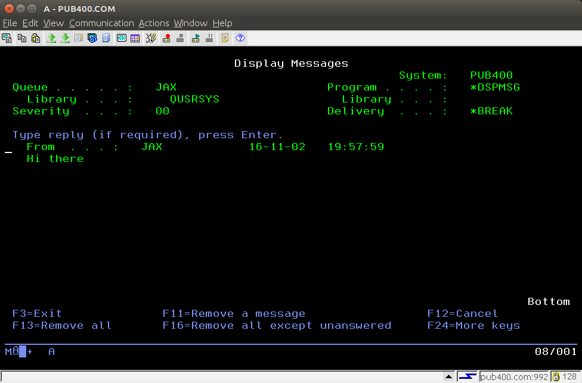

The concise reference to
the
An extensible object-disoriented
interpretive language for midrange and mainframe remote
system programming
|
Copyright © 2017 Jack. J. Woehr jwoehr@softwoehr.com All Rights Reserved SoftWoehr LLC http://www.softwoehr.com PO Box 51 Golden, CO 80402-0051 USA |
Author: Jack J. Woehr
Original date: 2013-07-11
Last edit: 2017-09-01
Copyright (c) 2015, Absolute Performance, Inc. http://www.absolute-performance.com Copyright (c) 2017, Jack J. Woehr jwoehr@softwoehr.com http://www.softwoehr.com All rights reserved. Redistribution and use in source and binary forms, with or without modification, are permitted provided that the following conditions are met: * Redistributions of source code must retain the above copyright notice, this list of conditions and the following disclaimer. * Redistributions in binary form must reproduce the above copyright notice, this list of conditions and the following disclaimer in the documentation and/or other materials provided with the distribution. THIS SOFTWARE IS PROVIDED BY THE COPYRIGHT HOLDERS AND CONTRIBUTORS "AS IS" AND ANY EXPRESS OR IMPLIED WARRANTIES, INCLUDING, BUT NOT LIMITED TO, THE IMPLIED WARRANTIES OF MERCHANTABILITY AND FITNESS FOR A PARTICULAR PURPOSE ARE DISCLAIMED. IN NO EVENT SHALL THE COPYRIGHT HOLDER OR CONTRIBUTORS BE LIABLE FOR ANY DIRECT, INDIRECT, INCIDENTAL, SPECIAL, EXEMPLARY, OR CONSEQUENTIAL DAMAGES (INCLUDING, BUT NOT LIMITED TO, PROCUREMENT OF SUBSTITUTE GOODS OR SERVICES; LOSS OF USE, DATA, OR PROFITS; OR BUSINESS INTERRUPTION) HOWEVER CAUSED AND ON ANY THEORY OF LIABILITY, WHETHER IN CONTRACT, STRICT LIABILITY, OR TORT (INCLUDING NEGLIGENCE OR OTHERWISE) ARISING IN ANY WAY OUT OF THE USE OF THIS SOFTWARE, EVEN IF ADVISED OF THE POSSIBILITY OF SUCH DAMAGE.
cim
cimi
desktop
map
Ublu is a tool for ad-hoc process automation primarily aimed at IBM i ®.
The Java command line java ublu.Ublu [args ...] invokes an extensible object-disoriented interpretive language named Ublu intended for interaction between any Java platform (Java 7 and above) on the one hand, and OS400 (IBM i Series OS ® 5.4 and above) and/or IBM z/VM ® SMAPI operations programming on the other. The language is multithreaded and offers a client-server mode. It also possesses a built-in single-step debugger.
"Any Java platform (Java 7 and above)"
includes running natively on IBM i. When executing Ublu
interpretively on IBM i, a character set including the
@ sign must be set, e.g., CCSID
37.
Other open source software is used to provide other
facilities, see the usage
command and license files in the root directory of the
distribution.
"Object-disoriented"
means that Ublu is a procedural language with function
definitions which is implemented on top of object-oriented Java
libraries. Ublu manipulates objects constructed in the underlying
environment without forcing the user to know very much about the
object architecture. By way of analogy, consider how resources in
a hierarchical network environment are flattened out for ease of
use by
LDAP. In a similar fashion, Ublu conceals many details while
still providing complete access should a program require it,
e.g., via the calljava
command.
Ublu operates in four (4) modes:
In any mode, Ublu reads a line and then consumes one or more
commands and their arguments and attempts
to execute them. In certain cases, text parsing crosses line
boundaries, e.g., when a quoted
string or execution block
extends for multiple lines.
Ublu provides the command FUNC to define functions with argument lists which can later be invoked with appropriate arguments.
Commands and command features are steadily being added to the repertoire of Ublu. Suggestions for added commands or extensions to extant commands are welcome and should be made via whatever ticketing system is present on the site where Ublu is distributed.
Each Ublu release is distributed as an archive containing
The lib directory contains third-party .jar files containing classes referenced by Ublu. The lib directory should be a subdirectory of the directory containing ublu.jar .
We recommend the following layout:
/opt/ublu/ublu.jarThen define a function for your login shell:
/opt/ublu/lib
/opt/ublu/examples
/opt/ublu/extensions
... etc.
It can be a good idea to download the full source or check it out via git or svn from https://github.com/jwoehr/ublu.git Changes, features and bug fixes come pretty frequently at present.
When you have the source tree, change directory to the top
level and execute ant (which you will
need to have installed separately). Ant will build the default
target and leave its output in the dist
directory.
Ublu invocation: java [ java options .. ] -jar ublu.jar [ ublu options .. ] [ ublu commands .. ]
Ublu options:
-i filename [-i filename ..] include all indicated source files
-s if including, include silently, otherwise startup interpreter silently
-t [filename, --] open history file filename or default if --
-h display this help and then exit
-w [properties_file_path] [ ublu commands .. ] starts Ublu in a GUI window which processes no other options and interprets the commands, then waits for more input or menu selections.Note: SSL support for connections to the server requires a slightly different invocation and is discussed here.If the lib directory is a subdirectory of the directory in which ublu.jar resides, Ublu can be invoked via java -jar as shown. Otherwise, prior to invocation the
CLASSPATHmust be set to include each of the supporting .jar files found in the lib directory.
-i myfile.ublu which means "include myfile.ublu"
-i
myfile.ublu -s -- put ${ some string }$--
terminates option processing. All further elements are of
the command line are taken to be input to the Ublu
interpreter.-- or on the first non-option is passed in
order to the initial input line of the interpreter.includes an Ublu source file. Any
number of files may be included in order in this fashion.
If the -s is also present anywhere in the options
portion of the invocation command line, then all -i
includes will be silent. After all includes, the rest of
the command line will be parsed and executed as Ublu
commands by the main interpreter, after which the main
interpreter will take normal interactive input.-toption.-h displays Ublu information and
invocation help and exits 0.-g which is
passed to Ublu by the experimental enhanced Ublu console
Goublu to tell Ublu it is running under Goublu. This -g
switch should not be invoked manually by the user.-i includefilename options
are present, Ublu performs all includes, then prompts and
awaits interactive input.-i includefilename options are
present, Ublu prints to standard error information about
the build including time/date stamp, open source usage and
copyright and then the main interpreter prompts and awaits
interactive input.To exit the system, type bye . Some minimal cleanup will be performed.Ublu 1.1.7 build of 2017-07-05 15:43:42 Author: Jack J. Woehr. Copyright 2015, Absolute Performance, Inc., http://www.absolute-performance.com Copyright 2017, Jack J. Woehr, http://www.softwoehr.com All Rights Reserved Ublu is Open Source Software under the BSD 2-clause license. THERE IS NO WARRANTY and NO GUARANTEE OF CORRECTNESS NOR APPLICABILITY. *** Ublu utilizes the following open source projects: IBM Toolbox for Java: Open Source Software, JTOpen 9.3, codebase 5770-SS1 V7R3M0.00 built=20170320 @T2 Supports JDBC version 3.0 Toolbox driver version 11.3 --- Postgresql PostgreSQL 9.4.1208.jre6 Copyright (c) 1997-2011, PostgreSQL Global Development Group All rights reserved http://www.postgresql.org --- tn5250j http://tn5250j.sourceforge.net/ NO WARRANTY (GPL) see the file tn5250_LICENSE --- SBLIM CIM Client for Java HEAD 2017-01-28 18:34:31 http://sblim.cvs.sourceforge.net/viewvc/sblim/jsr48-client/ Copyright (C) IBM Corp. 2005, 2014 Eclipse Public License https://opensource.org/licenses/eclipse-1.0.php --- PigIron 0.9.7+ http://pigiron.sourceforge.net Copyright (c) 2008-2016 Jack J. Woehr, PO Box 51, Golden CO 80402 USA All Rights Reserved --- org.json Copyright (c) 2002 JSON.org *** Type help for help. Type license for license. Type bye to exit.
java -Xms4g -Xmx4g -jar /opt/ublu/ublu.jar ...which allocates 4 gigabytes.
As an interpreter, one or more commands with their arguments
can be issued on a line. The commands will be executed in
sequence. If any command fails, generally the interpreter will
abandon the rest of the commands on the line and return to the
prompt. The interpreter mode prompt is a right-arrow (
> ) but will have a number to the left of it (e.g.,
1>) if in a nested interpreter sublevel.
The interpret command can be
used to enter a nested interpreter sublevel, an interpreter
nested within the previous level of interpreter.
State is inherited by a nested interpreter sublevel from the
previous level of interpreter.
Some state persists in the previous level of interpreter when
the nested interpreter sublevel ends and some is lost.
When the sublevel ends (via bye or
Ctl-D),
The instance of the interpreter presented to the user upon
program invocation is called the main
interpreter to distinguish it from nested interpreter sublevels
and from (possibly multiple) interpreter instances created in
server mode.
The Ublu interpreter by default depends upon the Java console. Java console support is minimal on most platforms. A better front end console for Ublu called Goublu has been coded in the Go language and can be downloaded and built if you have the Go language installed for your platform.
Ublu can launch multiple TCP/IP port servers that accept
connections and bind them to individual interpreter sessions. This allows remote
applications such as web applications to execute Ublu commands
and receive their output. The default listener port is 43860. See
the server command.
The server command can also be used to interpret a
single execution block for each
connection and then disconnect at the end of interpreting the
block. This allows the user to connect to a "canned program"
instead of gaining access to the full interpreter.
Invoked as a command line application with or more commands
following the invocation on the shell
command line, the commands and their arguments are processed as
in the interpreter, then the application exits. If one of the
commands is interpret, then the
application continues to run until that interpreter exits when
that interpreter encounters the bye
or exit command. exit
always exits, but bye only unnests one interpreter
level. If that interpreter is the main interpreter, Ublu exits.
Input for the main interpreter
can come from the console or from standard input when Ublu is
invoked using some form of shell redirection, e.g., shell pipes (
| ) or "here documents" ( << ).
In interpreter and commandline mode, command output of Ublu is written to standard out, with the exception of the following which are written to standard error:
When automating system tasks, it may be helpful to redirect stderr from the shell command line via 2>/dev/null to discard miscellaneous interpreter informational output. This, however, discards error messages as well.
In server mode, Ublu standard out is connected the network socket. However, Ublu standard error output remains attached to the invoking interpreter's standard error. This makes the main interpreter a monitor of errors occurring in server threads.
Interpretation of a text file of commands and functions
is performed via the command include.
Ublu offers a command gensh which autogenerates a shell script to process arguments to your custom function via command line switches and invoke your custom function with those arguments. This is the Ublu model for runtime program delivery.
The dbug command provides interactive
single-step debugging of an execution
block.
Parsing and syntax are simplistic.
Input is parsed left-to-right, with no lookback. Each sequence
of non-whitespace characters separated from other non-whitespace
by at least one whitespace character is parsed as an element. No
extra whitespace is preserved in parsing, not even within
quoted strings (with the important
exception that a quoted string is always returned with a blank
space as the last character).
Note that the simplistic parser imposes one
particularly arbitrary limitation in that within an execution block neither the block opener
$[ nor the block closer ]$ are allowed to
appear inside a quoted string. If you need to have those symbols
in a quoted string, the limitation is easy to get around, as
follows:
put -to @foo ${ $[ }$
put -to @bar ${ $] }$
FOR @i in @foo $[ put -from @i ]$
$[
FOR @i in @bar $[ put -from @i ]$
$]
Quoting of strings is achieved by placing the string between two elements ${ and }$ . The open and close elements of a quoted string must each be separated by at least one space from the contents of the string and from any leading or following commands or arguments.
The string command offers
many manipulations of strings to get what you want.
Whitespace between non-whitespace elements of the string is compacted into single spaces ${ This is a quoted string. }$ represents This is a quoted string. A quoted string is always returned by the parser with a blank space at the end of it.
A quoted string can span multiple lines. When end-of-line is reached in the interpreter after the open-quote glyph ( ${ ) without finding the close-quote glyph ( }$ ), then string parsing continues and the prompt changes for any lines following until the close-quote glyph is encountered. The string parsing continuation prompt is the open-quote glyph surrounded in parentheses (${) .
Note that the simplistic parser imposes one
particularly arbitrary limitation in that within an execution block neither the block opener
$[ nor the block closer ]$ are allowed to
appear inside a quoted string. If you need to have those symbols
in a quoted string, the limitation is easy to get around, as
follows:
put -to @foo ${ $[ }$
put -to @bar ${ $] }$
FOR @i in @foo $[ put -from @i ]$
$[
FOR @i in @bar $[ put -from @i ]$
$]
The Ublu interpreter starts with certain tuples already defined, as shown in the chart below:
name value notes @truetruecan be used for conditionals, etc. @falsefalsecan be used for conditionals, etc.
These defaults are not constant and can be overwritten at runtime via normal tuple manipulation.
A tuple springs into being in the global tuple map when a previously unused tuple name is used as a destination datasink or as a parameter (input or output) to a function. When autoinstanced in this fashion, the new tuple's value is null. Alternatively, you can create a tuple variable using the tuple command, e.g. tuple -true @foo will set @foo to true if it exists already, or will create @foo and set it to true if it does not yet exist.
> put -to ~ ${ but not a clever test }$
> put -to ~ ${ this is a test }$
> string -to ~ -cat ~ ~
> put ~
this is a test but not a clever test
If the interpreter encounters a tuple variable or the tuple stack pop symbol ~ (tilde) when it is expecting a command, it checks the value of that variable. If the value is of a class in the list of autonomes, that is, classes whose instances are generally passed as the argument to the eponymous dash-command of a specific Ublu command, that command is invoked with tuple as the eponymous argument, along with any dash-commands and/or arguments which follow. If the variable is not autonomic, the interpreter reports an error.
Thus, the third, fourth and sixth commands of the following example using ifs to get the size of a file in the Integrated File System are equivalent:
> as400 -to @mysys MYSYS.com myid mYpAssWoRd > ifs -to @f -as400 @mysys -file /home/myid/.profile > ifs -- @f -size 56 > @f -size 56 > lifo -push @f > ~ -size 56
Autonomic tuple variables offer a useful object-disoriented shorthand which, along with tuple stack wizardry, one should consider avoiding in larger programs in the interest of clarity.
Constants are created via the const
command. Constants have a string value. The name of a constant
has the form *somename and can be used as the argument to a command or
dash-command where the syntax
notation represent the argument as ~@{something} and
only in such position. Constants are not expanded within quoted
strings. Constants cannot be used as the argument to a
-from or -to dash-command. Plainwords resembling constants, i.e., starting
with an asterisk * are not mistaken for constants if they have
not been defined as such.
Constants defined in an interpreter level appear in its nested interpreter sublevels. However, constants defined in nested interpreter sublevels do not persist into the previous interpreter level.
An execution block is a body of commands enclosed between the block opener $[ and the block closer ]$ . Execution blocks are used in functor declarations (callable routines) via the FUN command and with conditional control flow commands such as FOR and IF - THEN - ELSE to express the limit of a code phrase in a condition.
IF @varname THEN $[ command command .. ]$ ELSE $[ command command ]$
is a generalized example of block usage.
An execution block can contain local variable declarations and their use.
A local variable declaration hides identically named variables
from the global context and from any enclosing block. Inner
blocks to the declaring block have access to the locals in
enclosing blocks, unless, of course, an identically named
variable has been declared local to the enclosed block.
Note that the "comment-to-end-of-line" command # should not ever be used in an execution block! An execution block is treated as one command line, so the comment command will devour the rest of the block.
Note that the simplistic parser imposes one
particularly arbitrary limitation in that within an execution block neither the block opener
$[ nor the block closer ]$ are allowed to
appear inside a quoted string. If you need to have those symbols
in a quoted string, the limitation is easy to get around, as
follows:
put -to @foo ${ $[ }$
put -to @bar ${ $] }$
FOR @i in @foo $[ put -from @i ]$
$[
FOR @i in @bar $[ put -from @i ]$
$]
An execution block may span several lines, however, the
opening bracket ( $[ ) of the block must appear
on the same line with and directly after the conditional control
flow command operating upon it.
Execution blocks may be nested.
In the Tips and Tricks section
of this document is an example which will get a list of active
interactive jobs and search that list for specific
jobs.
An execution block can have local tuple variables declared via the LOCAL command whose names hide variables of
the same name which may exist outside the execution block. Locals
disappear at the end of the block in which they are
declared.
Local variables can be used safely even when a global tuple variable coincidentally of the same name is passed in as a function argument; no collision results, and both the local and the function argument can be referenced.
Example
FUNC foo ( a ) $[
LOCAL @a
put -to @a ${ inner @a }$
put -n -s ${ outer a: }$ put -from @@a
put -n -s ${ local a: }$ put -from @a
]$
put -to @a ${ outer @a }$
foo ( @a )
outer a: outer @a
local a: inner @a
A functors is an anonymous execution block created via FUN which can then be stored in tuple variable and invoked via CALL and/or associated with a name entry in
the function dictionary via defun.
Arguments can be passed to the functor. Arguments are
call-by-reference; the resolution of these arguments is discussed
under Function Parameter
Binding.
A function is a functor associated
with a name entry in the function
dictionary, usually via FUNC but
also via the combination of FUN and
defun.
The function dictionary is searched after the list of built-in commands. Dictionaries can be listed, saved, restored and merged via the dict command. Arguments can be passed to the block. All arguments are passed by reference, i.e., passing a tuple variable to a function argument list passes the tuple itself, not the tuple's value, and any alteration of the argument alters the tuple referred to in the argument list. The resolution of these arguments is discussed under Function Parameter Binding.
> FUNC yadda ( a ) $[ FOR @word in @@a $[ put
-n -s -from @word put ${ yadda-yadda ... }$ ]$
]$
> put -to @words ${ this that
t'other }$
> yadda ( @words
)
this yadda-yadda ...
that yadda-yadda ...
t'other yadda-yadda ...
> dict -list
#
yadda ublu.util.Functor@1d4b0e9
FUNC yadda ( a ) $[ FOR @word in @@a $[ put -n -s -from
@word put ${ yadda-yadda ... }$ ]$ ]$
> dict -save -to mydict
>
FUNC -delete yadda
> dict
-list
> dict -restore
-from mydict
> dict
-list
# yadda
ublu.util.Functor@14fd510
FUNC yadda ( a ) $[ FOR @word in @@a $[ put -n -s -from
@word put ${ yadda-yadda ... }$ ]$ ]$
See also the FUN and
defun commands.
Ublu's interpreter being purely a text interpreter, performing (almost) no tokenization during interpretation and compilation, function parameter binding is effected by runtime rewriting ("token pasting") of argument references (e.g., @@some_arg) in the execution block to the actual positional parameter value provided at the time the function is called.
Arguments passed to a function or functor can be
Arguments other than blocks or quoted strings are handled as follows:
~ that symbol will appear at runtime wherever the
argument is substituted in the function body.Thus, in the case of a function
foo ( a b c ) $[ put @@a put @@b put @@c ]$called with arguments
foo ( @bar woof @zotz )is effectively seen at invocation by the interpreter as
$[ put @bar put woof put @zotz ]$
The temporary alias actually pasted for tuple variable arguments to functions can be seen in the debugger.
It is perfectly acceptable to name function parameters with the same names as command or functions. But this practice can detract from the readability of the code, especially if using the syntax coloring edit modes provided with Ublu.
Function definitions are stored in the function
dictionary.
Interpreter instances launched by
the interpret command inherit
the current function dictionary. Any additions within an
interpreter instance are lost when the instance exits back to its
parent interpreter instance.
You can view the current function dictionary or save it to a file or tuple variable and later restore it or merge it with the current dictionary. See the dict and savesys commands.
> joblist testsys frrd oopswrongThe behavior of Ublu when a signon attempt fails can be modified. See the as400 and props commands for details.
Please enter a valid userid for testsys: fred
Please enter a valid password for testsys (will not echo):
000000/QSYS/SCPF
000736/QSYS/QSYSARB
000737/QSYS/QSYSARB2
... etc.
-property prompt falsewhich adds ;prompt=false to the URL for the JDBC connection and disables the windowing password prompt.
Commands are the verbs of Ublu. Some have only language
meaning, but the most important commands operate directly upon a
host system affecting its data and operation. Be sure you
understand what you are doing when you use an Ublu
command!
Access to i Series hosts is provided through IBM's open source
JTOpen
library.
Access to z/VM SMAPI is provided through the author's open
source PigIron
library.
Commands are conceptually structured in three parts
Not all commands have dash-commands. Not all commands take
arguments. Usually they take one or the other. The general order
of the three parts is as follows:
command [dash-command dash-command-argument [dash-command-argument dash-command-argument ...] ] command-argument [command-argument ...]
Where dash-commands are give in
square brackets, e.g., [-foo ~@{bazz}] the dash-command
is optional and not required.
In this documentation, square brackets and ellipses are used
to describe the command structure. Those square brackets and
ellipses are not part of the syntax of Ublu, merely documentation
notation. See the examples given in the documentation and in the
examples directory in the distribution.
In this documentation, where multiple dash-commands are
enclosed collectively in a outer pair of square brackets and
individually enclosed in square brackets and the bracketed
dash-commands separated by the .OR. bar ( | ), e.g., then the
dash-commands are a set of mutually exclusive optional
dash-commands, e.g., [[-foo ~@{bazz}] | [-arf
~@{woof}]]
Where square brackets are missing from a dash-command
description, the dash-command, or one of the alternative of a
series of dash-commands separated in the description by the .OR.
bar ( | ) is required.
Some dash-commands are required in some contexts, and not in
others. Such cases are explained in the explanatory text for the
command.
A command is a one-word command name. It is the first
element of any Ublu command invocation.
A dash-command is a modifier to the command, itself
often possessing an argument or string of arguments.
All dash-commands with their arguments must appear on the same
line with the command, except that a quoted string or block argument to a command or
dash-command, once started, may span line breaks, thus extending
a command over two or more lines.
If dash-commands specify conflicting operations, the last
dash-command encountered in command processing is the operative
choice.
Often one dash-command is actually the default operation for the command, so that if no dash-command is provided, this default provides the operation of the command anyway. These defaults are noted in the command descriptions.
Many commands are used to create objects of various kinds and
store them in tuple variables.
Later, these same command operate on these same objects which
they themselves have created. This sort of command references the
tuple containing such an object via an eponymous dash-command,
e.g, job -job @some_job etc. This eponymous dash-command
can generally be replaced by -- instead, so the example
just given could equally be written job -- @some_job
etc.
Often the order in which dash-commands appear on a line does
not matter, but sometimes it does. To be safe, dash commands
should generally follow the command in this order:
dbug command.
An argument is the object or, for multiple arguments,
list of objects necessary for command execution.
Commands may have arguments, and their dash-commands may also have their own arguments.
All arguments to a command or dash-command must appear on the
same line as the command or dash-command and cannot span a
line-break, except that a quoted
string once started may span line breaks, thus extending a
command over two or more lines.
In command descriptions:
An example of a command with dash-commands and arguments is the following:
job -job @j -to @subsys -get subsystem
job -- @j -to @subsys -get subsystemusing the eponymous dash-command instead of -job.
A datasink's type is recognizable from its name.
ERR: is the standard error output stream.NULL: discards output.~In the absence of the -to dash-command, the default destination datasink of a commands is STD: (standard out).
When a command results in an object other than a string and the command's destination datasink is File or Standard or Error output, Ublu intelligently renders the object as a string.
If the object is of a class which Ublu does not recognize, the object's toString() method is called to provide the data.
In order to access the iSeries (AS400) server, many commands
routinely require in their argument string the following three
items:
| Ublu Language |
Server and Host Interaction |
Utilities |
Java / JTOpen |
|---|---|---|---|
| ask BREAK bye CALL collection commandcall const dbug defun dict DO ELSE eval exit FOR FUN FUNC help or usage histlog history or h IF include interpret interpreter LOCAL lifo list mapprops put savesys server sleep string SWITCH system TASK test thread THEN THROW TRY tuple WHILE ! # or #! |
as400 db cs cim cimidq dta file ftp host ifs job joblist joblog jrnl monitor msg msgq objdesc objlist outq ppl printer programcall record rs savef session smapi sock spoolf spoolflist streamf subsys sysval tn5250 user userlist |
dpoint gensh json license |
calljava jmx jvm num trace |
Here is the list of commands Ublu understands and their
descriptions. Some descriptions below start with a leading-slash
(/) and a number, indicating the number of arguments expected
(excluding dash-commands). The
slash/numbers are not part of the command syntax, and
only serve as documentation: do not enter them yourself. A
plus-sign (+) after the number indicates the number represents a
minimum number of arguments rather than an absolute number.
Optional dash-commands are indicated in [square brackets]. Again,
the brackets are documentation, and not part of the actual
syntax, just enter the dash-command and its argument(s), if
any.
Most commands provide a brief summary via help -cmd commandname. That summary is repeated in the command descriptions below. The (neither rigorous nor always entirely accurate) schematic meaning of the summary is as follows:
commandname /numargs[?] [[-dash-command [arg arg ...]] [-dash-command [arg arg ...]] ...] [[-mutually-exclusive-dash-command [arg arg ...]] | [mutually-exclusive-dash-command [arg arg ...]] ...] argument argument [optional-argument] ... : description of command's action
- commandname is the name used by the interpreter for the command
- /numargs[?] is count of how many arguments are nominally expected by the command.
- an optional question-mark ? is appended if this number commonly varies.
- a typical variation in number is the use of the -as400 dash-command to obviate repeated use of the system userid and password arguments.
-dash-command argrepresents a mandatory dash-command and its argument- [-dash-command [arg arg ...]] represents an optional dash-command with optional dash-command arguments.
- [[-dash-command [arg arg ...]] [-dash-command [arg arg ...]] ...] represents several dash-commands, each of which may possess arguments.
- [-mutually-exclusive-dash-command [arg arg ...]] | [mutually-exclusive-dash-command [arg arg ...]] ...] represents mutually exclusive dash-commands which may not be used together.
- argument argument [optional-argument] ... represents the formal arguments to the command.
- description of command's action is just that.
If the first dash-command documented for the command is the -as400 dash-command, then by use of the as400 command to store a system instance in a tuple and the subsequent use of the -as400 dash-command, such a command can omit the three (3) arguments system userid password leaving the rest of the formal argument list the same as it was.
/3? [-to @var] [--,-as400,-from ~@var] [-usessl] [-ssl ~@tf] [-nodefault] [-new,-instance | -alive | -alivesvc ~@{[CENTRAL|COMMAND|DATABASE|DATAQUEUE|FILE|PRINT|RECORDACCESS|SIGNON]} | -connectsvc ~@{[CENTRAL|COMMAND|DATABASE|DATAQUEUE|FILE|PRINT|RECORDACCESS|SIGNON]} | -connectedsvc ~@{[CENTRAL|COMMAND|DATABASE|DATAQUEUE|FILE|PRINT|RECORDACCESS|SIGNON]} | -connected | -disconnect | -disconnectsvc ~@{[CENTRAL|COMMAND|DATABASE|DATAQUEUE|FILE|PRINT|RECORDACCESS|SIGNON]} | -ping sysname ~@{[ALL|CENTRAL|COMMAND|DATABASE|DATAQUEUE|FILE|PRINT|RECORDACCESS|SIGNON]} | -local | -validate | -qsvcport ~@{[CENTRAL|COMMAND|DATABASE|DATAQUEUE|FILE|PRINT|RECORDACCESS|SIGNON]} | -svcport ~@{[CENTRAL|COMMAND|DATABASE|DATAQUEUE|FILE|PRINT|RECORDACCESS|SIGNON]} ~@portnum | -setaspgrp -@{aspgrp} ~@{curlib} ~@{liblist} | -svcportdefault | -proxy ~@{server[:portnum]} | -sockets ~@tf | -netsockets ~@tf | -vrm ] ~@{system} ~@{user} ~@{password} : instance, connect to, query connection, or disconnect from an as400 systemCreates an object instance representing an AS400 system and manipulates that object. The instance is intended to be stored in a tuple variable for later use with the -as400 dash-command to many commands so that the system, userid and password need not be repeated with various commands.
Note on SSL: Connection to the system can be encrypted via SSL via the -usessl or -ssl dash-commands documented below.
- You will need to create a keystore and add any trusted certificate to that keystore for any server using self-signed certificates to which you wish to connect.
- I use
openssl s_client -connect example.comto display the certificate and copy-and-paste it toexample.cer- I add the certificate to my keystore with
keytool -import -alias EXAMPLE -file example.cer -keystore /full/path/to/mykeystore- You must launch Ublu with the appropriate Java property pointing to the keystore, e.g
java -Djavax.net.ssl.trustStore=/full/path/to/mykeystore -jar /opt/ublu/ublu.jararguments...- The setup of the keystore is discussed in the IBM Support document Setup Instructions for Making Secure Sockets Layer (SSL) Connections with the IBM Toolbox for Java.
When an as400 instance is no longer in use but your program continues, it is often best to -disconnect or -disconnectsvc.
An as400 instance stored in a tuple variable @myas400 is passed to the as400 command using any one of the three dash-command forms:
This is a bit redundant but the three forms persist for historical reasons.
- -- @myas400
- -as400 @myas400
- -from @myas400
The operations of the dash-commands are as shown:
- -new,-instance instances and puts the as400 instance. This is the default operation. -instance is deprecated, use -new instead
-nodefaultat instancing time tells Ublu not to set the service ports to defaults. This is necessary in the following cases:Otherwise, the
- your code is running native on IBM i and you wish the code to use local calls instead of socket connectivity
- your code is running native on IBM i and you wish to cause the code to use Unix sockets by subsequently using the dash-command
-usesockets- you wish to manually set the service ports (or use the server's portmapper to find the service ports) via the dash-command
-svcportas400command automatically sets the ports to their defaults, after which invocations of-usesocketsand-netsocketswill cause an exception.- -usessl indicates connections will be made using Secure Sockets Layer (SSL). This dash-command can only be used at instance creation time (
-new).- -ssl ~@tf indicates connections will be made using Secure Sockets Layer (SSL) if the value of the tuple (or pop) ~@tf is true ... any other value means "no SSL". This dash-command can only be used at instance creation time (
-new).- -alive puts true if the as400 instance passed to the -as400 @var dash-command is connected to any service and that connection is alive, false otherwise.
- Note: on i Series OS prior to 7.1 alive behaves the same as -connected.
- -alivesvc puts true if the as400 instance is connected (false otherwise) to the specified service, one of CENTRAL|COMMAND|DATABASE|DATAQUEUE|FILE|PRINT|RECORDACCESS|SIGNON and that connection is alive.
- Note: on i Series OS prior to 7.1 -alivesvc behaves the same as -connectedsvc.
- -connectsvc connects the as400 instance to the specified service, one of CENTRAL|COMMAND|DATABASE|DATAQUEUE|FILE|PRINT|RECORDACCESS|SIGNON
- Note that it is not usually necessary to explicitly connect to a service. Ublu commands perform all necessary connections.
- -connectedsvc puts true if the as400 instance is connected (false otherwise) to the specified service, one of CENTRAL|COMMAND|DATABASE|DATAQUEUE|FILE|PRINT|RECORDACCESS|SIGNON
- -connected puts true if the as400 instance passed to the -as400 @var dash-command is connected to any service, false otherwise.
- -disconnect disconnects all services when used with the -as400 @var dash-command where @var refers to an as400 instance previously instanced.
- -disconnectsvc disconnects the as400 instance from the specified service, one of CENTRAL|COMMAND|DATABASE|DATAQUEUE|FILE|PRINT|RECORDACCESS|SIGNON
- -svcport ~@{[CENTRAL|COMMAND|DATABASE|DATAQUEUE|FILE|PRINT|RECORDACCESS|SIGNON]} ~@portnum sets the TCP port for the specified service for when the port used is not the default port. A value of -1 for the port number means to use the TCP/IP portmapper service to find the port.
- -setaspgrp resets the ASP group, the current library and the library list.
- -svcportdefault resets all service ports to their default values.
- -ping sysname service checks whether a specified TCP service used by Ublu, one of CENTRAL|COMMAND|DATABASE|DATAQUEUE|FILE|PRINT|RECORDACCESS|SIGNON, or all such services (ALL) are running on the host specified as sysname.
- true is put if the service is available, false otherwise.
- -local puts true if Ublu is running locally on an IBM i server.
- -proxy ~@{server[:portnum]} assigns the JTOpen proxy server (a running instance of com.ibm.as400.access.ProxyServer) if one is being used.
- -qsvcport ~@{[CENTRAL|COMMAND|DATABASE|DATAQUEUE|FILE|PRINT|RECORDACCESS|SIGNON]} puts the port on which the as400 object is currently set contact the named service.
- -sockets ~@tf if ~@tf is true requires the as400 instance to use socket connections instead of APIs when running locally on an IBM i server.
- -netsockets ~@tf if ~@tf is true requires the as400 instance to use Internet domain socket connections instead of Unix sockets when using sockets locally on an IBM i server.
- -validate validates the signon for the system+user+password combination represented by the as400 object and puts true or false accordingly.
- -vrm puts the Version/Release/Modification of the as400 instance as a 24-bit hex number (with leading zeroes, if any, not shown) of the form xxyyzz where
- xx is the version
- yy is the release
- zz is the modification
In the absence of dash-commands the default operation is -instance.
When a signon fails for bad userid or incorrect password, a signon handler is invoked. The JTOpen class library which provides connection to the host has a builtin handler, which opens a GUI window to prompt the user if it can and fails with a mysterious error message if GUI capabilities are not present, e.g., in an ssh session which does not pass XWindows thru. There are also two custom handlers in Ublu, a custom handler which prompts the user textually, and a null handler which simply fails the login operation. This behavior can be controlled on a per-interpreter basis via the props command:
- props -set signon.handler.type BUILTIN uses the JTOpen GUI-based handler
- props -set signon.handler.type CUSTOM uses the Ublu text-based handler
- props -set signon.handler.type NULL uses the Ublu fail-on-error handler
The default is CUSTOM ... users will be prompted in text mode in case of a signon failure.
In the absence of the explicit switches -usessl and -ssl, the as400 command will create SSL (Secure Socket Layer) secure instances if the correct property is set via the props command prior to instancing.
- props -set signon.security.type SSL means as400 creates SSL-secured instances
- props -set signon.handler.type NONE means as400 creates non-secured instances
The default is NONE.
Example
as400 -to @myas400 mysystem myuserid mypasswd # an instance of the system is now stored in the tuple variable @myas400
joblist -as400 @a # a joblist is now fetched from mysystem on behalf of myuserid.
joblist -as400 mysystem myuserid mypasswd # fetches the joblist in the same fashion as the previous command
as400 -- @myas400 -setaspgrp *CURUSR *SYSVAL *CURUSR # sets to defaults, could be new values, liblist could be long string
as400 -- @myas400 -disconnect
/0 [-to datasink] [-from datasink] [-nocons] [-say ~@{prompt string}] : get input from user
ask prompts the user (if a prompt string is provided) and puts the response from the user, who must press [enter] after entering reponse text.
If Ublu is windowing,
askputs up a requester dialog instead of prompting in the text area.If the user simply presses [enter] or [OK] without inputing any text, a zero-length string is put. In windowing mode, if the user presses [Cancel], null is put.
If the -from dash-command is set, the prompt comes from
- The first line of any file datasource
- The string value of a tuple referenced by -from
If
-noconsis set, Ublu will not attempt to read the console but instead read the standard input. This has no effect in windowing mode.Example
> ask -say ${ What is funny? }$
What is funny? : elephants and giraffes and zoos
elephants and giraffes and zoos
> ask -to @answer -say ${ Do you have anything to say? }$
Do you have anything to say? :
> string -len @answer
0
/0 : exit from innermost enclosing DO|FOR|WHILE block
Example
The following will fetch a joblist of active interactive jobs and look for MARSHA as a user in the job list, BREAKing when found.
as400 -to @as400 mysystem myuid ********
put ${ Looking for MARSHA in a list of all active interactive jobs }$
joblist -to @joblist -jobtype INTERACTIVE -active -as400 @as400
FOR @j in @joblist $[
job -job @j -get user -to @user
put -to @marsha ${ MARSHA }$
test -to @match -eq @user @marsha
IF @match THEN $[
put -n ${ We found Marsha! }$
job -job @j -info
BREAK
]$ ELSE $[
put -n ${ nope }$
]$
]$
terminates the current interpreter level immediately, ending processing and discarding any following commands at that level. It takes no arguments. At the top level, bye exits Ublu. More cleanup is performed by leaving Ublu via bye than with exit.
Example
> interpret
1> interpret
2> bye foo bar woof
1> bye
> bye
Goodbye!
$
/? ~@tuple ( [@parm] .. ) : Call a functor
The functor to be called was created by FUN and is stored in ~@tuple. When the functor was defined, a list of parameter names was provided. The substitution list of tuple names to substitute for the parameter names when encountered in the functor's execution block surrounded in parentheses and separated by at least one space but all on the same line follows.
Example
FUN -to @fun ( a b c ) $[ put -from @@a put -from @@b put -from @@c ]$
put -from @fun
ublu.util.Functor@5f40727a ( a b c ) $[ put -from @@a put -from @@b put -from @@c ]$
put -to @aleph ${ this is a }$
put -to @beth ${ and here is b }$
put -to @cinzano ${ la dee dad }$
CALL @fun ( @aleph @beth @cinzano )
this is a
and here is b
la dee dad
FUN -to @fun ( ) $[ put ${ zero param functor }$ ]$
CALL @fun ( )
zero param functor
put -from @fun
ublu.util.Functor@67ba0609 ( ) $[ put ${ zero param functor }$ ]$
See also defun FUN FUNC
/0 [-to @datasink] -forname ~@{classname} | -class ~@{classname} [-field ~@{fieldName} | -method ~@{methodname} [-arg ~@argobj [-arg ..]] [-primarg ~@argobj [-primarg ..]] [-castarg ~@argobj ~@{classname} [-castarg ..]] | -new ~@{classname} [-arg ~@argobj [-arg ..]] [-primarg ~@argobj [-primarg ..]] [-castarg ~@argobj ~@{classname} [-castarg ..]] | --,-obj ~@object [field ~@{fieldName} | -method ~@{methodname} [-arg ~@argobj [-arg ..]] [-primarg ~@argobj [-primarg ..]] : call Java methods and fieldsThe calljava command invokes a method or constructor in the underlying Java virtual machine or accesses a class or object field. The object result is put to the assigned datasink. If the method has a void return type, nothing is put.
The dash-commands describe the desired Java call or field. If -new appears, the call is to a constructor.
-forname ~@{classname}puts aClassinstance of the specified class.- --,-obj ~@object or
-class ~@{classname}indicates the object or class upon which a method call or field is to be invoked.
- One of either
--,-obj ~@objector-classis necessary in a -method call or-fieldinvocation.- This element is omitted when either the -new or
-fornamedash-command is used.- -new ~@{classname} puts a new object instance of the class indicated by the fully-decorated classname (e.g., java.lang.String) for which a constructor is to be called. Provide necessary arguments if any via
-argand/or-primargand/or-castarg.-field ~@{fieldName}puts the named field for the object or class specified. Thisjava.lang.reflect.Fieldinstance can be used as the-obj ~@objectof later method calls.- -method ~@{methodname} indicates the name of the method to be invoked.
- This element is omitted when the -new or
-fieldor-fornamedash-command is used.- -arg ~@argobj places an object and its class signature in the array to be used in method invocation.
- Multiple arguments are indicated by multiple usage of -arg in left-to-right order matching the Java method specification.
-castarg ~@argobj ~@{classname}places an object and an arbitrary class designation in the array to be used in method invocation.
- This is necessary when a class signature must match exactly. Ublu handles most method calls searching back up the implements/extends chain, but
-newexpects an exact match, so a superclass or interface must be called out in this fashion.- Multiple arguments are indicated by multiple usage of -castarg in left-to-right order matching the Java method specification.
- -primarg ~@argobj places an object and its class signature converted to a primitive type in the array to be used in method invocation.
- Primitive types are passed to a method call as their wrappered types, e.g. int is passed as java.lang.Integer
- -primarg allows calljava to specify that the method signature is for the primitive, not the wrapper class.
- To create numbers of specific Java types to use with
-primargto match method signatures, use the num command.- Multiple arguments are indicated by multiple usage of -primarg in left-to-right order matching the Java method specification.
Note: The Ublu-coded extensions to Ublu in the extensions subdirectory provide many examples of the use of calljava.
See also: num
Examples
> put -to @obj ${ this is a test }$
> calljava -to @result -obj @obj -method length
> put -from @result
15
> num -to @num -int 12
> calljava -to @result -obj @obj -method substring -primarg @num
> put -from @result
st
The following example (
examples/clHelp.ublu) stacks parameters and builds aStringarray of args in order to invoke themain(args [])method of a utility class present in JTOpen.# clHelp.ublu # Example from Ublu Midrange and Mainframe Life Cycle Extension language # https://github.com/jwoehr/ublu # Copyright (C) 2016 Jack J. Woehr http://www.softwoehr.com # See the Ublu license (BSD-2 open source) # clHelp ( lib cmd s u p ) # Generate HTML help for a CL command # args are library commandname system user password # example: clHelp ( QSYS WRKUSRPRF MY400 MYID ******** ) # a file is generated in the current directory QSYS_WRKUSRPRF.html FUNC clHelp ( lib cmd s u p ) $[ LOCAL @start LOCAL @end num -to ~ -int 10 calljava -to ~ -forname java.lang.String calljava -to @L[String -class java.lang.reflect.Array -method newInstance -arg ~ -primarg ~ string -to ~ -trim @@lib string -to ~ -trim ${ -l }$ string -to ~ -trim @@cmd string -to ~ -trim ${ -c }$ string -to ~ -trim @@s string -to ~ -trim ${ -s }$ string -to ~ -trim @@u string -to ~ -trim ${ -u }$ string -to ~ -trim @@p string -to ~ -trim ${ -p }$ put -to @start 0 put -to @end 10 DO @start @end $[ calljava -class java.lang.reflect.Array -method set -arg @L[String -primarg @start -arg ~ ]$ calljava -class com.ibm.as400.util.CommandHelpRetriever -method main -arg @L[String ]$ # browseClHelp ( lib cmd s u p ) # Generate HTML help for a CL command and open default browser on it. # args are library commandname system user password # example: clHelp ( QSYS WRKUSRPRF MY400 MYID ******** ) # a file is generated in the current directory QSYS_WRKUSRPRF.html and it # is loaded into the user's default browser. FUNC browseClHelp ( lib cmd s u p ) $[ LOCAL @filename put -n -to ~ ${ file:// }$ ~ -to ~ -trim system -to ~ ${ pwd }$ \\ ${ system returns an ublu.util.SystemHelper.ProcessClosure object. This calljava gets the output to concatenate to for the absolute URI. }$ calljava -to ~ -- ~ -method getOutput lifo -swap ~ -to ~ -cat ~ ~ -to ~ -cat / ~ -to ~ -cat @@lib ~ -to ~ -cat _ ~ -to ~ -cat @@cmd ~ -to ~ -cat ${ .html }$ ~ -to @filename -trim put @filename clHelp ( @@lib @@cmd @@s @@u @@p ) desktop -browse @filename ]$ # end
cim
/0 [-to datasink] [--,-cim @ciminstance] [-keys ~@propertyKeyArray] [-namespace ~@{namespace}] [-objectname ~@{objectname}] [-url ~@{https://server:port}] [-xmlschema ~@{xmlschemaname}] [-new | -close | -path | -cred ~@{user} ~@{password} | -init ~@cimobjectpath | -ei ~@cimobjectpath] : CIM clientThe
cimcommand creates and employs Common Information Model clients. To do so it uses the SBLIM JSR-48 CimClient library available under the Eclipse Public License.(See also
cimi)To use the CIM client:
- Create an instance.
- Assign credentials to the instance.
- Create a CIM path.
- Use the path to initialize the instance.
- Create a path to the CIM object to be accessed.
- Use the path an argument of the desired operation
This is illustrated as follows:
Example (
examples/test/cimtest.ublu)# cimtest.ublu ... exercise Common Information Model support in Ublu # Example from Ublu Midrange and Mainframe Life Cycle Extension language # https://github.com/jwoehr/ublu # Copyright (C) 2017 Jack J. Woehr http://www.softwoehr.com # See the Ublu license (BSD-2 open source) include /opt/ublu/extensions/ux.cim.property.ublu # cimtest ( url uid passwd namespc ) # ... url is something like https://myserver.foo.org:5989 # ... namespc is something like root/cimv2 FUNC cimtest ( url uid passwd namespc ) $[ LOCAL @client LOCAL @path cim -to @client @client -cred @@uid @@passwd cim -to @path -url @@url -path @client -init @path cim -to @path -namespace @@namespc -objectname CIM_LogicalIdentity -path put -n -s ${ Enumerate Instances for }$ put @path @client -ei @path string -to ~ -new cim -to @path -namespace @@namespc -objectname ~ -path put -n -s ${ Enumerate Classes for }$ put @path @client -ec @path @true cim -to @path -namespace @@namespc -objectname IBMOS400_NetworkPort -path put -n -s ${ Get Instances for }$ put @path @client -to @instances -ei @path FOR @i in @instances $[ put -n -s ${ (( Instance looks like this )) }$ put -from @i @client -to ~ -gi @i @false @false lifo -dup lifo -dup lifo -dup put ~ put ${ *** Putting path for instance *** }$ ~ -path put ${ *** Putting keys for instance *** }$ ~ -keys put ${ *** Putting properties for instance *** }$ ~ -to ~ -properties lifo -dup put ~ FOR @i in ~ $[ put -n -s ${ ***** property is }$ put @i ux.cim.property.getName ( @i ) put -n -s ${ ***** property name is }$ put ~ ux.cim.property.getValue ( @i ) put -n -s ${ ***** property value is }$ put ~ ux.cim.property.hashCode ( @i ) put -n -s ${ ***** property hashcode is }$ put ~ ux.cim.property.isKey ( @i ) put -n -s ${ ***** property is key? }$ put ~ ux.cim.property.isPropagated ( @i ) put -n -s ${ ***** property is propagated? }$ put ~ ]$ ]$ @client -close ]$ # end
cimi
/0 [-to datasink] [--,-cimi @ciminstance] [-class | -classname | -hashcode | -keys | -key ~@{keyname} | -properties | -propint ~@{intindex} | -propname ~@{name} | -path] : manipulate CIM InstancesThe
cimicommand manipulates CIM instances returned by thecimclient. CIM instances are autonomic or can be provided to thecimicommand via--,-cimi @ciminstance.The dash-commands are as follows:
-classputs the class of the instance.-classnameputs the classname of the instance.-hashcodeputs the hashcode of the instance.-keysputs a collection of keys possessed by the instance.-key ~@{keyname}puts the key named keyname for the instance.-pathputs the path of the instance.-propertiesputs a collection of properties possessed by the instance.-propint ~@{intindex}puts the property at index.-propname ~@{name}puts the property with name name.Note: There are extensions to Ublu CIM support in the file(s)
extensions/ux.cim.*.ubluSee also:
cim
/0? [--,-collection ~@collection] [-to datasink] [-show | -size] : manipulate collections of objects
The collection command provides support for Java collections. The collection (created elsewhere) is provided to the command in a tuple argument to the -- or -collection dash-command.
The operations are as follows:
- -show puts a string representation of the collection.
- -size puts the integer size of the collection.
/4? [-as400 ~@as400] [-to datasink] ~@{system} ~@{userid} ~@{passwd} ~@{commandstring} : execute a CL command
executes a CL command represented by commandstring on IBM i system system on behalf of userid with password. The commandstring is a quoted string representing the entire CL command and its arguments. If the -as400 dash-command is provided, then the arguments system userid and password must be omitted.If the command results in one or more AS400 Messages, the Message List is
put.Note that CL display and menu commands do not work! Also, you may have to juggle shell quoting to issue such command lines; it's definitely easier to enter this sort of thing in interpretive mode or as an Ublu program or function.
Example
commandcall -to foo.txt somehost bluto ******** ${ SNDMSG MSG('Hello my friend') TOUSR(fjdkls) }$
# Performs a SNDMSG on SOMEHOST on behalf of user bluto sending the text "Hello my friend" to a user FJDKLS. Any output returned by the command is redirected to a local file foo.txt.
as400 -to @myas400 somehost bluto ******** # creates an as400 instance and stores it in the tuple variable @myas400
commandcall -as400 @myas400 -to foo.txt ${ SNDMSG MSG('Hello my friend') TOUSR(fjdkls) }$
# Performs a SNDMSG just as above using the as400 instance in place of a repetition of credentials.
/2? [-to datasink] [-list | -create | -save | -restore | -merge ] *name ~@{value} : create a constant value
The const command creates a named constant with a string value.
The name of the constant must start with an asterisk character *.
A constant can be used as the argument to a command or dash-command where the syntax notation represent the argument as ~@{something} and only in such position.
The operations are as follows:
- Constants are not expanded within quoted strings.
- A constant cannot be used as the argument of a -from or -to dash-command where its decorated name (rather than its value) will itself be taken for a filename.
- Plainwords resembling constants, i.e., starting with an asterisk * are not mistaken for constants.
- Constants defined in an interpreter level appear in its nested interpreter sublevels.
- However, constants defined in nested interpreter sublevels do not persist into the previous interpreter level.
- -create creates constant *name with string value value. It is the default operation.
- -list lists all defined constants to the destination datasink.
- -save saves the constant map to the -to datasink.
- -restore restores the constant map from the -from datasink.
- the -from datasink must be a tuple variable or a file.
- -merge merges the consts from the constant map on the -from datasink into the current constant map.
- the -from datasink must be a tuple variable or a file.
See also: savesys
Example (examples/test/consttest.ublu)
# consttest.ublu # Example from Ublu Midrange and Mainframe Life Cycle Extension language # https://github.com/jwoehr/ublu # Copyright (C) 2016 Jack J. Woehr http://www.softwoehr.com # See the Ublu license (BSD-2 open source) const *foo ${ this is a test }$ put *foo const *arf 111 num -to @n -long *arf put @n interpret -block $[ put *arf ]$ put -to @i 1 put -to @limit 10 DO @i to @limit $[ put -n -s *arf put @i ]$ FUNC woo ( toput ) $[ put @@toput ]$ woo ( *arf ) woo ( *foo ) const -list const -to @bar -list put -from @bar # end
/4? [-to @var ] [--,-cs ~@cs] [-db,-dbconnected ~@db] [[[-new] -sq1 ~@{ SQL code ... }] | [-call] | [-in ~@{index} ~@object ~@{sqltypename}] | [-innull ~@{index} ~@{sqltypename}] | [-out ~@{index} ~@{sql_type} [-scale ~@{scale}] [-typedescription ~@{user_typename}]] | [-rs] | [-nextrs] | [-uc]] : instance and execute callable statements which JDBC uses to execute SQL stored proceduresThe cs command creates and executes a JDBC CallableStatement used primarily for invoking SQL stored procedures. You need an instance returned by the db command to use cs.
The dash-commands are as follows:
Examples
--,-cs @csreferences an instance created by thecscommand for subsequent operations-db,-dbconnected @dbreferences a connected database instance created by the db command used to instance the cs object-newis the default operation and instances the cs object-sq1 ~@{ SQL code ... }provides at instancing time the SQL code to be executed by the cs object and putstrueif the statement returned a result set andfalseif it returned nothing or an update count.-callexecutes the statement-in ~@{index} ~@object ~@{sqltypename}adds an input parameter to the already instanced cs object-innull ~@{index} ~@{sqltypename}adds a null input parameter to the already instanced cs object-out ~@{index} ~@{sql_type}declares an output parameter to the already instanced cs object-scale ~@{scale}is an adjunct to the declaration of certain input and output parameters-typedescription ~@{user_typename}is an adjunct to the declaration of certain input parameters, specifically those that reference a user-declared typename-rsputs the current result set-nextrsadvances the result set counter and puts the next result set-ucputs the updated rows count when that is returned by the statement rather than a result set.I. Creating a schema and a table
# Connect naming arbitrary library, it doesn't matter which db -to @db -dbtype as400 -connect MYSYS.FOO SOMELIB MYUID ******** # Creates a new library with journals etc. # See IBM's _Database SQL programming_ (rbafypdf.pdf) cs -db @db -to @cs -sql ${ CREATE SCHEMA JAXDTEMP }$ @cs -call put -to @sql ${ CREATE TABLE JAXDTEMP.INVENTORY (PARTNO SMALLINT NOT NULL, DESCR VARCHAR(24), QONHAND INT, PRIMARY KEY(PARTNO)) }$ # Creates new table cs -db @db -to @cs -sql @sql @cs -callII. Executing arbitrary code in a callable statement

> db -to @myDb -dbtype as400 -connect PUB400.COM qsys2 me MYPASSWD
> cs -to @myCs -dbconnected @myDb -new -sql ${ CALL QCMDEXC('SNDMSG MSG(''Hi there'') TOUSR(JAX)') }$
> @myCs -call
false
/4? [--,-dbconnected ~@dbconnected] -dbtype,-db ~@{type} [-charsetname ~@{charsetname}] [-catalog | -columnnames ~@{tablename} | -columntypes ~@{tablename} | -connect | -csv ~@{tablename} [-separator ~@{separator} ] | -json ~@{tablename} | -disconnect | -metadata | -primarykeys ~@{tablename} | -query ~@{SQL string} | -query_nors ~@{SQL string} | -replicate ~@{tableName} ~@{destDbName} ~@{destDbType} ~@{destDatabaseName} ~@{destUser} ~@{destPassword} | -star ~@{tablename}] [-pklist ~@{ space separated primary keys }] [-port ~@{portnum] [-property ~@{key} ~@{value} [-property ~@{key} ~@{value}] ..] ~@{system} ~@{database} ~@{userid} ~@{password} : perform various operations on databases
The db command performs a database operation on system's database for userid with password.
Alternatively, a connected database object can be provided via the -dbconnected ~@dbconnected dash-command in which case the system database userid password arguments must be omitted.
Note: For historic reasons, the dash-commands for this (early) Ublu command are stylistically inconsistent with the other commands: -db is now deprecated in favor of -dbtype and -dbconnected should really have been called -db. In any case, the eponymous dash-command -- @dbconnected can be used instead of -dbconnected
Note: This command and the Ublu database code of which it is part is some of the oldest code in Ublu. It is being reworked somewhat.
JDBC to the IBM i over SSL
- Set your local environment up for SSL as described in the Note on SSL.
- The last
-property ~@{key} ~@{value}setting in your connection command should be-property secure true.Operations
- -dbtype type is obligatory unless the database object is provided via ---,-dbconnected @dbconnected where type is one of precisely
- as400
- postgres
- -charsetname charsetname is optional and specifically sets the charsetname which otherwise defaults through the -dbtype type to the name of an appropriate charset. Possibilities include any valid charset name per http://www.iana.org/assignments/character-sets/character-sets.xhtml such as:
- ASCII
- CP037
- -catalog fetches a catalog of database
- -columnnames ~@{tablename} creates a string list of the names of the columns of tablename.
- -columntypes ~@{tablename} creates a string list of the database-specific types of the columns of tablename.
- -connect connects to the database and puts the database for use with the --,-dbconnected dash-command.
- -csv dumps tablename as comma-separated values (CSV).
- If the dbtype is as400 and the column datatype is BINARY, currently ASCII translation of the binary as EBCDIC character data is inserted intercolumnarly in the output.
- -json ~@{tablename} dumps tablename as a JSON object.
- -disconnect disconnects the database object provided via --,-dbconnected @dbconnected invalidating all result sets associated with that database object.
- -metadata fetches a subset of database metadata
- -property sets JDBC connection property k to value v ... any number of these pairs may be set by multiple -property dash-commands.
- -primarykeys fetches a result set of the primary keys for tablename.
- -query issues SQL string as an SQL query that returns one (1) result set.
- -query_nors issues SQL string as an SQL query that returns no result set.
- -replicate reproduces (more or less, as best it can) the table structure of system:database.tablename to destDbName:destDatabaseName.tablename without copying any rows.
- if the -pklist dash-command is supplied, the space-separated list of primary keys is used in table generation instead of the automatic algorithmic generation of primary keys.
- use the rs command to copy the rows.
- -replicate currently does not support alternate port number or adding connection properties
- -star is shorthand for -query ${ SELECT * FROM tablename }$.
Note that table names are implicitly quoted in most db operations and thus should be regarded as case sensitive.
Options
- -port portnum sets the port number for the JDBC connection to portnum
- -property key value sets the connection property key=value
- Some properties have multi-word keys or values. In this case (or optionally in any case), specify the property key and/or value as a ${ quoted string }$.
- Example: ... -property ${ translate binary }$ true -property ${ bidi string type }$ 11 -property access ${ read call }$ ...
- -pklist expects a quoted string which is a space-separated list of primary keys used in table generation instead of the automatic algorithmic generation of primary keys.
db is very much a work in progress and thus features and refinements will follow.
Note: As configured, db supports IBM i database and PostgreSQL. Support for Microsoft SQL ® is also available, if you care to download the JDBC driver yourself and rebuild Ublu. Follow the directions in the README.DbMSSQL.txt file in the directory stuff/mssql .
Example (examples/dbexample.ublu)# dbexample.ublu # Example from Ublu Midrange and Mainframe Life Cycle Extension language # https://github.com/jwoehr/ublu # Copyright (C) 2016 Jack J. Woehr http://www.softwoehr.com # See the Ublu license (BSD-2 open source) # NOTE: The 'db' command is among the oldest code in Ublu and is currently # being updated / reworked. # Example session: # > createPersons ( @dbinst ) # > put -to @address ${ 1313 Mockingbird Lane }$ # > addRowToPersons ( @dbinst 1 woehr jack @address golden ) # Query: INSERT INTO Persons VALUES ( '1','woehr','jack','1313 Mockingbird Lane ','golden') # > addRowToPersons ( @dbinst 2 sillyperson monty 123_skidoo_street gotham ) # Query: INSERT INTO Persons VALUES ( '2','sillyperson','monty','123_skidoo_street','gotham') # > starFromPersons ( @dbinst ) # PERSONID LASTNAME FIRSTNAME ADDRESS CITY # woehr jack 1313 Mockingbird Lane } golden # sillyperson monty 123_skidoo_street gotham # > starCSVFromPersons ( @dbinst ) # PERSONID,LASTNAME,FIRSTNAME,ADDRESS,CITY # INTEGER,VARCHAR,VARCHAR,VARCHAR,VARCHAR # jdbc type 4,jdbc type 12,jdbc type 12,jdbc type 12,jdbc type 12 # 1,woehr,jack,1313 Mockingbird Lane ,golden # 2,sillyperson,monty,123_skidoo_street,gotham # Get a DB instance # E.g., myDb ( pub400.com as400 MYLIB1 myuserid mypassword @dbinst ) FUNC myDb ( sys type coll uid passwd dbinst ) $[ db -to @@dbinst -db @@type -connect @@sys @@coll @@uid @@passwd ]$ # Create the table ... this will fail if table exists FUNC createPersons ( dbinst ) $[ db -- @@dbinst -query_nors ${ CREATE TABLE Persons ( PersonID int, LastName varchar(255), FirstName varchar(255), Address varchar(255), City varchar(255) ) }$ ]$ # Create as many entries as you like one at a time, e.g., # put -to @addr ${ 23 Skidoo St. }$ # addRowToPersons ( @dbinst 2 Farfel Freddy @addr Gotham ) FUNC addRowToPersons ( dbinst id_int lastname firstname addr city ) $[ LOCAL @query put -to @query ${ INSERT INTO Persons VALUES ( }$ string -to @query -cat @query ' string -to @query -cat @query @@id_int string -to @query -cat @query ',' string -to @query -cat @query @@lastname string -to @query -cat @query ',' string -to @query -cat @query @@firstname string -to @query -cat @query ',' string -to @query -cat @query @@addr string -to @query -cat @query ',' string -to @query -cat @query @@city string -to @query -cat @query ') put -n -s Query: put @query db -- @@dbinst -query_nors @query ]$ # List the table FUNC starFromPersons ( dbinst ) $[ db -- @@dbinst -star PERSONS ]$ # Get a CSV of the table FUNC starCSVFromPersons ( dbinst ) $[ db -- @@dbinst -csv PERSONS ]$ # Get a JSON of the table FUNC starJSONfromPersons ( dbinst ) $[ db -- @@dbinst -json PERSONS ]$ # Get a JSON of one row of the table FUNC oneJSONfromPersons ( dbinst lastname ) $[ put -to ~ ${ SELECT * FROM PERSONS WHERE LastName = }$ string -to ~ -cat ~ ' string -to ~ -cat ~ @@lastname string -to ~ -cat ~ ' db -- @@dbinst -to ~ -query ~ rs -- ~ -json @@dbinst PERSONS ]$ # Delete the PERSONS table FUNC deletePersons ( dbinst ) $[ db -- @@dbinst -query_nors ${ drop table PERSONS }$ ]$ # End
/0 [-init] [-info] [-brk ~@opname] [-clr ~@opname] [[-step]|[-go]] [--,-dbug $[ execution block ]$] : dbug your programThe dbug command runs a stepping program debugger on an execution block you provide to the command.
dbugworks in "plain" Ublu and under Goublu, but does not work in windowing Ublu.The operations are as follows:
- --,-dbug $[ execution block ]$] runs the execution block in dbug mode.
- -init resets dbug to its default mode.
- single-step is off
- all breakpoints are cleared
- -info displays the current dbug internal state.
- -brk ~@opname sets opname as a breakpoint.
- Any command or function name can be used as opname
- If opname is function name, provide only the name (without the parenthesized argument list) when setting it as a break.
- -clr ~@opname clears opname as a breakpoint.
- A warning is issued if opname was not set as a breakpoint
- -step sets dbug for single-step mode.
- -go sets dbug to run to the next breakpoint or completion (which ever comes first) and not single-step.
Before dbug -dbug $[ execution block ]$] executes its execution block, it discards the rest of the following input. Commands issued after a dbug command which includes the -dbug $[ execution block ]$ dash-command are thus ignored (though any other dbug dash-commands to the same instance of the dbug command are still parsed before execution of the debug block begins).
The dash-commands controlling dbug operations can be provided on the command line in any order. The debugger runs the execution block immediately after the other dash-commands have been processed.
Issuing the dbug command does not require an execution block to be provided via --,-dbug $[ execution block ]$. Its other dash-commands may be issued at any time to set the state of dbug prior to actually running it on an execution block. At any time the state of dbug can be reset via -init .When dbug gets to a breakpoint or to the break at its next step when single-stepping, a prompt indicating the breakpoint is displayed and a command line. To continue in single-step mode, simply press the return key.
The valid commands at a breakpoint are as follows:
- b opname [on|off] sets or clears a breakpoint on opname
- The breakpoint is set if on is specified or if there is no third item (on | off) specified.
- The breakpoint is cleared if off is specified.
- g ends single-stepping and runs to the next breakpoint or to the end of the -dbug block.
- i displays info about the state of the debugger.
- q quits the debugger.
- t @tuplename examines the tuple named @tuplename
- x command command ... executes Ublu commands command command ... in a child interpreter instance that shares variable and function space and i/o with the host interpreter.
- Pressing the enter key causes a single-step.
For other debugging aids, see the props command.
Example
> dbug -step -brk tuple -dbug $[ put -to @foo ${ foo bar woof }$ tuple -exists @foo put -from @foo ]$
at: put [-to, @foo, ${, foo, bar, woof, }$, tuple, -exists, @foo, put, -from, @foo]
brk>i
ublu.util.DBug@727e86b8
stepping : true
breaking : true
breakpoints:
------------
tuple
at: put [-to, @foo, ${, foo, bar, woof, }$, tuple, -exists, @foo, put, -from, @foo]
brk>g
at: tuple [-exists, @foo, put, -from, @foo]
brk>
true
at: put [-from, @foo]
brk>
foo bar woof
>
/2? [[-define] | [-list] | [-show name]] name tuplename | define a function from a name and a functor
defun takes a name and a the name of a tuple variable which refers to a functor and associates the functor with the name in the function dictionary, thus creating a function findable by command lookup.
The default operation is -define.
The operations are:
If the -list or -show name dash-command is present no other arguments should be present, and no arguments are consumed.
- -define (the default operation, this dash-command need not be present) defines the function name specfied in the arguments as the functor found in tuple tuplename.
- -list lists the dictionary of defined functions and their definitions in a code-reusable form.
- -show name shows the function definition as found by command lookup in a code-reusable form.
See also FUN FUNC
desktop
/0 [-browse ~@{uri} | -mail | -mailto ~@{uri} | -supported] : desktop browser or mailThe
desktopcommand launches the user's default mailer or browser.The dash-commands are as follows:
-browse ~@{uri}opens the default browser on uri, e.g.,http://www.example.com.-mailto ~@{uri}opens the default mailer on uri, e.g.,mailto:fred@fonebone.org.-supportedputstrueif desktop operations are supported,falseotherwise.The default operation is
-supported.
/0 [-to datasink] [-from datasink] [-list | -save | -peek | -restore | -merge] : save and restore function dictionary
The dictionary of functions created by the action of FUNC and/or defun can be listed, saved, restored, or merged with the current dictionary.
The default operation is to list the dictionary of functions.
Note: Saved dictionaries are not compatible across individual builds of Ublu.
The operations are as follows:
- -list lists the dictionary of defined functions and their definitions in a code-reusable form.
- -save saves the dictionary to the -to datasink
- -peek lists the saved dictionary referenced by the -from datasink without loading it into the current dictionary.
- -restore restores the dictionary from the -from datasink
- the -from datasink must be a tuple variable or a file.
- -merge merges a saved dictionary image referred to by the -from datasink into the current dictionary
- the -from datasink must be a tuple variable or a file.
/5 [-undo] @iterator [to|TO] @limit $[ cmd .. ]$ : DO iterative from @iterator to @limit exclusive of limit incrementing/decrementing @iterator"
The DO command iterates over a block reinstancing the @iterator with the current loop index post-incremented or post-decremented (as directed) until the @iterator reaches the value of @limit, exclusive of the actual limit, or until a BREAK is encountered.
The limit never becomes the value of the @iterator which is only reinstanced within the loop. Upon reaching the limit, either incrementing or decrementing, the loop is not executed and ends instead.
The -undo dash-command indicates a decrementing, rather than incrementing loop.
Since @iterator is reinstanced each loop, it can be examined inside the block. The value of the @iterator after the loop remains whatever it was last set to in a loop, so it can be used to determine what iteration a BREAK occurred on.
The TO between tuple variable arguments to the DO command is optional.
Example
put -to @start 1
put -to @end 10
DO @start @end $[ put -n -s ${ index is }$ put -from @start test -to @break -eq @start 7 IF @break THEN $[ put ${ leaving ... }$ BREAK ]$ ]$
index is 1
index is 2
index is 3
index is 4
index is 5
index is 6
index is 7
leaving ...
/0? [--,-dpoint @dpoint] [-to datasink] [[-dup] | [-dkey ~@{keytext}] [-addkey ~@{keytext}] [-type ~@{int|long|float} [-value ~@{value}] [-alertlevel ~@{alertlevel}] [-compare ~@{gt|gte|lt|lte|info|warn|crit}] [-msg ~@{msg}]] : create and manipulate monitoring datapoints
The dpoint command puts a correctly formed SystemShepherd ® datapoint. The datapoint can be incrementally or fully created and subsquently modified (when an extant datapoint is referenced via the --,-dpoint dash-command.
The dash-commands that define the datapoint are as follows:
-dupputs a duplicate datapoint of the datapoint provided by the--,-dpoint @dpointdash-command. If no such datapoint was provided, an error results.- -dkey ~@{keytext} defines the dkey such as OS|Version|Major.
- -addkey ~@{keytext} appends another segment to the extant dkey.
- -type defines the type of the numeric value for the data value of the datapoint and/or comparison value, one of
The default is
- int
- long
- float
int.- -alertlevel ~@{alertlevel} gives the numeric value at which the datapoint comparison defined by -comparison would render the datapoint as critical. If there is no alertlevel, no comparison is made and the status is OK (0). If the alertlevel is a
floatorlong, the-typedash command must be present, asintis assumed otherwise.- -value ~@{value} assigns the value of the datapoint.
- -compare ~@{gt|gte|lt|lte|info|warn|crit} gives the comparison between the value and alertlevel which would render the datapoint as critical. If no comparison is set, no comparison is made.
- gt greater than
- gte greater than or equal
- lt less than
- lte less than or equal
- info always informational
- warn always warning
- crit always critical
- -msg ~@{msg} gives the message used if the datapoint is critical.
/4? [-as400 @as400] [--,-dq ~@dq] [-wait ~@{intwaitseconds}] [-authority *ALL|*CHANGE|*EXCLUDE|*USE|*LIBCRTAUT] [-saveSenderInformation ~@tf] [-FIFO ~@tf] [-forceToAuxiliaryStorage ~@tf] [-desc ~@{description}] [-keyed ~@tf] [-keylen ~@{intlength}] [-key ~@{key}] [-bkey ~@bytekey] [-searchtype EQ|NE|LT|LE|GT|GE] [-clear | -create ~@{maxentrylength} | -delete | -exists | -new,-instance | -peek | -query [ ccsid | description | fifo | forceauxstorage | keylen | maxentrylength | name | path | savesender | system ] | -read | -write ~@{data to write} | writeb ~@bytedata] ~@{dataqueuepath} ~@{system} ~@{userid} ~@{password} : manipulate a data queue on the hostThe dq command manipulates a data queue or keyed data queue on the host. Strings or byte arrays can be written, peeked and read. When read or peeked, a DataQueueEntry or KeyedDataQueueEntry is returned. There are extensions in
extensions/ux.dqentry.ubluto manipulate these entries.If the -as400 dash-command is provided, then the arguments system userid and password must be omitted.
The -dq @dq dash-command is used to reference an existing dataqueue instance previously stored in some tuple variable of the user's choice such as @dq. If the -dq dash-command is used, then the arguments dataqueuepath system userid password must be omitted.
The dataqueuepath is a fully-qualified HFS path, e.g., /qsys.lib/qgpl.lib/events.dtaq
You must indicated at instancing time if a keyed or sequential data queue is intended. If
-keyedis@false(the default) a sequential data queue is instanced.The various operations are as follows:
-authority *ALL|*CHANGE|*EXCLUDE|*USE|*LIBCRTAUTset at-createtime sets access to the queue.-saveSenderInformation ~@tfset at-createtime indicates if the created queue will save sender information. The default isfalse.-FIFO ~@tfset at-createtime indicates whether a sequential data queue is FIFO (true, the default) or LIFO (false). It is ignored on keyed queue creation.-forceToAuxiliaryStorage ~@tfset at-createtime istrueif entries are immediately written to permanent storage;falseotherwise.-desc ~@{description}set at-createtime is the queue's text description.-keyed ~@tfset at instancing time indicates a keyed queue (true) or a sequential queue (false, the default).-keylen ~@{intlength}set at-createtime is a keyed queue's key length.-key ~@{key}or-bkey ~@{bkey}must be set to peek, read or write to a keyed queue. key is a string. When writing, use-writewith a string.-bkey ~@{bkey}or-key ~@{key}must be set to peek, read or write to a keyed queue. key is a byte array. When writing, use-writebwith a byte array.-searchtype EQ|NE|LT|LE|GT|GEis set at retrieve time for a peek or read from a keyed queue. The meanings are obvious. The default isEQ.-wait ~@{intwaitseconds}is the number of seconds to wait for a queue entry when used with-peekor-read. A value of-1means to wait until there is a queue entry. The default value if this dash command is not used is0.- -clear The data queue is emptied of all messages.
- -create The data queue is created on the host.
- -delete The data queue is deleted on the host.
- -exists Puts true if the data queue exists on the host.
- -new,-instance Create a dataqueue object representing the data queue on the host. This object may be saved in a tuple variable for later reference in a dq command via the -dq @dq dash-command. -instance is deprecated, use -new instead
- -peek Peeks (retrieves without removing from the queue) the next message in the data queue putting null if the queue is empty.
- -query factor Queries a configuration factor of the data queue. The factors are:
- ccsid puts the codepage identifier
- description puts the text description
- fifo puts true if the queue is first in, first out
- forceauxstorage puts true if messages are forced to auxiliary storage
keylenputs the key length for a keyed queue. This is an error if the queue is sequential.- maxentrylength puts the maximum entry length
- name puts the queue name
- path puts the HFS path
- savesender puts true if sender info is saved
- system puts the system name
- -read Reads, puts and removes the next entry in the queue putting null if the queue is empty.
- -write ~@${ some text }$ Writes data to the queue. Some text is provided in string form
writeb ~@bytedatais used when writing to a keyed queue with a key provided in byte array form via-bkey ~@bytekey. bytedata is a byte array.The default operation is -new .
Example
# Instance a session with the target system as400 -to @oss -usessl MYSYS MyProfile ******** # Instance a DQ dq -to @q -as400 @oss /QSYS.LIB/UBLUTEST.LIB/TESTDQ.DTAQ # Create the DQ on the system with a max entry len of 1111 @q -create 1111 # Reference a file which happens to have record len of 1111 file -to @f -as400 @oss -keyed /QSYS.LIB/UBLUTEST.LIB/TEST0008.FILE # Open file (R)ead @f -open R # Position the file to (B)efore First Record @f -pos B # Get NEXT record @f -to @rec -read NEXT # Get record's data as bytes @rec -to @data -getcontents # Write record to dataqueue @q -writeb @data # Etc ...
dta
/0 [-as400 ~@as400] [-to datasink] [--,-dataarea ~@dataarea] [-path ~@{ifspath}] [-bytes] [-biditype ~@{biditype}] [-buffoffset ~@{buffoffset}] [-offset ~@{offset}] [-length ~@{length}] [-initlen ~@{initlen}] [-initdecpos ~@{initdecpos}] [-initval ~@{initval}] [-initauth ~@{initval}] [-initdesc ~@{initdesc}] [ -new,-instance CHAR|DEC|LOC|LOG | -create | -delete | -refresh | -query ~@{query(name|sys|length|path|decpos)} | -write ~@data | -read | -clear] : create and use data areas
Thedtacommand manipulates IBM i data areas. Initialize an instance by providing a system via the-as400 ~@as400and-path ~@{ifspath}dash-commands in conjunction with-new CHAR|DEC|LOC|LOG.This instance can refer to an extant data area or to one you intend to create. Thereafter operations proceed by providing the instance to the command via the
CHARcreates a character data area.DECcreates a decimal (BigDecimal) data area.LOCcreates a local character data area andpathis ignored.LOGcreates a logical data area which holds only the values true or false.--,-dataarea ~@dataareadash-command.
-createcreates the instance as described on the IBM i server. Optionally use one or more of the following to further specify create arguments:
-initlen ~@{initlen}specifies the length. For character areas the default is 32. For decimal areas the default is 15-initdecpos ~@{initdecpos}specifies the number of decimal places for decimal areas. The default is 5.-initval ~@{initval}specifies the initial value for the data area. Logicals usetrueandfalse. Decimals use plain decimal numbers with optional E-notation. The default is a blank string for character areas, 0 for decimal areas andfalsefor logicals.-initauth ~@{initval}specifies public authority to the data area, one ofThe default is
*ALL*CHANGE*EXCLUDE*LIBCRTAUT*USE*EXCLUDE.-initdesc ~@{initdesc}is the text description of the data area. The default is the empty string.-refreshrefreshes the information about the data area from the server.-query ~@{query(name|sys|length|path|decpos)}puts the data area name or system or length or path or decimal positions (the latter only applicable to decimal data areas).-clearclears the data area.-readreads from the data area and puts the result. Decimal data is put as-is. There are options for character data:
-offset ~@{offset}may be set to indicate the location in the data area at which to start the read, in which case-length ~@{length}should be set.- If
-biditype ~@{biditype}is set it must be one of the values shown below for-write- If
-bytesis set, a byte array is the output and-offset ~@{offset}into the data area must be set as well as-length ~@{length}-write ~@datawrites the data object to the data area. The data object must be appropriate to the type of data area. LOG takes boolean values and DEC takes BigDecimal values (see thenumcommand for this latter). The remaining two types CHAR and LOC take String or byte array values. For CHAR and LOC:
- If the write object is a byte array then:
- The offset into the byte array must be set via
-buffoffset ~@{buffoffset}- The offset into the data area must be set via
-offset ~@{offset}- The length to write must be set via
-length ~@{length}- If the write object is a string the
-offset ~@{offset}may be set to indicate the offset in the data area at which to begin the write. The default is zero (0). If-biditype ~@{biditype}is set it must be one of:
DEFAULTThe default string type for Bidi data (Logical LTR)NONEString type used when an EBCDIC/Unicode conversion is desired, but without swapping, shaping, or transformationST10String Type 10 Type of text: Implicit Orientation: Contextual LTR Symmetric swapping: Yes Numeral shape: Nominal Text shapes: NominalST11String Type 11 Type of text: Implicit Orientation: Contextual RTL Symmetric swapping: Yes Numeral shape: Nominal Text shapes: NominalST4String Type 4 Type of text: Visual Orientation: LTR Symmetric swapping: No Numeral shape: Nominal Text shapes: ShapedST5String Type 5 Type of text: Implicit Orientation: LTR Symmetric swapping: Yes Numeral shape: Nominal Text shapes: NominalST6String Type 6 Type of text: Implicit Orientation: RTL Symmetric swapping: Yes Numeral shape: Nominal Text shapes: NominalST7String Type 7 Type of text: Visual Orientation: Contextual LTR Symmetric swapping: No Numeral shape: Nominal Text shapes: NominalST8String Type 8 Type of text: Visual Orientation: RTL Symmetric swapping: No Numeral shape: Nominal Text shapes: ShapedST9String Type 9 Type of text: Visual Orientation: RTL Symmetric swapping: Yes Numeral shape: Nominal Text shapes: Shaped
/2/3 [-to @var] ~@[inc dec max min + - * / % << >> ! & | ^ && || == > < <= >= != pct] ~@operand [~@operand] : arithmetic
eval performs arithmetic and logical operations on numbers. eval evalutes its operator and then exercises the operator on its one or more operands. The operator and all operands may each be a plain word or may be a tuple referencing the desired operator or operand. The operands are treated asLong. The result is put to the destination datasink, often a tuple variable.
The operators and their operands are:
Use test for string comparisons.
incopr increments opr by one (1)decopr decrements opr by one (1)maxlopr ropr puts the max of lopr roprminlopr ropr puts the min of lopr ropr- + lopr ropr puts the sump of lopr ropr
- - lopr ropr puts the difference of ropr lopr
- * lopr ropr puts the product of lopr times ropr
- / lopr ropr puts the dividend of lopr divided by ropr
- % lopr ropr puts the remainder (modulus) of dividing lopr by ropr
- << lopr ropr left shifts lopr by ropr
- >> lopr ropr right shifts lopr by ropr
- ! opr returns true .IFF. opr cannot be evaluated to the string true, returning false otherwise
- & lopr ropr returns the bitwise AND of its two operands.
- | lopr ropr returns the bitwise OR of its two operands.
- ^ lopr ropr returns the bitwise XOR of its two operands.
- && lopr ropr returns the logical AND of testing each of its two operands for equality to the string true
- || lopr ropr returns the logical OR of testing each of its two operands for equality to the string true
- == lopr ropr returns true .IFF. the two operands are equal.
- < lopr ropr returns true .IFF. lopr is less than ropr
- > lopr ropr returns true .IFF. lopr is greate than ropr
- <= lopr ropr returns true .IFF. lopr is less than or equal to ropr
- >= lopr ropr returns true .IFF. lopr is greater than or equal to ropr
- != lopr ropr returns true .IFF. lopr is not equal to ropr
- pct lopr ropr returns the integer ((lopr * 100) / ropr)
Example
eval >> 0xff 4
15
/0 [-rc ~@int] : perform System.exit()
Exits the Java runtime immediately, terminating all threads and doing no special cleanup other than that provided by the Java runtime itself.
The exit will return to the host system with an exit code of 0 unless the -rc ~@int dash-command is used to provide an integer exit code.
Unless you need to force exit and/or return a special exit code, e.g., to a calling script, use bye instead.
/4? [-to @var ] [--,-file ~@file] [-as400 ~@as400] [-blocking ~@{numrecs}] [-keyed | -sequential] [-new | -add ~@{membername} ~@{description} | -create ~@{recordLength} ~@{fileType([*DATA|*SOURCE])} ~@{textDescription} | -createdds ~@{ddsPath} ~@{textDescription} | -createfmt ~@recFormat ~@{textDescription} | -commitstart ~@{lockLevel([ALL|CHANGE|STABLE])} | -commit | -rollback | -commitend | -lock ~@{locktype(RX|RSR|RSW|WX|WSR|WSW)} | -unlock | -del | -delmemb | -delrec | -getfmt | -setfmt ~@format | -open ~@{R|W|RW} | -close | -list | -pos ~@{B|F|P|N|L|A} | -recfmtnum ~@{int} | -read ~@{CURR|FIRST|LAST|NEXT|PREV|ALL} | -update ~@record | -write ~@record | -writeall ~@recordarray | -refresh] [-to datasink] ~@{/fully/qualified/ifspathname} ~@{system} ~@{user} ~@{password} : record file accessThe file command provides i Series OS record file access.
The /fully/qualified/ifspathname indicates a file or a member, e.g
- /QSYS.LIB/MYLIB.LIB/MYFILE.FILE
- /QSYS.LIB/MYLIB.LIB/MYFILE.FILE/MYMEMBR.MBR
- The special member names
%FIRST%and%LAST%may be used for the member component.If the -- @file or -file @file dash-commands are present, the ~@{/fully/qualified/ifspathname} ~@{system} ~@{user} ~@{password} arguments must be omitted.
If the -- @file or -file @file dash-commands are absent but the --as400 ~@as400 dash-command is present, the ~@{system} ~@{user} ~@{password} arguments must be omitted.
The basic regimen of the file command is as follows:
The operations of the dash-commands are as follows:
- Instance a file object via
-newproviding the -keyed or -sequential dash-command.- Open the file object with -open optionally indicating which record format to use via the -recfmt# ~@{int} dash-command and a blocking factor via
-blocking.
- Alternatively, create the file first and then open it. Use
-create{dds,fmt}to create the file whose object instance you have already instanced via-new.- Perform operations with the various dash-command -list -pos -read -write.
- -close the file.
-blocking ~@{numrecs}indicates number of records (default 0) to retrieve or to write during a read or write operation if the file is opened R or W. This dash-command only has effect if used during an-open. If opened RW, a blocking factor of 1 will be used for data integrity reasons. If 0 is specified, the default value is the integer result of dividing 2048 by the byte length of the record plus 16. If the blocking factor is greater than 1 or is 0, do a-refreshprior to reading a record to cause the object to read from the system if stale records are a problem.- [-keyed | -sequential] one of which must be provided when initially instancing the file object.
- -new is the default operation and instances the file object later used in an -open. -instance does not need to be provided to the command if no other operation is specified (other than [-keyed | -sequential]). Of course you will wish to use -to @var to store the resulting object.
-add ~@{membername} ~@{description}adds physical file member membername with description descriptionto the file. The file should not be open at the time.- -create ~@{recordLength} ~@{fileType([*DATA|*SOURCE])} ~@{textDescription} creates the file specified by
--,-file @filewith the specified attributes.-createdds ~@{ddsPath} ~@{textDescription}creates the file specified by--,-file @filefrom the DDS file specified by IFS path ddsPath with description textDescription.-createfmt ~@recFormat ~@{textDescription}creates the file specified by--,-file @filefrom the record format specified by the supplied recFormat object with description textDescription.-commitstart ~@{lockLevel([ALL|CHANGE|STABLE])}starts commitment control on the file at the specified lock level-rollbackrolls back any transactions since the last commit/rollback boundary.-commitcommits changes to the file.-commitendends commitment control on the file.-lock ~@{locktype(RX|RSR|RSW|WX|WSR|WSW)}locks the file with the specified lock
RX== READ_EXCLUSIVE_LOCKRSR== READ_ALLOW_SHARED_READ_LOCKRSW== READ_ALLOW_SHARED_WRITE_LOCKWX== WRITE_EXCLUSIVE_LOCKWSR== WRITE_ALLOW_SHARED_READ_LOCKWSW== WRITE_ALLOW_SHARED_WRITE_LOCK-unlockreleases the lock obtained via-lock- -open ~@{R|W|RW} opens the file or member
- R Read Only
- W Write Only
- RW Read/Write
- -getfmt puts a RecordFormat for the file or member. The file or member must already be open.
- -pos ~@{B|F|P|N|L|A} positions the cursor on the open member.
- B Before First
- F First
- P Previous
- N Next
- L Last
- A After Last
- -del deletes the file on the system. This is irreversible!
- -delmemb deletes the member on the system. This is irreversible!
-listreturns a member list. Seeextensions/ux.mbrdesc.ublu- -delrec deletes the current record on the open member. This is irreversible!
- -recfmt# ~@{int} is optionally provided along with the -open to indicate which of the numbered record formats of the extant file or member is to be used. The default is 0.
- -read ~@{CURR|FIRST|LAST|NEXT|PREV|ALL} reads and puts one or more records. If a single record, the single Record is put. If multiple records (
ALL), an array of Records of an Ublu array type matching the type consumed by-writeallis put.
- CURR current
- FIRST first
- LAST last
- NEXT next
- PREV previous
- ALL all
-refreshcauses the record cache to be updated to avoid stale records.- -update ~@record writes the record (often created via the record command) to the current cursor position.
- -write ~@record writes the record (often created via the record command) to the end of the file.
- -writeall ~@recordarray writes the record array to the end of the file.
- -setfmt ~@format sets the format of the file object to the specified RecordFormat (usually obtained via file -getfmt or record -getfmt)
There are Ublu-coded extensions for this command in the extensions directory of the distribution.
Examples
Creating a file from DDS
as400 -to @sys mysys.com myid mypasswd
file -to @test1 -as400 @pub -keyed -new /QSYS.LIB/MYLIB.LIB/TEST1.FILE
@test1 -createdds /QSYS.LIB/MYLIB.LIB/QDDSSRC.FILE/TEST1.MBR ${ Physical file testing createdds }$
Opening an extant file
as400 -to @s mysys myid mypasswd
file -as400 @s -to @f -keyed /QSYS.LIB/MYLIB.LIB/QCLSRC.FILE/MYPROG.MBR
file -- @f -open RW
file -- @f -to @r -read CURR
put -from @r
1.00 160803 MAIN: PGM PARM(&P1 &P2)
num -to @i -bigdec 99
record -to @fmt -- @r -getfmt
record -to @newrec
record -- @newrec -setfmt @fmt
record -- @newrec -setfield 0 @i
file -- @f -pos A
file -- @f -write @newrec
file -- @f -close
# listsrc.ublu ... type out a program source member of a record file # Example from Ublu https://github.com/jwoehr/ublu # Copyright (C) 2016 Jack J. Woehr http://www.softwoehr.com # See the Ublu license (BSD-2 open source) # Given a server and a fully qualified IFS path to a source member # type the contents of the file to standard out, e.g., # listsrc ( @mysys /QSYS.LIB/MYLIB.LIB/QCLSRC.FILE/MYPROG.MBR ) # where @mysys is an as400 object. FUNC listsrc ( sys fqp ) $[ LOCAL @f LOCAL @lines LOCAL @recordarray file -as400 @@sys -to @f -keyed @@fqp file -- @f -open R file -- @f -close file -- @f -to @recordarray -read ALL FOR @i in @recordarray $[ put @i ]$ ]$
/5 @iteratorvar @valuevar $[ cmd .. ]$ : FOR @iteratorvar (IN | in) @valuevar execute block instancing @iteratorvar
The FOR command iterates over a block instancing the @iteratorvar with the next element from the enumerable @valuevar until the enumeration is exhausted. Only certain object types in @valuevar are supported. The IN between tuple variable arguments to the FOR command is optional. The list of supported types is currently:
- JobList (see the joblist command)
- iterates over each job in the list
- ${ quoted string }$
- iterates over each word in the string
- Any iterable collection such as one created by the list command
- iterates of each object in the collection
- null
- No iterations will occur
If the value of @valuevar is null then no iterations will occur and execution will continue normally beyond the FOR block.
The @iteratorvar name provided to a FOR command is created by the FOR command in a more local context than the local context of any function in which the FOR appears, as the following session snippet illustrates:
> FUNC testForItTup ( list ) $[In early versions of Ublu the @iteratorvar had to be declared explicitly and its value persisted beyond the FOR block. Nowadays in Ublu the FOR command instances a new more-local tuple variable in a context which no longer exists after the FOR block.
$[) LOCAL @i
$[) put -to @i local@i
$[) FOR @i in @@list $[
$[$[) put -from @i
$[$[) ]$
$[) put -n -s ${ after loop LOCAL @i is : }$ put -from @i
$[) ]$
> testForItTup ( @mylist )
list item one
list item two
after loop LOCAL @i is : local@i
>
Example
The following will end all active jobs in the QINTER subsystem:
as400 -to @as400 MYSERVER qsecofr ******* # create an as400 instance
joblist -to @joblist -jobtype INTERACTIVE -active -as400 @as400 # get the filtered job list
FOR @j @joblist $[ job -job @j -end -1 ]$ # iterate through the list and controlled end (-1) each job
/3? [ -to datasink ] [ -tofile ~@destfile ] [ -pushrc ] -new [ -as400 ] [ -mode ~@{act|pas} ] [ -port ~@{portnum} ] [ -type ~@{asc|bin} ] | --,-session ~@session [ -cd ~@{path} | -cmd ~@{ command string } | -connect | -disconnect | -get ~@{remotefilepath} [-target ~@{localfilepath}] | -dir | -ls ~@{filespec} | -put ~@{localfilepath} [-target ~@{remotefilepath}] | -pwd ] ~@{system} ~@{userid} ~@{password} : FTP client with AS400-specific extensions
The ftp command provides a persistent FTP client. You instance a new session and issue ftp with any dash-command against that session.
FTP sessions stored in tuples are autonomic.
The ftp dash-commands are:Paths on the server should be specfied either starting with / (absolute) or ./ (relative).
-to datasinkhas two uses:
- When instancing an FTP session via
-newthat session object is put to the datasink indicated by-to. Obviously this should be a tuple variable for subsequent use of the session object- When subsequently issuing a command against the instanced session, optionally use
-toto indicate the datasink to which the textual message output by anftpcommand is put.
- Note: the JTOpen FTP code does a certain amount of logging to stderr which is not under the control of Ublu.
-tofile ~@destfileoptionally indicates a file to which the textual output of anftpcommand is put.-pushrcoptionally indicates that if the current command returns a boolean return code, that return code should be pushed to the tuple stack. Otherwise, that boolean return code is discarded. The commands which return such a code are:For other commands,
-cd-connect-get-put-pushrcis harmless and ignored.-newcreates a new session which should be stored in a tuple variable via-to. Additionally, any of the following settings should be issued in the same command with-new:
- -as400 should be used if the target system is an AS400 (IBM i).
- -mode ~@{act|pas} sets FTP Active Mode if the act|pas string is act and FTP Passive Mode if act|pas string is pas. The mode persists for the session. The default is Active.
- -type ~@{asc|bin} sets FTP ASCII Transfer Type if asc|bin is asc and FTP BinaryTransfer Type if asc|bin is bin. The default is ASCII.
-typecan also be set on any-getor-put.- -cd path changes the current directory on the server to path.
- -cmd ~@{ command string } issues the string as a command to the server and
puts the response.- -port portnum sets FTP port number but only before first connection is made, so this dash-command should usually be provided with the command that creates the session.
-connectconnects the instance to the server and can be used at any time. It generally is not necessary, the session will connect automatically when a command is issued.- -disconnect disconnects the session.
- -get ~@{remotefilepath} [-target ~@{localfilepath}] fetches remotefilepath from the server. remotefilepath can be any absolute or relative path on the server.
-getassumes that the localfilepath is the current local directory plus the filename component of remotefilepath. Optionally use-target ~@{localfilepath}to specify a localfilepath.
-type ~@{asc|bin}can also be set on any-get.- -put ~@{localfilepath} [-target ~@{remotefilepath}] puts localfilepath to the server. localfilepath can be any absolute or relative path on the local machine.
-putassumes that the remotefilepath is the remote local directory plus the filename component of localfilepath. Optionally use-target ~@{remotefilepath}to specify a remotefilepath.
-type ~@{asc|bin}can also be set on any-put.- -dir | -ls ~@{filespec} puts a listing of the current server directory. If
-lsis used, provide a Unix-like filespec for a filter on the listing.- -pwd puts the current server directory.
All filenames and pathnames should be treated as case-sensitive.
Cautions
Example
- Use -mode pas for AS400 FTP sessions or they may hang silently.
- Use -type bin for all AS400 FTP transfers involving libraries and objects (as opposed to stream files from the Integrated File System (IFS)).
> ftp -to @iftp -as400 -mode pas -new pub400.com FOOBERG ******** > @iftp -pwd 257 "/" is current directory. > @iftp -cd /QSYS.LIB/FOOBERG1.LIB 250 "/QSYS.LIB/FOOBERG1.LIB" is current library. > @iftp -dir drwx------ 1 FOOBERG 0 57344 Dec 15 03:47 FOO.FILE -rwx------ 1 FOOBERG 0 65536 Dec 10 01:18 MYTEST.SAVF drwx------ 1 FOOBERG 0 77824 Dec 08 04:43 TEST1.FILE drwx------ 1 FOOBERG 0 77824 Dec 08 05:05 TEST2.FILE Ublu:1:UbluInterpreter.Thread[main,5,main]:INFO:ublu.command.CmdFTPNu.ftp():250 List completed. > @iftp -cd /home/FOOBERG 250 "/home/FOOBERG" is current directory. > @iftp -ls ublu/*.jar -rwx------ 1 FOOBERG 0 1253099 Oct 11 19:13 ublu.jar Ublu:1:UbluInterpreter.Thread[main,5,main]:INFO:ublu.command.CmdFTPNu.ftp():250 List completed. > @iftp -cd /home/FOOBERG -to @ftp_messages > put @ftp_messages 250 "/home/FOOBERG" is current directory. > @iftp -cd /QSYS.LIB/FOOBERG1.LIB 250 "/QSYS.LIB/FOOBERG1.LIB" is current library. > @iftp -type bin -get MYTEST.SAVF 226 File transfer completed successfully. > as400 -to @pubcom pub400.com FOOBERG ******** > savef -create -as400 @pubcom FOOBERG1 MYTEST2 > @iftp -type bin -target /QSYS.LIB/FOOBERG1.LIB/MYTEST2.SAVF -put MYTEST.SAVF 226 File transfer completed successfully. > savef -as400 @pubcom -list FOOBERG1 MYTEST2 FOOBERG1/FOO.FILE 36864 Sat Dec 10 01:18:20 MST 2016 PF *SYSBAS:1 > @iftp -disconnect > @pubcom -disconnect
ftp
instead.Note: This is the old
/3? -cd path | -cmd ${ command string }$ | -disconnect | -get filepath | -list | -put filepath | -pwd | --,-session @session [ -as400 ] [ -from datasink ] [ -to datasink ] [ -mode act/pas ] [ -port portnum ] [ -type asc/bin ] [ -tofile destfile ] ~@{system} ~@{userid} ~@{password} : FTP client with AS400-specific extensionsftpcommand. If your code used that earlierftpcommand and you want that functionality, simply change the command tooldftp.
The ftp command provides FTP client capability with a persistent session or with one-off capability. You may issue ftp with any dash-command and provide system userid password each time, or you can create and preserve a session to use with the various dash-commands.
The main ftp dash-commands are:
Paths on the server should be specfied either starting with / (absolute) or ./ (relative).
- -as400 should be used if the target system is an AS400.
- -cd path changes the current directory on the server to path.
- -cmd ${ command string }$ issues the quoted string as a command to the server and
puts the response.- -disconnect disconnects the current session (usually in conjunction with the -session dash-command, in which case the -session tuple variable is also deleted).
- -get filepath fetches filepath from the server.
- -list puts a listing of the current server directory.
- -put filepath puts local file filepath to the server.
- -pwd puts the current server directory.
All filenames and pathnames should be treated as case-sensitive.
Destination for file transfers is by default the source filename in the current directory (server for -put, local for -get). Use either the -tofile filepath or the -to filepath dash-commands to indicate a different destination (on the server for -put, local for -get).
Additionally, settings are changed using the following dash-commands (alongside the main commands, or independently):
- -mode act/pas sets FTP Active Mode if the act/pas string is act and FTP Passive Mode if act/pas is pas.
- -type asc/bin sets FTP ASCII Transfer Type if asc/bin is asc and FTP BinaryTransfer Type if asc/bin is bin.
- -port portnum sets FTP port number but only before first connection is made, so this dash-command should usually be provided with the command that creates the session.
Cautions
- Use -mode pas for AS400 FTP sessions or they may hang silently.
- Use -type bin for all AS400 FTP transfers involving libraries and objects (as opposed to stream files from the Integrated File System (IFS)).
Persistent sessions
Persistent sessions are provided by the --,-session dash-command. -session @session references a tuple var to hold the persistent session. Referencing a nonexistent tuple var in conjunction with providing the system userid password arguments to the ftp command cause the referenced tuple var to come into existence instanced with the FTP session. Thereafter, the system userid password arguments are not used: instead, each time the ftp command is issued, accompany it with the -session @session reference established at the start, e.g.:
ftp -session @mysess -port 2121 someserver myuserid mypasswd
ftp -session @mysess -cd someserverpath
ftp -session @mysess -mode pas -type bin -get somefile -to localfilepath
ftp -session @mysess disconnect
/6.. [-to @tuplename] ( parameter name list ) $[ an execution block possibly spanning lines ]$ : create a functor
A functor is created and put to the destination datasink, most usefully with the -to dash-command to store the new functor in @tuplename.
When the functor is defined, a list of form parameter names is provided. The names are plain in the list, but if they appear decorated with @@ (e.g., @@mySubstitution) in the execution block which follows the parameter list, then when the functor is invoked via CALL the list, usually tuple names (though plain words are permitted), provided to the CALL command will be substituted for the formal parameter names.
The parameter name list is surrounded by parentheses and separated by one space from the parentheses.
The execution block is surrounded by $[ and ]$ and separated by one space from them.
The entire parameter name list and opening $[ bracket of the execution block must all appear on the same line immediately following the FUNC command, though otherwise the execution block can span multiple lines.
Example
FUN -to @fun ( a b c ) $[ put -from @@a put -from @@b put -from @@c ]$
put -from @fun
ublu.util.Functor@5f40727a ( a b c ) $[ put -from @@a put -from @@b put -from @@c ]$
put -to @aleph ${ this is a }$
put -to @beth ${ and here is b }$
put -to @cinzano ${ la dee dad }$
CALL @fun ( @aleph @beth @cinzano )
this is a
and here is b
la dee dad
FUN -to @fun ( ) $[ put ${ zero param functor }$ ]$
CALL @fun ( )
zero param functor
put -from @fun
ublu.util.Functor@67ba0609 ( ) $[ put ${ zero param functor }$ ]$
/7?.. [-to datasink] [[-delete name] | [-list] | [-show name]] name ( parameter name list ) $[ an execution block possibly spanning lines ]$ : define a named function
A function is created and added to the command lookup so that it will be found in normal command processing.
The default operation is -define. This dash-command need not be present.
The operations are:
If the -list or -delete or -show name dash-command is present no other arguments should be present, and no arguments are consumed.
- -define (the default operation, this dash-command need not be present) defines the function name specfied in the arguments as the parameter list and execution block provided following in the argument stream.
- -delete name deletes the function name from the dictionary.
- -list lists the dictionary of defined functions and their definitions in a code-reusable form.
- -show name shows the function definition as found by command lookup in a code-reusable form.
When the function is defined, a list of form parameter names is provided. The names are plain in the list, but if they appear decorated with @@ (e.g., @@mySubstitution) in the execution block which follows the parameter list, then when the function is invoked by command processing, the members of the list, usually tuple names (though plain words are permitted), provided to the function at execution type will be substituted for the matching formal parameter names as they appear in the function.
The parameter name list is surrounded by parentheses and separated by one space from the parentheses.
The execution block is surrounded by $[ and ]$ and separated by one space from them.
The entire parameter name list and opening $[ bracket of the execution block must all appear on the same line immediately following the FUNC command, though otherwise the execution block can span multiple lines.
See also: savesys
Example (from examples/jobstuff.ublu)7 # Show all jobs in a joblist 8 FUNC showJobs ( joblist ) $[ 9 LOCAL @subsys LOCAL @type 10 FOR @j in @@joblist $[ 11 put -n -s ${ job }$ 12 put -n -s -from @j 13 job -job @j -get subsystem -to @subsys 14 job -job @j -get type -to @type 15 put -n -s -from @subsys put -n -s -from @type 16 put -n -s ${ is owned by }$ job -job @j -get user 17 ]$ 18 ]$as400 -to @myhost MYHOST SOMEUSERID ********
joblist -to @joblist -jobtype INTERACTIVE -active -as400 @myhost
showJobs ( @joblist )
job 329077/FRED/QPADEV001B /QSYS.LIB/QINTER.SBSD I is owned by FRED
job 328723/CREEP/CRP2 /QSYS.LIB/QINTER.SBSD I is owned by CREEP
job 328726/CREEP/CRP1 /QSYS.LIB/QINTER.SBSD I is owned by CREEP
job 329080/SHREDDER/QPADEV0012 /QSYS.LIB/QINTER.SBSD I is owned by SHREDDER
/5+ [-to datasink] [-strictPosix] [ [-path ~@{fullyqualifiedjarpath}] [-includepath ~@{searchpath}] [-opt optchar assignment_name tuplename ${ description }$ ..] [-optr optchar assignment_name tuplename ${ description }$ ..] [-opts optchar assignment_name ${ description }$ ..] [-optx optchar multiple_assignment_name tuplename ${ description }$ ..] [-prelude ~@{prelude command string ..] ] ~@{scriptname} ~@{includename} ~@{ functionCall ( @a @b ... ) } : generate launcher shell scriptThe gensh command generates a shell script to launch Ublu and call your top-level application program function with specified arguments provided via command-line switches as is customary with shell scripts.
In the generated script, arguments are translated from arguments of user-specified shell script options to tuples on the command line of the invocation. The specified file of Ublu functions is included and the specified function is invoked with arguments bound to the translated tuple definitions.
The script composed by gensh is put to the destination datasink. Typically you will write to a file via the -to filename dash-command.
The shell variable
$SCRIPTDIRis set to the gensh script's directory at script runtime before any prelude commands are executed and before the Java invocation of Ublu.The arguments to gensh which you use to create your script are re-created in a comment line at the head of the script to aid in modifying and regenerating the script or in the composition of similar scripts.
The dash-commands are as follows:
-strictPosixmeans the script will follow Posix standards for function declarations.-includepathmay be used to set a search path for the script (and all modules), primarily so that gensh scripts can be used portably. The shell variable$SCRIPTDIRwill be set to the gensh script's directory at script runtime and can be used in the include path to add the gensh'ed script's own directory into the include path. See the description of relative includes in include.- -opt optchar assignment_name tuplename ${ description }$ creates in the generated script a
getoptsoption that will assign optchar's argument to shell variable assignment_name and from there to tuplename with a description in the script help message furnished by the quoted string ${ description }$.- -optr optchar assignment_name tuplename ${ description }$ creates in the generated script a
getoptsoption that will assign optchar's argument to shell variable assignment_name and from there to tuplename with a description in the script help message furnished by the quoted string ${ description }$ and which will be required at runtime, causing the generated shell script to exit with a errno of 2 if the option is not present.- -opts optchar assignment_name ${ description }$ creates in the generated script a
getoptsoption that will assign optchar's argument to shell variable assignment_name with a description in the script help message furnished by the quoted string ${ description }$.-optsdoes not assign a tuplename for Ublu invocation. The variable thusly assigned is useful in-preludecode to be executed by the script just prior to the invocation of Ublu.- -optx optchar assignment_name tuplename ${ description }$ createsin the generated script a
getoptsoption that will assign multiple optchars' arguments cumulatively to shell variable assignment_name and from there to tuplename as a quoted string with a description in the script help message furnished by the quoted string ${ description }$.
- If no instances of the multiple option are encountered at runtime, the @tuplename for this option will be instanced to null.
- -path fullyqualifiedjarpath sets the full path to the Ublu jar file. The default is ./ublu.jar
-prelude ~@{prelude command string}adds a line consisting of a user-provided shell command string which will be inserted in the generated script after the declaration of all variables including$SCRIPTDIRand before the Java invocation of Ublu. This option may be used to add shell command lines as many times as needed. The inserted lines will appear in the order the-preludedash-commands were issued. A typical usage is-prelude ${ cd $SCRIPTDIR }$The arguments to the command are as follows:
- ~@${scriptname} is the name and whatever other text you care to see appear to the right of a first-line shell comment
- ~@${includename}$ is the name of the Ublu file of function definitions to include
- ~@${ functionCall ( @a @b ... ) }$ is a quoted string naming the function invocation to perform after the file is included along with the arguments. The arguments should match tuple names assigned via the -opt and -optx dash-commands.
Autogenerated Reserved Options
The following options are automatically added to the generated script and are reserved for
genshitself:
-hat script runtime always delivers a usage message and exits0.-Xat script runtime adds its option argument as a JVM -X option, e.g.,-Xms8g-Dat script runtime adds its option argument as a Java property declaration, e.g.,-Dsome.property="some value"
- If the property value contains spaces, it should be enclosed in quotes on the command line to the script as shown.
Silent includes
If the resultant script generated by gensh is invoked with the keyword silent before all options (e.g., myscript.sh silent -a foo -b bar ... etc.) then included files do not echo and prompting is suppressed (via the inserted command string props -set includes.echo false props -set prompting false ).
Example
$ cat myFunc.ublu
FUNC myFunc ( xclude fnd ) $[
put -n -s ${ excluding }$ put -from @@xclude
put -n -s ${ finding }$ put -from @@fnd
]$
$ java -jar /opt/ublu/ublu.jar gensh -to foo.sh -optx x EXCLUDE @exclude \${ excludes 0 to many things }$ -opt f FIND @find \${ finds something }$ -path /opt/ublu/ublu.jar \${ foo.sh ... do something }$ myFunc.ublu \${ myFunc \( @exclude @find \) }$
$ ./foo.sh -x this -x that -f foo
:: FUNC myFunc ( xclude fnd ) $[
($[) put -n -s ${ excluding }$ put -from @@xclude
($[) put -n -s ${ finding }$ put -from @@fnd
($[) ]$
::
excluding that this
finding foo
$ ./foo.sh -x this -f foo
:: FUNC myFunc ( xclude fnd ) $[
($[) put -n -s ${ excluding }$ put -from @@xclude
($[) put -n -s ${ finding }$ put -from @@fnd
($[) ]$
::
excluding this
finding foo
$ ./foo.sh -x this
:: FUNC myFunc ( xclude fnd ) $[
($[) put -n -s ${ excluding }$ put -from @@xclude
($[) put -n -s ${ finding }$ put -from @@fnd
($[) ]$
::
excluding this
finding null
$ ./foo.sh
:: FUNC myFunc ( xclude fnd ) $[
($[) put -n -s ${ excluding }$ put -from @@xclude
($[) put -n -s ${ finding }$ put -from @@fnd
($[) ]$
::
excluding null
finding null
Here is the script file generated by gensh
# foo.sh ... do something # autogenerated Fri Jul 21 00:09:19 MDT 2017 by jax using command: # gensh -to foo.sh -optx x EXCLUDE @exclude ${ excludes 0 to many things }$ -opt f FIND @find ${ finds something }$ -path /opt/ublu/ublu.jar ${ foo.sh ... do something }$ myFunc.ublu ${ myFunc ( @exclude @find ) }$ # Usage message function usage { echo "foo.sh ... do something " echo "This shell script was autogenerated Fri Jul 21 00:09:19 MDT 2017 by jax." echo "Usage: $0 [silent] [-h] [-X...] [-Dprop=val] [-x EXCLUDE [-x EXCLUDE ..]] [-f FIND]" echo " where" echo " -h display this help message and exit 0" echo " -X xOpt pass a -X option to the JVM (can be used many times)" echo " -D some.property=\"some value\" pass a property to the JVM (can be used many times)" echo " -x EXCLUDE [-x EXCLUDE ..] excludes 0 to many things " echo " -f FIND finds something " echo "---" echo "If the keyword 'silent' appears ahead of all options, then included files will not echo and prompting is suppressed." echo "Exit code is the result of execution, or 0 for -h or 2 if there is an error in processing options" } #Test if user wants silent includes if [ "$1" == "silent" ] then SILENT="-silent " shift else SILENT="" fi # Process options while getopts x:f:D:X:h the_opt do case "$the_opt" in x) EXCLUDE="$OPTARG ${EXCLUDE}";; f) FIND="$OPTARG";; h) usage;exit 0;; D) JVMPROPS="${JVMPROPS} -D${OPTARG}";; X) JVMOPTS="${JVMOPTS} -X${OPTARG}";; [?]) usage;exit 2;; esac done shift `expr ${OPTIND} - 1` if [ $# -ne 0 ] then echo "Superfluous argument(s) $*" usage exit 2 fi # Translate options to tuple assignments if [ "${EXCLUDE}" != "" ] then gensh_runtime_opts="${gensh_runtime_opts}string -to @exclude -trim \${ ${EXCLUDE} }$ " else gensh_runtime_opts="${gensh_runtime_opts}tuple -null @exclude " fi if [ "${FIND}" != "" ] then gensh_runtime_opts="${gensh_runtime_opts}string -to @find -trim \${ ${FIND} }$ " fi SCRIPTDIR=$(CDPATH= cd "$(dirname "$0")" && pwd) # Invocation java${JVMOPTS}${JVMPROPS} -Dublu.includepath="" -jar /opt/ublu/ublu.jar ${gensh_runtime_opts} include ${SILENT}myFunc.ublu myFunc \( @exclude @find \) exit $?
/0 [[--,-cmd commandname] | [-all] | [-version]] [-linelen ~@{optional_line_length}] : display usage and help message
Displays formatted help for commands.
With no dash-command, displays a usage message and lists all built-in commands.
- -all displays help for all built-in commands.
- --,-cmd commandname displays help for the specific built-in command or the definition of a defined function of that name.
- -version displays version info for the system and its library dependencies.
- -linelen line_length sets formatted line length to line_length. The formatting applies to the help text from its initial indent onwards, so total line length for individual command help and for -all output will be greater than the line_length value. In the absence of this dash-command, the line length is set by the property
ublu.usage.linelength. See props.Same as usage.
/0 [-to datasink] [--,-histlog @histlog] [-as400 ~@as400 ] [-new,-instance] [-close] [-get] [-examine] [-jobs ~@listofjobs] [-severity 0-99] [-startdate yyyy/mm/dd] [-enddate yyyy/mm/dd] [-msgids ~@list] [-msgidsinc omit|select] [-msgtypes ~@list] [-msgtypesinc omit|select] : get (filtered) history log
The histlog command retrieves, converts to a list and puts the host's history log. The log is filtered by the dash-commands specifying inclusions or exclusions.
- -new,-instance is the default operation, creating the HistoryLog object with defaults. -instance is deprecated, use -new instead
- The actual history lines from the host system specified by the -as400 ~@as400 dash-command are retrieved via the -get dash-command.
- -close closes the HistoryLog specified by the -histlog dash-command (created prior via -instance).
- The HistoryLog should always be closed when you are done with it.
- -get puts the HistoryLog specified by the -histlog dash-command (created prior via -instance) as a list of the sort created by the list command.
- -examine puts information about the HistoryLog object specified by the -histlog dash-command (created prior via -instance), particulalry its filters.
- Used for debugging.
- -jobs ~@listofjobs filters the HistoryLog being created at -instance time by a list of Job objects (retrieved via joblist and converted to a list of the sort created by the list command).
- -severity filters the HistoryLog being created at -instance time for entries of the given severity or higher. The range is 0-99.
- -startdate filters the HistoryLog being created at -instance time for entries on or after the start date given.
- -enddate filters the HistoryLog being created at -instance time for entries on or before the end date given.
- -msgids filters the HistoryLog being created at -instance time by the message ids provided in list of the sort created by the list command.
- -msgidsinc omit|select indicates whether the -msgids filter is inclusionary or exclusionary.
- -msgtypes filters the HistoryLog being created at -instance time by the message types provided in list of the sort created by the list command.
- -msgtypesinc omit|select indicates whether the -msgtypes filter is inclusionary or exclusionary.
/0 [-on | -off | -onfile filename | -do linenum [-change expr1 expr2] | -show [-to datasink] | -head numlines | -tail numlines | -name | -range firstline lastline]
manages history files of command lines entered into Ublu. The default history file name is ./Ublu.history.ublu .
History recording is off by default. If turned on, the history file will be created if it does not exist, and appended to if it does already exist.
Ublu remembers the last history file name set, so turning on history recording resumes with the last file name used for history.
When displaying history, the history display ends with the command line before the current one.
- -on turns on history recording with the current history file name.
- -off turns off history recording. The history is still accessible, but it does not grow.
- -onfile filename turns history recording on, changing the history file name to filename.
- -do linenum repeats the commands of linenum in the history buffer.
- -change expr1 expr2 will change all instances of expr1 to expr2 for the -do
- -change is a simple string replacement, not a regex search.
- -head numlines displays the first numlines lines of the current history file or puts them to the -to datasink
- -name displays the name of the current history file or puts it to the -to datasink
- -range firstline lastline displays all the history between firstline and lastline inclusive, or puts them to the -to datasink
- -show displays the entire history in the current history file or puts it to the -to datasink
- -tail numlines displays the first numlines lines of the current history file.
If no operation is selected using a dash-command, the default operation is -show.
To turn history recording on in a write-protected directory, be sure to use the -onfile dash-command in place of the -on dash-command.
Note that history can be saved in a tuple and later be the subject of an include.
Example:
> put ${ a a a }$
a a a
> put ${ B B B }$
B B B
> put ${ C C C }$
C C C
> history
1 put ${ a a a }$
2 put ${ B B B }$
3 put ${ C C C }$
> history -show -range 1 3 -to @my_program
> put -from @my_program
put ${ a a a }$
put ${ B B B }$
put ${ C C C }$
> include -from @my_program
:: put ${ a a a }$
a a a
:: put ${ B B B }$
B B B
:: put ${ C C C }$
C C C
/3 [-to @var] [-new,-instance] [-port ~@{portnum}] [-ssl ~@tf] [-usessl] ~@{hostname} ~@{user} ~@{password} : instance a smapi host, default port 44444
The host command creates and instance of a TCP/IP reference to a z/VM SMAPI host which can then be used as an argument to the smapi command. This is analogous to the use of an as400 object to access an i Series OS server.
The dash-commands are as follows:
- -new,-instance is the default operation, instance the object described by the arguments. -instance is deprecated, use -new instead
- -port is the SMAPI TCP/IP portnumber on the host.
- the default is 44444
- -ssl expects a tuple variable which if evaluating to true means "use the Secure Sockets Layer to connect to the host" ... otherwise, the connection does not use SSL.
- [-usessl] means "use the Secure Sockets Layer to connect to the host".
/1 [-!] ~@var : IF tests boolean @var (inverted by -!) and executes THEN $[ cmd cmd .. ]$ if true, ELSE $[ cmd cmd .. ]$ if false
IF is a conditional execution command. IF tests the tuple variable provided, which is usually set by the test command. The variable contains the boolean value true or false. If true, the THEN block is executed. Otherwise, the ELSE block is executed.
Since the value null can indicate a tuple that has been created but not yet set to any value, the value null causes an error condition when encountered by an IF. Only true or false are valid values.
The execution blocks of THEN and ELSE can span multiple lines, however:
- The block opener $[ must immediately follow on the same line the THEN or ELSE command.
- THEN (and its $[ block opener) must immediately follow on the same line the IF command.
- ELSE (and its $[ block opener) must immediately follow on the same line the block closer ]$ from the THEN command.
- -! inverts the condition represented by the tuple variable to treat false as true and true as false.
Example
put -to @foo ${ a }$
put -to @bar ${ a }$
test -to @woof -eq @foo @bar
IF @woof THEN $[ put ${ they are equal }$ ]$ ELSE $[ put ${ they are not equal }$ ]$
put -to @foo ${ all the beautiful horses }$
test -to @woof -jcls @foo java.lang.String
IF @woof THEN $[ put ${ tuple is indeed a java String }$ ]$ ELSE $[ put ${ tuple is not a java String }$ ]$
/4? [-ifs,-- ~@ifsfile] [-as400 @as400] [-to datasink] [-tofile ~@filepath] [-from datasink] [-fromfile ~@{filepath}] [-length ~@{length}] [-offset ~@{offset}] [-pattern ~@{pattern}] [-b] [-t] [-create | -delete | -exists | -file | -list | -mkdirs | -query ~@{[ccsid|name|ownername|owneruid|path|r|w|x} | -read | -rename ~@{/fully/qualified/path/name} | -set ~@{[ccsid|readonly]} ~@{value} | -size | -write [~@{string }] | -writebin ] ~@{/fully/qualified/pathname} ~@{system} ~@{user} ~@{password} : integrated file system access
The ifs command performs operations on the OS/400 integrated file system, operating on files and directories equally. Use the -file dash-command to create a reference to the IFS object which can be stored in a tuple variable for subsequent use with the -to and -from dash-commands as described below. If the -as400 dash-command is provided, then the arguments system userid and password must be omitted.
Note: The recommended way to pass an IFS file object already created to the ifs command is via the eponymous dash-command -ifs @ifsfile or -- @ifsfile ; the use of -from and -to to denote the IFSFile object in the syntax noted below is largely historical and now deprecated.
Note that if the -from datasink dash-command is used with the -write dash-command, the -from dash-command must appear in the command invocation before the -write dash-command. The reason is that the -write dash-command will expect to be followed by a quoted string for text to write unless it has already been established that the text to write will come from another datasink.
The operations specified by the dash-comands are as follows. -file is the default operation.
- -create creates on the server the IFS file specified by either by /fully/qualified/pathname or by the tuple variable referenced by the -from or a -ifsfile or -- dash-command.
- -delete deletes the IFS object specified by /fully/qualified/pathname or by the tuple variable referenced by the -from dash-command.
- -exists returns the string true if the IFS object specified by /fully/qualified/pathname or by the tuple variable referenced by the -from dash-command or a -ifsfile or -- dash-command exists, false otherwise.
- -file creates a reference to the IFS object suitable for storage to a tuple variable via the -to datasink dash-command. This is the default operation.
- -to datasink sets the destination datasink to the datasink named by its argument. To write to a filepath whose name is contained in a tuple, use -tofile.
- -tofile ~@{filepath} sets the destination datasink to the filepath named by its argument.
- -from datasink sets the source datasink to the datasink named by its argument. To write from a filepath whose name is contained in a tuple, use -fromfile.
- -fromfile ~@{filepath} sets the source datasink to the filepath named by its argument.
- -length sets the length for a -read or -writebin operation.
- defaults to the length of the file for a read and the length of the data source for a write
- -offset sets the offset for a -read or a -writebin operation.
- defaults to 0
- -b indicates a binary file for read operation. For binary writes, use -writebin.
- -t indicates CCSID translation should take place on a text file read or write. The CCSID is fetched from the file object.
- -list returns a listing of files in the IFS directory specifed by /fully/qualified/pathname or by the tuple variable referenced by the -from dash-command or a -ifsfile or -- dash-command assuming that pathname refers to a directory.
- -pattern ~@{pattern} sets the pattern (if one is desired) for the -list operation, e.g., *.*
- -mkdirs creates the IFS directory specifed by /fully/qualified/pathname or by the tuple variable referenced by the -from dash-command, including all parent directories if necessary.
- -query ~@{[ccsid|name|ownername|owneruid|path|r|w|x} queries and puts the file attribute specified.
- -rename ~@{/fully/qualified/path/name}$ renames (moves) the file to the /fully/qualified/path/name provided and puts an IFSFile object representing the new path.
- -set ~@{[ccsid|readonly]} ~@{value} sets the file attribute specified to the value specified. The file must already exist.
- ccsid takes an codepage number
- readonly takes the string true, all other values set the file writeable.
- -read reads a maximum of length bytes data starting at offset from /fully/qualified/pathname.
- The length and offset in the target file can be set with the -length and -offset dash-commands. Both have defaults if not set.
- Use -b for binary files.
- The default is to treat a file as a text file.
- The file must already exist; perform a -create first if the file does not exist.
- -write writes textual data from the data source to /fully/qualified/pathname (or to the IFSFile instance specified by the tuple variable referenced by a -to dash-command or a -ifsfile or -- dash-command). If the -from dash-command has been provided, the text to write comes from that source datasink.
- Note that if the -from datasink dash-command is used with the -write dash-command, the -from dash-command must appear in the command invocation before the -write dash-command. The reason is that the -write dash-command will expect to be followed by a quoted string for text to write unless it has already been established that the text to write will come from another datasink.
- -writebin writes binary data from the source datasink to the IFSFile on the remote system specifed by /fully/qualified/pathname or by a -ifsfile or -- dash-command.
- Only file and tuple datasources are suppored, and a tuple datasource must contain a byte array.
- The length and offset in the target file can be set with the -length and -offset dash-commands. Both have defaults if not set.
- The file will be created if it does not already exist.
/0 [-block [~@{ block ... }$ | $[ block ...]$]] : run the interpreter, possibly on a provided blockThe interpret command runs a nested instance of the interpreter. This command can come at the end of a commandline mode operation to launch the interpreter. If issued in interpretive mode, stacks another intepreter. One layer of interpreter unnests with each bye command (Ctl-D being the same as bye). All interpreter instances exit together when the exit command is encountered.
An execution block can be provided via the -block dash-command. In this case, the interpreter instance unnests at the end of the block.
Note that the execution block can be passed in$[ block ]$syntax or in${ quoted string }$syntax, or simply as text in tuple variable or on the tuple stack.Some state is passed back from nested interpreter sublevels to the previous interpreter level. See the material above on nested interpreter sublevels.
Example
> interpret
1> interpret
2> interpret
3> bye
2> bye
interpret -block $[ LOCAL @foo put -to @foo ${ bar }$ tuple -map put -from @foo ]$
@foo
bar
> tuple -map
>
1> bye
> bye
/0 [-all | -getlocale | -setlocale ~@{lang} ~@{country} | -getmessage ~@{key} | -args | -opts | -arg ~@{nth} | -opt ~@{nth} | -optarg ~@{nth} | -allargs | -geterr | -getout | -seterr ~@printstream | -setout ~@printstream] : info on and control of Ublu and the interpreter at the level this command is invokedThe
interpretercommand relates to the current level of the Ublu interpreter.
-allputs general information about the current level of the interpreter.-getlocaleputs the locale object for the current level of interpreter.-setlocale ~@{lang} ~@{country}sets the locale for the current level of interpreter. This is inherited by subsequently instanced more deeply nested levels of the interpreter.-getmessage ~@{key}puts the local-specifc message for the given key, useful in testing the Ublu interpreter during development of Ublu itself.-argsputs the number of invocation arguments to Ublu.-optsputs the number of invocation options to Ublu.-arg ~@{nth}puts the nth invocation argument to Ublu.-opt ~@{nth}puts the nth invocation option switch to Ublu.-optarg ~@{nth}puts the nth invocation option argument to Ublu (ornullif the switch had no argument).-allargsputs all invocation arguments to Ublu as a string array suitable as a source for thelistcommand.-geterrputs thejava.io.PrintStreamused by the current level of the interpreter for standard err.-getoutputs thejava.io.PrintStreamused by the current level of the interpreter for standard out.-seterr ~@printstreamsets thejava.io.PrintStreamused by the current level of the interpreter for standard err.-setout ~@printstreamsets thejava.io.PrintStreamused by the current level of the interpreter for standard out.Example (
examples/redir.ublu)# FUNC redir ( fqp block ) # ... fqp is a tuple variable with a filepath # ... block is an execution block whose standard out is redirected to the file # E.g., # put -to @fpath /foo/bar.txt # put -to @block $[ put ${ this is a test }$ ]$ # redir ( @fpath @block ) FUNC redir ( fqp block ) $[ LOCAL @stdout LOCAL @ps interpreter -to @stdout -getout calljava -to @ps -new java.io.PrintStream -arg @@fqp interpreter -setout @ps interpret -block @@block interpreter -setout @stdout calljava -method close -obj @ps ]$
/0 or /1 [-from datasink] [-s,-silent] filepath
loads all lines from datasink, or, in the absence of the -from dash-command, from the file specified by filepath and interprets each line of commands as if they were entered interpretively. Multiple commands with their dash-commands and arguments can entered on a single line. Like any other command, if execution is successful, the system continues to interpret commands found after the include command. There is no particular limit to the length of line.If any command in the included file fails, the include aborts with an error message and any other input which was found on the line which held the include command is discarded.
While reading the included file, each input line is echoed preceded by :: and any command output to standard out follows on the next line.
If -silent ( -s) is set, then echoing of input lines and prompting is suppressed until the end of the include.
If a file is included via the command line invocation of Ublu and the output is being captured and it is desirable to remove the input line echo, a pipe to a grep filter can eliminate the input lines. e.g.:
java -jar ublu.jar include somefile.ublu | grep -v '^\:\:' >output.txt
Inclusion of an absolute filepath is done literally as written. Relative paths are done with a special set of rules as follows:
- The path is similarly defined to Unix shell paths, as a colon-separated list (semicolon-separated is allowed for easier Windows compatibility, but the semicolons are automatically converted to colons on load). This search list lives in the
ublu.includepathinterpreter property, which may be modified at will.- On startup, Ublu checks the
ublu.includepathsystem property. If set and non-empty, theublu.includepathinterpreter property is copied from it.- On startup, Ublu checks the
UBLU_INCLUDEPATHenvironment variable. If set and non-empty, theublu.includepathinterpreter property is copied from it (or appended to it, if the property is already set at this point).- When include is called with a relative path, each element of the
ublu.includepathproperty will be searched for the file in order until one is found (eg. ifinclude foo/bar.ubluis called, and theublu.includepathproperty is/A:/B:., the include will be searched in order as/A/foo/bar.ublu,/B/foo/bar.ublu, and./foo/bar.ublu).- If the file was not found in the search path, the file will be attempted to be located relative to the including file's location (eg. if
include foo/bar.ubluis called from/path/to/baz.ublu,/path/to/foo/bar.ubluwill be tried).- If the file could not be found anywhere, a
FileNotFoundExceptionwill be raised and the command fails.
/0 [-from datasink] [-to datasink] [--,-jmx @jmx_instance] [-obj @obj_instance] [-protocol ~@rmi|iop|?] [-host ~@hostname|hostip] [-port ~@portnum] [-url ~@/remainder_of_url] [-role ~@${ rolename }$ ] [-password ~@${ password }$] [-connect | -close | -new,-instance | -get ~@${}domain ~@${}type ~@${}name | -attrib ~@${ attribute }$ | -attribs ~@${ attrib attrib ... }$ | -cdi ~@attribute | -datakey ~@attribute ~@key | -mbeaninfo |-query [ names | mbeans | class classname]] : perform JMX access to a JVM
The jmx command provides JMX access to a JVM, either remote or local, which has been started with java command line switches allowing such access, e.g., via a java invocation such as:
java -Dcom.sun.management.jmxremote.port=9999 \If the -jmx @jmx dash-command with an instanced tuple variable is provided the -host -port -protocol and -url dash-commands are ignored.
-Dcom.sun.management.jmxremote.authenticate=false \
-Dcom.sun.management.jmxremote.ssl=false -jar /opt/ublu/ublu.jar
Certain dash-commands require also a JMX ObjectInstance (fetched prior via the jmx -get dash-command). This ObjectInstance is passed to the jmx command in an instanced tuple variable via the -obj @obj_instance dash-command.
The operations are as follows:
Example
- -new,-instance is the default operation, creating and putting a JMXHelper instance based on the following specifications:
- -protocol ~@rmi|iop|? is the transport protocol (defaulting to rmi)
- -host ~@hostname|hostip is the (nominally remote) host on which the JVM to connect to resides
- -port ~@portnum is the port on which JMX is listening on behalf of the target JVM
- -url ~@/remainder_of_url is the trailing portion of the JMX connection url defaulting to /jmxrmi
- The instance created by -instance is not yet connected. -instance is deprecated, use -new instead
- -connect connects the extant JMXHelper specified by the -jmx @jmx dash-command
- -role ~@${ rolename }$ is used only with -connect and sets the role for authentication and determines that password authentication will be used in the connection attempt.
- If -role is not used with -connect then connection with no authentication will be attempted.
- -password ~@${ password }$ is used only with -connect and sets the password for authentication.
- If -role is not present with -connect then -password has no effect.
- -close closes the connection to the the extant JMXHelper specified by the -jmx @jmx dash-command.
- Once closed, a connection cannot be re-opened and a new instance must be created.
- -get ~@${}domain ~@${}type ~@${}name puts a JMX ObjectInstance specified by the dash-command's arguments as follows: Given a specification like java.lang:MemoryPool:Tenured Gen then
- java.lang is the domain
- MemoryPool is the type
- Tenured Gen is the name
- -cdi ~@attribute applies to a JMX ObjectInstance's attribute which must be a CompositeDataInstance, putting the raw CompositeDataInstance.
- This is useful for examining the CDI interactively.
- -attrib ~@${ attribute }$ requires an ObjectInstance be provided by the -obj ~@obj_instance dash-command and puts the value of one attribute.
- -attribs ~@${ attrib attrib ... }$ requires an ObjectInstance be provided by the -obj ~@obj_instance dash-command and puts a list of attributes and their values based on the string specification of attributes to seek.
- Missing attributes come back as nulls in the list.
- -datakey ~@attribute ~@key requires an ObjectInstance be provided by the -obj ~@obj_instance dash-command and puts the value of one data item of the JMX CompositeData attribute represented by ~@attribute and reference by ~@key .
- -mbeaninfo provides complete info on an ObjectInstance provided by the -obj ~@obj_instance dash-command
- -query [names | mbeans | class classname] returns:
- names : a list of JMX ObjectNames from the connected MBeanServer
- mbeans : a list of JMX ObjectInstances from the connected MBeanServer
- class classname : a list of JMX ObjectInstances which are members of the Java class classname from the connected MBeanServer
To launch a JVM with JMX without authentication running Ublu :
java -Dcom.sun.management.jmxremote.port=9999 \To launch a JVM with JMX with plaintext role/password authentication running Ublu :
-Dcom.sun.management.jmxremote.authenticate=false \
-Dcom.sun.management.jmxremote.ssl=false \
-jar /opt/ublu/ublu.jar
java -Dcom.sun.management.jmxremote.port=9999 \pfile.txt must be chmod 600 or chmod 400 and should be (if JRE properties are the installed defaults) of the form:
-Dcom.sun.management.jmxremote.authenticate=true \
-Dcom.sun.management.jmxremote.password.file=/Some/fullpath/chmod700dir/pfile.txt \
-Dcom.sun.management.jmxremote.ssl=false \
-jar /opt/ublu/ublu.jar
monitorRole s0m3pa55w0rdThen from anywhere (another machine or the same machine) use Ublu and try the following sequence:
controlRole n0th3rpa55wd
jmx -to @jmx -instance -host example -port 9999
jmx -jmx @jmx -connect
(or jmx -jmx @jmx -connect -role monitorRole -password s0m3pa55w0rdif authentication is used as above)jmx -jmx @jmx -query names
jmx -jmx @jmx -query mbeans
jmx -jmx @jmx -query class sun.management.MemoryPoolImpl
jmx -jmx @jmx -to @oi -get java.lang MemoryPool ${ Perm Gen }$
put -from @oi
jmx -jmx @jmx -obj @oi -mbeaninfo
jmx -jmx @jmx -obj @oi -attribs ${ CollectionUsageThresholdCount }$
jmx -jmx @jmx -obj @oi -attribs ${ Usage }$
/6? [-as400 ~@as400] [--,-job ~@job] [-to datasink] [-refresh] [-end ~@{delaytime} (-1 for \"controlled\") | -get ~@{property([name|number|system|user|description|type])} | -getsys | -hold ~@tf_holdspooledfiles | -info | -new,-instance | -noop | -query ~@{property ([user|curlibname|number|subsystem|status|activejobstatus|user|description|type|auxioreq|breakmsghandling|cachechanges|callstack|ccsid|completionstatus|countryid|cpuused|curlib|date|defaultwait|endseverity|funcname|functype|inqmsgreply|internaljobident|jobactivedate|jobdate|jobenddate|jobentersysdate|joblog|msgqfullaction|msgqmaxsize|jobqueuedate|statusinjobq|switches|outqpriority|poolident|prtdevname|purge|q|qpriority|routingdata|runpriority|scheddate|timeslice|workidunit])} | -release | -spec] ~@{jobName} ~@{userName} ~@{jobNumber} ~@{system} ~@{userid} ~@{password} : manipulate jobs on the hostManipulates jobs on the host. If the -job @job dash-command with an instanced tuple variable is provided, the jobName, userName and jobNumber must be omitted. If the -as400 dash-command is provided, then the arguments system userid and password must be omitted.
Job objects for use with the job command are typically obtained via the joblist command, e.g.,
as400 -to @as400 myserver myid mypassword
joblist -to @jlist -as400 @as400
FOR @i in @jlist $[ job -- @i -to @u -get number job -- @i -to @s -query status put -n -from @u put -from @s ]$
542365*ACTIVE
542366*ACTIVE
951470*OUTQ
844017*OUTQ
164172*OUTQ
Use caution when using the -end dash-command with any value other than -1 for a controlled end to the job! Any other argument to -end can possibly leave the system in need of a re-IPL.
The operations are as follows:
- -as400 @as400 instances the job on the system represented by the @as400 variable. See the as400 command.
- -end ends the job with a delay for ending processing of delaytime.
- -1 means controlled end to the job. This is always preferable from a system administrative point of view.
- -0 means immediate end to the job. This is a last resort and is dangerous
- Any other value means that number of seconds of delay to end processing in an orderly fashion, after which the job is ended immediately.
- Use caution when using the -end dash-command with any value other than -1 for a controlled end to the job! Any other argument to -end can possibly leave the system in need of a re-IPL.
- -get job_property puts a string for the job property specified. Currently supported are:
- name
- number
- subsystem
- user
- description
- type
- -hold ~@tf_holdspooledfiles holds the job. If holdspooledfiles is true, the job's spooled files are held.
- -info provides information on the job
- -new,-instance puts a Job object as described by the other arguments to the command. -instance is deprecated, use -new instead
- -job @job is used to provide an extant instance of a Job to the command, or to provide at tuple variable in which to store an instance.
- When the -instance dash-command is provided, @job will be instanced with the job instance created.
- In this case, @job must not be an already instanced tuple variable.
- Alternatively, the -to dash-command can be used to put the job object to a tuple variable. This is probably simpler that using the -job dash-command.
- -noop does nothing.
- -query queries property of the job putting the resultant object. Currently, the following properties are supported in queries:
- name
- number
- subsystem
- status
- activejobstatus
- user
- description
- type
- auxioreq
- breakmsghandling
- cachechanges
- callstack
- ccsid
- completionstatus
- countryid
- cpuused
- curlib
- date
- defaultwait
- endseverity
- funcname
- functype
- inqmsgreply
- internaljobident
- jobactivedate
- jobdate
- jobenddate
- jobentersysdate
- joblog
- msgqfullaction
- msgqmaxsize
- jobqueuedate
- statusinjobq
- switches
- outqpriority
- poolident
- prtdevname
- purge
- q
- qpriority
- routingdata
- runpriority
- scheddate
- timeslice
- workidunit
- -refresh refreshes the information in the job object from the host server.
- -release release the job which was previously held.
- -spec puts the jobnumber/jobuser/jobname specifier of the job.
/3 [-as400 ~@as400] [-to datasink] [-username userfilter ] [-jobname jobfilter] [-jobnumber jobnumfilter] [-jobtype JOBTYPE] [-active [-disconnected]] system userid password
retrieves a joblist from system on behalf of userid with password filtered by the filters indicated by the dash-commands -username -jobname and/or -jobnumber. Output is to standard out unless the -to dash-command is present to specify a filename or @variable. If the -as400 dash-command is provided, then the arguments system userid and password must be omitted.Additional filters may be applied:
The -jobtype dash-command takes one of the following for its JOBTYPE argument:
- AUTOSTART
- BATCH
- INTERACTIVE
- SUBSYSTEM_MONITOR
- SPOOLED_READER
- SYSTEM
- SPOOLED_WRITER
- SCPF_SYSTEM
- ALL
The jobtype filter defaults to ALL in the absence of the -jobtype dash-command.
The -active dash-command filters for only those jobs which are active.
The -disconnected dash-command appears only in conjunction with the -active dash-command and, if present, filters for only those active jobs which are disconnected.Example
The following will end all active jobs in the QINTER subsystem:
as400 -to @as400 mybox qsecofr ******* # create an as400 instance
joblist -to @joblist -jobtype INTERACTIVE -active -as400 @as400 # get the filtered job list
FOR @j @joblist $[ job -job @j -end -1 ]$ # iterate through the list and controlled end (-1) each job
/0 [-as400 ~@as400] [--,-joblog ~@joblog] [-to datasink] [-msgfile ~@{/full/ifs/path/}] [-onthread ~@tf] [-subst ~@{message_substitution}] [ -add ~@{int_attrib} | -clear | -close | -dir ~@tf | -length | -new ~@{jobname} ~@{jobuser} ~@{jobnumber} | -qm ~@{offset} ~@{number} | -query ~@{dir|name|user|number|sys} | -write ~@{message_id} ~@{COMPLETION|DIAGNOSTIC|INFORMATIONAL|ESCAPE} ] : manipulate job logs on the host
The joblog command provides access to joblogs on the server.
The operations are as follows:
- -add ~@{int_attrib} adds an attribute to the list of message attributes to receive. The values are
- 0101 Alert option
- 0201 Replacement data or impromptu message text
- 0301 Message
- 0302 Message with replacement data
- 0401 Message help
- 0402 Message help with replacement data
- 0403 Message help with formatting characters
- 0404 Message help with replacement data and formatting characters
- 0501 Default reply
- 0602 Sender type
- 0603 Sending program name
- 0604 Sending module name
- 0605 Sending procedure name
- 0606 Number of sending statement numbers
- 0607 Sending user profile
- 0702 Receiving type
- 0703 Receiving program name
- 0704 Receiving module name
- 0705 Receiving procedure name
- 0706 Number of receiving statement numbers
- 0801 Message file library used
- 1001 Reply status
- 1101 Request status
- 1201 Request level
- 1301 Coded character set identifier (CCSID) for text
- 1302 CCSID conversion status indicator for text
- 1303 Coded character set identifier (CCSID) for data
- 1304 CCSID conversion status indicator for data
- -clear clears all attributes (including defaults) for the list of message attributes to receive.
- -close closes the connection to the joblog referenced by --,-joblog ~@joblog
- -dir ~@tf sets the list direction. true sorts oldest-to-newest, false sorts newest-to-oldest. The default is true.
- -length puts the length of the message list associated with the job log referenced by --,-joblog ~@joblog
- -new ~@{jobname} ~@{jobuser} ~@{jobnumber} puts a connected joblog instance for the job referenced by jobname jobuser jobnumber
- -qm ~@{offset} ~@{number} puts a list of number queued messages starting at at offset offset in the queued messages for the joblog referenced by --,-joblog ~@joblog
- offset must be > -1 and <= the remaining length of the list. Use -length to calculate these arguments.
- See the msg command for processing the individual messages in the list.
- -query ~@{dir|name|user|number|sys} queries the joblog referenced by --,-joblog ~@joblog. The queries are:
- dir puts the list direction, true means oldest-to-newest, false means newest-to-oldest.
- name puts the job name
- user puts the job user
- number puts the job number
- sys puts the host system
- -write ~@{message_id} ~@{COMPLETION|DIAGNOSTIC|INFORMATIONAL|ESCAPE} writes a message to the job log of the Ublu job if running native on the host and -onthread is true. The message is written to the joblog of QZRCSRVS otherwise.
- -msgfile ~@{/full/ifs/path/} optionally specifies message file on the host to use for -write
- -onthread ~@tf if true specifies that a message from -write by an Ublu job running native on the host goes to the Ublu job's log, to the joblog of QZRCSRVS otherwise. If not explicitly set, true is assumed.
- -subst ~@{message_substitution} optionally specifies message substitution text for -write.
Example (examples/joblogstuff.ublu)
1 # joblogstuff.ublu 2 # Example from Ublu Midrange and Mainframe Life Cycle Extension language 3 # https://github.com/jwoehr/ublu 4 # Copyright (C) 2016 Jack J. Woehr http://www.softwoehr.com 5 # See the Ublu license (BSD-2 open source) 6 7 # Give an as400 a jobname, a jobuser and a jobnumber (the latter 3 all strings) 8 # print all messages in the joblog for the job. If 'verbose' is true, extended 9 # message info is displayed. 10 # E.g., 11 # as400 -to @mysys mysys myuid mypassword 12 # tuple -true @tf 13 # catJobLog ( @mysys MYDISPDEV MYUID 123654 @tf ) 14 # tuple -false @tf 15 # catJobLog ( @mysys MYDISPDEV MYUID 123654 @tf ) 16 FUNC catJobLog ( sys jobname jobuser jobnumber verbose ) $[ 17 LOCAL @jl 18 joblog -to @jl -as400 @@sys -new @@jobname @@jobuser @@jobnumber 19 joblog -to ~ -- @jl -length 20 joblog -- @jl -to ~ -qm 0 ~ 21 FOR @i in ~ $[ 22 IF @@verbose THEN $[ 23 put -from @i 24 ]$ ELSE $[ 25 msg -- @i -message 26 ]$ 27 ]$ 28 ]$ 29
/3? [-to datasink] [--,-jrnl ~@jrnl] [-as400 ~@as400 ] [-to @variable] [-new,-instance] [-lib ~@{libname}] [-journal ~@{journal}] [-get ~@###] [-size ~@intval (default 1024)] : get journal entries
The jrnl commanda fetches entries from database journals and the audit journal. You provide an as400 instance to jrnl via the -as400 dash-command to instance a journal helper object, along with the name of the library (-lib ~@{libname}) and the journal name (-journal ~@{journal}), storing the result to a tuple variable via the -to Thereafter, you access the journal providing the journal helper instance to the jrnl command via the -jrnl ~@jrnl dash-command along with the operation dash-command and any other options. With the journal helper instance in hand, you do not provide the -as400 dash-command. Of course the output of the -get operation can be put to the desired datasink via the -to dash-command.
The operations and options are as follows:
The default operation is -new,-instance. -instance is deprecated, use -new instead
- -lib ~@{libname} specifies the library containing the journal in OFS form. It only is specified while instancing the journal helper.
- -journal ~@{journal} specifies the journal in OFS form. It only is specified while instancing the journal helper.
- -get ~@### specifes the number of entries to get
- -size ~@intval specifies the approximate size of each entry. If this amount is too small, you will not retrieve the number of entries you expected. The default is 1024.
Example (examples/audjournal.ublu)1 # audJournal.ublu 2 # Example from Ublu Midrange and Mainframe Life Cycle Extension language 3 # https://github.com/jwoehr/ublu 4 # Copyright (C) 2016 Jack J. Woehr http://www.softwoehr.com 5 # See the Ublu license (BSD-2 open source) 6 7 # Read a number of entries from the audit journal and write them to a file. 8 FUNC audJournal ( sys userid password numentries filename ) $[ 9 LOCAL @as400 10 LOCAL @journal 11 LOCAL @entries 12 as400 -to @as400 @@sys @@userid @@password 13 jrnl -to @journal -as400 @as400 14 jrnl -- @journal -lib QSYS -journal QAUDJRN -get @@numentries -to @entries 15 put -from @entries -tofile @@filename 16 as400 -- @as400 -disconnect 17 ]$ 18
/0 [-from datasink] [-to datasink] [--,-json ~@json] [ [-add ~@object] | [-addkey ~@key ~@object] | [ -at ~@{index} ~@object ] | [-array] | [-cdl ~@{cdl}] | [-get ~@{index}] | [-key ~@{key}] | [-keys] | [-length] | [-list] | [-object] [-remove ~@{key}] ] : create and unpack JSONThe json command creates and unpacks JSON interchange format.
The operations are as follows:Example (examples/test/testjson.ublu)
- -add ~@object appends the JSON object to the JSON array provided via the --,-json ~@json dash-command.
- -addkey ~@key ~@object adds the key / value pair key object to the JSON object provided via the --,-json ~@json dash-command.
- -at ~@{index} ~@object inserts (overwriting) the JSON object into the JSON array provided via the --,-json ~@json dash-command at index.
- -array creates and puts a new JSON array. If the data source is STD: an empty array is created. Otherwise, an array is created based on the contents of the data source provided via the -fromdash-command.
- -cdl ~@{cdl} creates and puts a new JSON array based on the comma-separated list cdl
- -get ~@{index} puts the object found at index in the JSON array provided via the --,-json ~@json dash-command.
- -key ~@{key} puts the object named key of the JSON object provided via the --,-json ~@json dash-command.
- -keys puts an iterable list of keys for the JSON object provided via the --,-json ~@json dash-command.
- -length puts the number of entries for the JSON array provided via the --,-json ~@json dash-command.
- -list puts the JSON array provided via the --,-json ~@json dash-command as an iterable list such as that returned by the list command.
- -object puts a new JSON object. If the data source is STD: an empty object is created. Otherwise, an object is created based on the contents of the data source provided via the -from dash-command.
- -remove ~@{key} removes the key/value pair key from the JSON object provided via the --,-json ~@json dash-command.
1 # testjson.ublu 2 # Example from Ublu Midrange and Mainframe Life Cycle Extension language 3 # https://github.com/jwoehr/ublu 4 # Copyright (C) 2016 Jack J. Woehr http://www.softwoehr.com 5 # See the Ublu license (BSD-2 open source) 6 7 # Test the json command 8 9 json -to @jsonarray -cdl ${ a , b, c , d, e, f }$ 10 put @jsonarray 11 put -to ~ ${ { woof : 1.23e5, arf : "elephants are grey" } }$ 12 json -to @jsonobj -from ~ -object 13 put @jsonobj 14 put -to ~ 9.99 15 json -- @jsonarray -add ~ 16 put @jsonarray 17 json -- @jsonarray -to ~ -length 18 lifo -dup 19 put -n -s ${ length of JSON array: }$ put ~ 20 json -- @jsonarray -at ~ @jsonobj 21 put @jsonarray 22 23 FUNC listValues ( jsonObj ) $[ 24 LOCAL @keys 25 json -- @@jsonObj -to ~ -keys 26 json -- ~ -to ~ -list 27 FOR @i in ~ $[ 28 json -- @@jsonObj -to ~ -key @i 29 put -n -s key: put -n -s @i put -n -s value: put ~ 30 ]$ 31 ]$ 32 listValues ( @jsonobj ) 33 put -to ~ ${ some elephants are pink }$ 34 json -- @jsonobj -addkey more_on_elephants ~ 35 put @jsonobj 36 listValues ( @jsonobj ) 37 put ${ here is a list created from the JSON array: }$ 38 json -- @jsonarray -list 39 json -- @jsonobj -remove arf 40 put @jsonobj
/0 [-to @datasink] [ -new | -gc ] : do gc or put an object whose string value is a display of copious information on the Java platform on which this program is executing
- The default operation is
-newwhich puts an instance.-gcsignals the JVM to do garbage collection.
/0 : [-to (@)datasink] : show software license
/0 [-to datasink] -push @tuplevar | -pop | -popval | -dup | -swap | -over | -pick ~@{0index} | -rot | -depth | -clear | -drop | -show | -true | -false | -null : operate on the tuple stack
The system maintains a Last In, First Out tuple stack. lifo operates on this stack. Many of the operations are upon the top of stack (TOS) item.
Except for -true -false and -null, lifo can push only extant tuples to the tuple stack. To automatically wrapper a non-tuple item in an anonymous tuple and push that tuple to the tuple stack, use put -to ~ item.
The operations are:
- -push @tuplevar pushes @tuplevar which becomes TOS
- -pop removes TOS and puts it to the destination datasink.
- -popval removes TOS and puts it value to the destination datasink.
- -dup duplicates TOS on the stack
- -swap swaps the top two items on the stack
- -over pushes a copy of the 2nd item on the stack
- -pick ~@{0index} pushes a copy of the 0indexth item on the stack
- -rot removes the 3rd item on the stack and pushes it to the stack
- -depth puts the depth of the stack
- -clear removes all items from the stack
- -drop removes TOS
- -show shows the tuple names (possibly null) of all entries on the stack. This is the default operation
- -true pushes true to the stack.
- -false pushes false to the stack.
- -null pushes null to the stack.
/0 [-to datasink] [--,-list ~@list] [[-new,-instance] | [-source ~@enumeration|~@collection|~@string|-@array] | [-add ~@object ] | [-addstr ~@{ some string }] | [-clear] | [-get ~@{intindex}] | [-set ~@{intindex} ~@object] | [-remove ~@object] | [-removeat ~@{intindex}] | [-size] | [-toarray]]: create and manage lists of objects
The list command creates and manages lists of objects, any objects which you add with the -source -add or -set dash-commands. The list can be kept in a tuple variable, further manipulated by the list command when referenced via the -list @list dash-command, and iterated over by FOR.
The operations are as follows:
- -new,-instance creates an empty list (the default operation) -instance is deprecated, use -new instead
- -source ~@enumeration|~@collection|~@string|-@array] creates a new list containing the members of the enumeration or collection or space-separated items from a string (in the latter case, no blank space being preserved). If the source is a Java primitive array, it must be an array of Object ( Object [] ).
- -add ~@object postpends object to the list.
- -addstr ~@${ some string }$ postpends some string to the list.
- -clear empties the list.
- -get puts the object found at intindex in the list; the list is unchanged.
- -set replaces the object at intindex with the object provided and puts the removed object.
- -size puts the number of items of the list
- -remove (@)object removes the identical object from the list and puts it.
- -removeat ~@{index} removes the item at intindex and puts it.
- -toarray puts the list as an array of Object ( Object [] ). The list is unchanged.
Example (examples/test/testlist.ublu)
1 # testlist.ublu ... quick test of the list command 2 # Example from Ublu Midrange and Mainframe Life Cycle Extension language 3 # https://github.com/jwoehr/ublu 4 # Copyright (C) 2016 Jack J. Woehr http://www.softwoehr.com 5 # See the Ublu license (BSD-2 open source) 6 list -to @mylist 7 put @mylist 8 list -- @mylist -addstr ${ this is a string }$ 9 put @mylist 10 as400 -to @mysys mysys me abcd1234 11 list -- @mylist -add @mysys 12 put @mylist 13 list -- @mylist -set 0 @mysys 14 put -from @mylist 15 list -- @mylist -remove @mysys 16 put @mylist 17 list -- @mylist -addstr ${ this is another string }$ 18 put @mylist 19 list -- @mylist -addstr ${ pardon me asking what's new }$ 20 put @mylist 21 list -- @mylist -size 22 list -- @mylist -removeat 2 23 put @mylist 24 list -- @mylist -size 25 list -- @mylist -get 0 26 list -- @mylist -get 1 27 put @mylist 28 list -- @mylist -size 29 list -- @mylist -clear 30 put @mylist 31 list -- @mylist -size
/1 @localvar : declare local variable
LOCAL declares tuple variables local to a block. Any variable declared this way hides any global variable of the same name. Any variable declared this way hides any variable of the same name which is local to a block enclosing the current block. This declaration neither replaces nor alters any variable of the same name which is local to the current block.
A LOCAL variable disappears at the end of the current block, unhiding any enclosing LOCAL declarations or a global declaration.
Declaring a LOCAL outside a block generates an error.
LOCAL variables can be used as arguments to functions called from within the LOCAL-declaring block, but they cannot be used as arguments passed to other threads (see thread and TASK). The LOCAL variable does not exist in the context of the new thread.
Example (examples/test/testlocal.ublu)
1 # testlocal.ublu 2 # test LOCAL variable operation 3 FUNC woof ( a b ) $[ 4 tuple -map 5 LOCAL @i 6 FOR @i in @@a $[ 7 tuple -map 8 LOCAL @q 9 put -n -s -to @q ${ @q will disappear }$ 10 put -n -s -from @q 11 put -n -s ${ with a woof upon }$ 12 put -n -s -from @i put -from @@b 13 ]$ 14 put -from @q 15 tuple -map 16 put -from @q 17 ]$ 18 19 put -to @z ${ 1 2 3 }$ put -to @x ${ doggie }$ 20 woof ( @z @x ) 21 tuple -map 22
map
/0? [--,-map ~@map] [-to datasink] [-new | -> ~@tuple | -clear | -add ~@{key} ~@tuple | -~,-push ~@{key} | -.,-get ~@{key} | -drop ~@{key} | -keys | -size] : create and manipulate maps of tuplesThe
mapcommand creates and operates on key-value maps of tuples.
mapobjects are autonomic.The dash-commands are as follows:
-newputs a new tuple map. Store this value in a tuple for later autonomic use or use withmap --etc.-> ~@tuplestores the tuple to the map using the tuple's own name as the key. If the tuple target is an anonymous tuple popped from the tuple stack this will cause an error.-clearempties the map.-add ~@{key} ~@tuplestores the tuple to the map with the given key-~,-push ~@{key}pushes the tuple associated with key key to the tuple stack.-.,-get ~@{key}puts the tuple associated with key key. The tuple itself, and not its value, is the object of theput.-drop ~@{key}removes the tuple associated with key key from the map. It does not delete the tuple itself.-keysputs the Set of keys for the map.-sizeputs the number keys in the map.Example
> map -to @m > put -to @foo bar > put -to @bar woof > @m -> @foo > @m -> @bar > put @m {foo=ublu.util.Tuple@4e515669 key="@foo" value="bar", bar=ublu.util.Tuple@17d10166 key="@bar" value="woof"} > @m -~ bar > put ~ woof > @m -to @tupletuple -. bar > put @tupletuple ublu.util.Tuple@17d10166 key="@bar" value="woof" > put -to ~ @tupletuple > put ~ ublu.util.Tuple@17d10166 key="@bar" value="woof" > put -to ~ @tupletuple > tuple -value ~ ublu.util.Tuple@17d10166 key="@bar" value="woof" > tuple -to ~ -value @tupletuple > put ~ woof > @m -drop foo > put -to @xyz ${ this is a test }$ > @m -add zotz @xyz > put @m {zotz=ublu.util.Tuple@ee7d9f1 key="@xyz" value="this is a test ", bar=ublu.util.Tuple@17d10166 key="@bar" value="woof"}
/3? [-as400 ~@as400] [-worklib ~@{libname}] [-none|-diskstatus|-status|-version|-all] system userid passwd : fetch system monitor data and create System Shepherd [TM API] datapoints
monitorperforms one pass of gathering monitoring data on system on behalf of userid with password and putting the data as System Shepherd [TM Absolute Performance, Inc.] datapoints.
- -none (we mean none!)
- -diskstatus disk statistics
- -status various status information
- -version the OS version maj/min
- -all version + diskstatus + status
- -worklib ~@{libname} identifies a temporary library the monitor command will use when generating disk status information. If the library does not exist, it is created on the target server as a PROD library. If this dash-command is omitted, the library name used is APITESTXYZ. An output queue named DSKSTS is created in the library. A spooled file is also created in the spool of the user whose login is used for monitor. None of those creations, the library nor the output queue nor the spooled file, are deleted when the monitor command exits.
The default is -none.
Note: It is a good idea to -disconnect the as400 object used by the monitor command after the command is finished.
/0 --,-msg ~@message [-to datasink] [-sender | -user | -key | -fromjob | -fromjobnumber | -fromprogram | -message | -queue] : examine queued messages
The msg command puts components of a queued message to the destination datasink. The -msg ~@message dash-command must be present. The operations are as follows:
- -sender puts the sender profile name
- -user puts the receiver profile name
- -key puts the byte array message key
- -fromjob puts the sending job
- -fromjobnumber puts the sending job number
- -fromprogram puts the sending program
- -message puts the text of the message
- -queue puts the message queue the message came from
/4? [[-as400 ~@as400] [--,-msgq ~@messagequeue]] [-to datasink] [-new,-instance | -close | -query | -remove messagekey | -removeall | -sendinfo ~@${ message text ... }$ | -sendinquiry ~@${ message text} ~@replyqueueIFSpath | -sendreply messagekey ~@{reply text} | -sendreplybinkey ~@bytearraykey ~@{reply text}] [[-all ] | [[-none] [-reply] [-noreply] [-copyreply]]] ~@system ~@fullyqualifiedifspath ~@userid ~@passwd : send, retrieve, remove or reply messages
The msgq command sends, retrieves, removes or replies messages from the message queue instance represented by the message queue object supplied to the -msgq dash-command or in system's queue fullyqualifiedifspath on behalf of userid with password. Output is to standard out unless the -to dash-command is present to specify a filename or @variable. If the -as400 dash-command is provided, then the arguments system userid and password must be omitted. If the -msgq dash-command is provided, then the arguments system fullyqualifiedifspath userid and password must be omitted.
It is recommended that you use -close to close the message queue when you are done with it.
Reading messsages
Selectors may be applied to the message retrieval. They are processed in the order read on the command line and complement or override each other as read sequentially. The default is -all. If any selector other than -all is chosen, only that selector and any other specified selectors are included.
- -all means all messages, which is the default in the absence of any selector dash-command.
- -new,-instance puts the specified message queue object to the destination datasink, usually a tuple variable, later to be supplied to the -msgq dash-command to reference this message queue. -instance is deprecated, use -new instead
- -close closes the message queue whose instance is provided via the --,-msgq dash-command.
- -none means all selectors are cleared, and in the absence of any further selector dash-commands will result in no messages being retrieved.
- -query means fetch all selected messages.
- -reply means messages needing a reply are included.
- -noreply means messages not needing a reply are included.
- -copyreply means copy messages that need a reply are included.
- -remove removes the message referenced by messagekey
- the message key can be retrieved using the msg command
- -removeall removes all messages in the queue
- -sendinfo sends informational message text to the queue.
- -sendinquiry sends an inquiry message consisting of message text and the queue to reply to replyqueueIFSpath to the queue.
Replying to an inquiry message
- -sendreply messagekey ~@{reply text} where the message key is the hexadecimal number returned in the "Key:" field of the message queue data return by the msgq command and the text provided in a tuple or quoted string is the reply to the message. When this dash-command is used, none of the selectors noted above for reading messages apply.
- -sendreplybinkey ~@bytearraykey ~@{reply text} where the message key is the byte [] array returned by msg -- @msg -key operation on the individual message fetched from the message queue and the text provided in a tuple or quoted string is the reply to the message. When this dash-command is used, none of the selectors noted above for reading messages apply.
Examples
msgq mysys /QSYS.LIB/QGPL.LIB/JUST4BCKUP.MSGQ qsecofr ******** (Retrieves all messages)
msgq mysys -reply -copyreply /QSYS.LIB/QSYSOPR.MSGQ qsecofr ******** (Only retrieves messages needing a reply and copy messages needing a reply)
as400 -to @a mysystem myid mypassword
msgq -as400 @a /QSYS.LIB/QUSRSYS.LIB/MYID.MSGQ # get all messages
ID: | Key: 00000180 | Severity: 99 | From Job: SOMEJOB | From Job Number: 072176 | From Program: QUICMD | Date: Sun Jan 12 20:35:23 MST 2014 | Sending User: SOMEUSER | Message Help: | Text: this is a foo message
msgq -as400 @a -sendreply 180 ${ how's by you }$ /QSYS.LIB/QUSRSYS.LIB/JWOEHR.MSGQ # the message is now repliedHere is a more sophisticated example which retrieves all messages requiring a reply and offers the user a chance to reply each.
1 # autoreply.ublu ... Find and reply to all *INQ & *NOTIFY messages in a given MSGQ 2 # jack j. woehr jwoehr@absolute-performance.com jwoehr@softwoehr.com 3 # 2015-03-10 4 5 # instance message queue 6 FUNC getMsgQ ( system user password ifspath msgq ) $[ 7 LOCAL @as400 8 as400 -to @as400 @@system @@user @@password 9 msgq -to @@msgq -as400 @as400 -instance @@ifspath 10 ]$ 11 12 # get list of messages needing reply 13 FUNC getReplyMsgs ( msgq replylist ) $[ 14 msgq -- @@msgq -query -reply -to @@replylist 15 ]$ 16 17 # get messages, walk list and offer user chance to reply to each 18 FUNC autoreply ( system user password ifspath ) $[ 19 LOCAL @msgq LOCAL @replylist LOCAL @key 20 LOCAL @answer LOCAL @tf LOCAL @reply 21 getMsgQ ( @@system @@user @@password @@ifspath @msgq ) 22 getReplyMsgs ( @msgq @replylist ) 23 FOR @msg in @replylist $[ 24 msg -- @msg -to @key -key 25 put -from @msg 26 ask -to @answer -say ${ Do you wish to reply to this message? (y/n) }$ 27 test -to @tf -eq @answer y 28 IF @tf THEN $[ 29 ask -to @reply -say ${ Please enter your reply }$ 30 msgq -- @msgq -sendreplybinkey @key @reply 31 put ${ Reply sent. }$ 32 ]$ 33 ]$ 34 ]$ 35
/1 [-to (@)datasink] [[-bin] | [-byte] | [-int] | [-short] | [-double] | [-long] | [-float] | [-bigdec] [-radix ~@{radix}] ~@{numstring} : convert string to number class instance
The num command converts a string or number stored in a tuple variable to the specific Java class wrapper type in the specified radix. It is not an error to convert a number to itself.
The
-binconversion converts the first byte of its argument to an unsigned int.
- Number type conversion is to Integer for the -int dash-command, Short for -short, BigDecimal for -bigdec, etc.
- The default conversion is -int.
- The default radix is 10.
If conversion fails,
nullis put.Used to create types for commands such as record and calljava command.
Example (examples/test/testnum.ublu)
1 # testnum.ublu ... test the num command 2 # Example from Ublu https://github.com/jwoehr/ublu 3 # Copyright (C) 2016 Jack J. Woehr http://www.softwoehr.com 4 # See the Ublu license (BSD-2 open source) 5 6 num -to @anInt -int 1234 7 put -from @anInt 8 tuple -typename @anInt 9 num -to @aBigDec -bigdec 1234.56 10 put -from @aBigDec 11 tuple -typename @aBigDec 12 put ${ num -bin will convert "abcd" to the unsigned int value of the letter 'a' }$ 13 num -bin ${ abcd }$ 14
/0 [-as400 ~@as400] [-to datasink] [--,-objdesc ~@objdesc] [-path ~@{ifspath}] [-new,-instance] | [-refresh] | [-query exists | library | name | path | type] | [-valuestring ~@{attribute}] | -refresh | -locks] : examine an object description
The objdesc command retrieves the object description for the object indicated by the -path ~@{ifspath} dash-command on the system indicated by the -as400 ~@as400 dash-command.
The operations are as follows
- -new,-instance (the default operation) instances the description indicated by -path ~@{ifspath} on the system indicated by -as400 ~@as400 -instance is deprecated, use -new instead
- -locks puts the collection of descriptions locks on the object.
- -query exists | library | name | path | type puts the result of the query
- -refresh refreshes the data associated with instance indicated by the previously-instanced -objdesc ~@objdesc
- -valuestring ~@{attribute} puts the string representation of any of the following object attributes:
- ALLOW_CHANGE_BY_PROGRAM
- AUDITING
- CHANGE_DATE
- CHANGED_BY_PROGRAM
- COMPILER
- COMPRESSION
- CREATION_DATE
- CREATOR_SYSTEM
- CREATOR_USER_PROFILE
- DAYS_USED
- DIGITALLY_SIGNED
- DIGITALLY_SIGNED_MULTIPLE
- DIGITALLY_SIGNED_TRUSTED
- DOMAIN
- EXTENDED_ATTRIBUTE
- JOURNAL
- JOURNAL_IMAGES
- JOURNAL_OMITTED_ENTRIES
- JOURNAL_START_DATE
- JOURNAL_STATUS
- LAST_USED_DATE
- LIBRARY
- LIBRARY_ASP_DEVICE_NAME
- LIBRARY_ASP_NUMBER
- LICENSED_PROGRAM
- NAME
- OBJECT_ASP_DEVICE_NAME
- OBJECT_ASP_NUMBER
- OBJECT_LEVEL
- OBJECT_SIZE
- ORDER_IN_LIBRARY_LIST
- OVERFLOWED_ASP
- OWNER
- PRIMARY_GROUP
- PTF
- RESET_DATE
- RESTORE_DATE
- SAVE_ACTIVE_DATE
- SAVE_COMMAND
- SAVE_DATE
- SAVE_DEVICE
- SAVE_FILE
- SAVE_LABEL
- SAVE_SEQUENCE_NUMBER
- SAVE_SIZE
- SAVE_VOLUME_ID
- SOURCE_FILE
- SOURCE_FILE_UPDATED_DATE
- STORAGE_STATUS
- SYSTEM_LEVEL
- TEXT_DESCRIPTION
- TYPE
- USAGE_INFO_UPDATED
- USER_CHANGED
- USER_DEFINED_ATTRIBUTE
There are extensions for this command dealing with the locks in the object lock list returned by objdesc -locks coded in Ublu in extensions/ux.user.ublu
/0 [-as400 ~@as400] [-to datasink] [--,-objlist ~@objlist] [-lib libspec ] [-name objname] [-type objtype] [-new,-instance] [-list] : retrieve a (filtered) object list
The objlist command retrieves a ObjectList of OS400 objects from the host.
The operations are as follows:
- -new,-instance is the default which retrieves and puts the list specified by the dash-command -lib -name and -type. Each of these dash-commands, if omitted, has the default of *ALL. -instance is deprecated, use -new instead
- Generics are supported, e.g., if you are looking for an object with a name of either HAPPY or HAPLESS, you can use -name HAP*.
- -list requires the -objlist dash-command and converts and puts an already-created ObjectList to a list of the type created by the list command, suitable for iteration via FOR .
Example
1 # listobjs.ublu ... list objects 2 # jwoehr@absolute-performance.com jwoehr@softwoehr.com 3 # 2015-03-12 4 # example: 5 # listObjs ( s0mesys qsecofr xyz1234 *ALL FRED *ALL ) 6 7 # list specified objects on specified system to a datasink 8 # example: 9 # listObjs ( @sys *ALL FRED *ALL @mylist) 10 FUNC listObjsTo ( sys lib name type sink ) $[ 11 objlist -to @objlist -as400 @@sys -lib @@lib -name @@name -type @@type 12 objlist -to @txtlist -- @objlist -list 13 string -to @stringbuff -new 14 FOR @obj in @txtlist $[ 15 string -to @stringbuff -cat @stringbuff @obj 16 string -to @stringbuff -nl @stringbuff 17 ]$ 18 put -from @stringbuff -to @@sink 19 ]$ 20 21 # list specified objects on specified system 22 # example: 23 # listObjs ( s0mesys qsecofr xyz1234 *ALL FRED *ALL ) 24 FUNC listObjs ( system user password lib name type ) $[ 25 LOCAL @sys LOCAL @objlist LOCAL @txtlist 26 as400 -to @sys @@system @@user @@password 27 listObjsTo ( @sys @@lib @@name @@type STD: ) 28 ]$ 29 # end 30
/4? [-as400 @as400] [--,-outq ~@outqueue] [-to @var] [-from @qnamevar] [-clear [[user jobuser] | [form formtype] | all]] | [-get ~@{attributename}] | [-getfloat ~@{attr_int}] | [-getint ~@{attr_int}] | [-getstring ~@{attr_int}] | [-hold] | [-new,-instance] | [-noop] | [-release]] outputqueuename system user password : operate on output queues
The outq command operates on output queues. If the -as400 dash-command is provided, then the arguments system userid and password must be omitted.
If instead the Output Queue is specifed by the -outq @outq dash-command, then the outputqueuename system user and password arguments must be omitted, as well as the -as400 @as400 dash-command.
The outputqueuename is a fully-qualified IFS pathname for the queue, e.g., /QSYS.LIB/QUSRSYS.LIB/MYQUEUE.OUTQ
If the -from @qnamevar or -from qnamefile dash-command is provided, the queue name comes from the String in the tuple variable or the first line of the file, respectively. In either case, omit the queue name argument.
The default operation ( represented by the -instance dash-command) is to put the OutputQueue object to the destination datasink, so the -to @varname dash-command can be used to store the object to a tuple variable for later re-use with the -outq dash-command.
The supported operations represented by the dash-commands are as follows:
- -clear [[user jobuser] | [form formtype] | all]
- clears the output queue of jobs for user jobuser, or from forms of formtype, or of all (the default) jobs.
- outq -outq @q -clear user FRED # clears the queue of FRED's jobs.
- -get ~@attribute puts the value of the named attribute to the destination datasink. Appendix A: Printer Attributes lists the attributes that can be queried.
- The following three operations get attributes of the output queue by selector. These attributes are represented by integer selectors whose values are described (deep) in the JTOpen documentation. The attribute selectors are defined for your convenience as constants in extensions/ux.printobj.ublu.
- -getfloat ~@{attr_int} puts the float value of the attribute represented by attr_int of the output queue represented by the --,-outq ~@outqueue dash command.
- -getint ~@{attr_int} puts the integer value of the attribute represented by attr_int of the output queue represented by the --,-outq ~@outqueue dash command.
- -getstring ~@{attr_int} puts the string value of the attribute represented by attr_int of the output queue represented by the --,-outq ~@outqueue dash command.
- -hold
- Holds the queue
- -new,-instance
-instance is deprecated, use -new instead
- Puts the output queue instance to the destination datasink. This can be used to store the instance for re-use by -outq @q for the outq or spoolf commands. Same as -info.
- -noop
- Does nothing, not even instance the -to tuple var
- -release
- Releases the queue
/0 [--,-ppl @ppl] [-new,-instance] [-get[int|float|string] ~@{paramid}] | -set[int|float|string] ~@{paramid} ~@{value} : create and manipulate print parameter list
The ppl command creates a Print Parameter List suitable for use with spoolf -create .
Create an instance with -new,instance and then use the instance via the -ppl dash-command to set or get parameters by ID via
-instance is deprecated, use -new instead
- -setint
- -getint
- -setfloat
- -getfloat
- -setstring
- -getstring
/4? [-as400 @as400] [--,-printer ~@printer] [-to @var] [[-get ~@{attr_name}] | [-getfloat ~@{attr_int}] [-getfloat ~@{attr_int}] | [-getint ~@{attr_int}] | [-getstring ~@{attr_int}] | [-new,-instance] | [-set ~@{attribute} ~@{value}] [-wtrjob]] ~@{printername} ~@{system} ~@{user} ~@{password} : instance as400 printer and get/set attributes
The printer command allows you to instance a printer and get or set printer attributes. If the -as400 dash-command is provided, then the arguments system userid and password must be omitted.
If instead the printer is specified by the -printer ~@{printer} dash-command, then the printername system user and password arguments must be omitted, as well as the -as400 @as400 dash-command.
The operations are as follows:
Example
- -new,-instance puts a printer object to the destination datasink. If standard out, this is a way to display a large number of the printer attributes, including several which cannot be set with this command (due to limitations of JTOpen). -instance is deprecated, use -new instead
- -get ~@attribute puts the value of the named attribute to the destination datasink. Appendix A: Printer Attributes lists the attributes that can be queried.
- The following three operations get attributes of the output queue by selector. These attributes are represented by integer selectors whose values are described (deep) in the JTOpen documentation. The attribute selectors are defined for your convenience as constants in extensions/ux.printobj.ublu.
- -getfloat ~@{attr_int} puts the float value of the attribute represented by attr_int of the output queue represented by the --,-printer ~@printer dash command.
- -getint ~@{attr_int} puts the integer value of the attribute represented by attr_int of the output queue represented by the --,-outq ~@printer dash command.
- -getstring ~@{attr_int} puts the string value of the attribute represented by attr_int of the output queue represented by the --,-outq ~@printer dash command.
- -set ~@attribute value sets the named attribute to the string or integer value provided. The user must provide the correct type of data for the attribute or an error will result. The attributes which the underlying JTOpen library allows to be set are as follows:
- CHANGES The time at which pending changes take effect. Valid values are *NORDYF, *FILEEND, or blank which implies no changes pending to the writer.
- DRWRSEP Identifies the drawer from which the job and file separator pages are to be taken. Valid values are -1, -2, 1, 2, 3. The value *FILE is encoded as -1, and the value *DEVD is encoded as -2.
- FILESEP The number of file separator pages that are placed at the beginning of each copy of the spooled file. Valid values are -1, or the number of separators. The value *FILE is encoded as -1.
- FORMTYPE The type of form to be loaded in the printer to print this spooled file.
- OUTPUT_QUEUE The Integrated File System path of the output queue. The format of the Integrated File System path is "/QSYS.LIB/library.LIB/queue.OUTQ" where library is the library that contains the output queue and queue is the name of the output queue.
- DESCRIPTION Text to describe the instance.
- -wtrjob puts the printer's writer job.
>as400 -to @s mybox myname mypwd
>printer -to @p -as400 @s SOME_LPR
>printer -- @p -get OUTPUT_QUEUE
/QSYS.LIB/QUSRSYS.LIB/SOME_LPR.OUTQ
/3? [-as400 ~@as400] [-to datasink] -program fullyqualifiedprogrampath [-in ~@tuple ~@{vartypename} [-in ..]] [-inout ~@tuple ~@{sizeout} ~@{vartypename} [-inout] ..] [-msgopt ~@{all|none|10}] [-out ~@tuple ~@{sizeout} ~@{vartypename} [-out ..]] ~@system ~@userid ~@passwd : invoke a program with parameters on the host
The programcall command invokes a program to run on the server and puts an object representing the result of the call.
To use programcall you must understand precisely the program you are invoking, its input and output parameters.
In specifying parameters, they are added to the array of parameters to be passed to the program in the order you specify them to the command. Any number used by the program can be specified and they are added to the array as you specify them.
When a variable type is called for, that value is one of:
- DEC
- CHAR
- LGL
- INT
- UINT
- PTR
The dash-commands are as follows:
- -to datasink if present controls where the return parameter array is put.
- -program fullyqualifiedprogrampath is the IFS pathname of the program, e.g /QSYS.LIB/QGPL.LIB/MYPROG.PGM
- -in ~@tuple ~@{vartypename} adds an IN parameter in order to the parameter list to be passed to the program. The tuple contains the value and vartypename is the i OS program type of the variable, one of the list specified above.
- -inout ~@tuple ~@{sizeout} ~@{vartypename} adds an INOUT parmeter in order to the parameter list to be passed to the program. The tuple contains the value. sizeout is the length of the parameter. vartypename is the i OS program type of the variable, one of the list specified above.
- -out ~@tuple ~@{sizeout} ~@{vartypename} adds an OUT parmeter in order to the parameter list to be passed to the program. The tuple contains the value. sizeout is the length of the parameter. vartypename is the i OS program type of the variable, one of the list specified above.
- -msgopt ~@{all|none|10} specifies how many messages will be accepted returned from the program call. The choices are all , none , or 10 for a maximum of 10. Any other value generates an error.
/0 [-to datasink] -set ~@${ name }$ ~@${ value }$ | -get ~@${ name }$ | -list | -read ~@${filepath}$ | -write ~@${filepath}$ ~@${comment}$ : manage propertiesThe props command set properties, lists them, and reads or writes properties files.
The interpreter recognizes certain properties and alters its behavior accordingly. The list of properties currently recognizes is as follow:
Other properties can be set and retrieved arbitrarily for program usage.
interpreter property description default value alternative value(s) includes.echo Do included files echo to ERR: as they load? true false prompting Does the system prompt and echo lines of blocks to ERR: as they are interpreted? true false dbug.tuple.map true enables debug messages when the tuple map is manipulated false true dbug.tuple true enables debug messages when the tuples are manipulated false true signon.handler.type Controls how as400 signon errors (bad userid, bad password) are handled. Valid values are:
- BUILTIN means signon errors are handled by JTOpen which attempts to open an AWT window prompting the user and fails mysteriously if no GUI is active.
- CUSTOM means signon errors are handled by Ublu's handler, which prompts the user in text mode.
- NULL means signon errors cause the erroneous command to fail without prompting.
CUSTOM BUILTIN
NULLsignon.security.type Controls whether as400 instances created subsequently without the explicit dash-commands -ssl or -usessl are secured by the Secure Sockets Layer (SSL). Valid values are:
- SSL means SSL-secured as400 instances will be created until this property is changed
- NONE means as400 instances will be created without SSL security until this property is changed
NONE SSL ublu.includepath Consists of colon-separated path elements indicating the path of included files which are specified as relative paths.
This property is imported at startup from the System properties provided by Java if it is set.
See include.
Loaded from system java properties or environment, otherwise, none. See include. colon-separated paths such as /opt/ublu/examples:/opt/ublu/extensions ublu.usage.linelength A value such as 80 which indicates the length at which to break lines delivered by usage/help descriptions of Ublu commands.
This property is imported at startup from the System properties provided by Java if it is set.
See usage.
Loaded from system java properties, otherwise 80. a reasonable value of character width, e.g., 100
Properties can be loaded from a file or written out to a file at any time. Users may thus save properties files and load them on the command line at invocation to control the behavior of the interpreter.
The operations are as follows:
- -set ~@${ name }$ ~@${ value }$ property name is set to value
- -get ~@${ name }$ the value of property name is put
- -list all properties are put
- -read ~@${filepath}$ properties are read in from the Java-style properties file filepath
- -write ~@${filepath}$ ~@${comment}$ all properties are written to the Java-style properties file filepath with the header comment comment
/1? [-to datasink] [-tofile ~@filepath] [-from datasink ] [-fromfile ~@filepath] [-append] [ -toascii ] [ -charset srccharsetname ] [-n] [-s] [ -# ~@{numberstring} | ~@{object or a string} | a single lex ] : put data from datasink to datasink, typically in string form (with some exceptions), optionally translating charset if -toascii or -charset are setThe put command puts data from the source datasink ( Standard Input ( called STD: ), filename, @variable, the Tuple stack signified by ~, or NULL: ) specified by the -from dash-command to the destination datasink ( Standard Output ( called STD: ), filename, @variable, the Tuple stack signified by ~, or NULL: ) specified by the -to dash-command, optionally translating charset if -toascii or -charset are set.
In the absence of -to and/or -from (or -tofile and/or -fromfile) the respective datasinks are by default Standard Input and Standard Output.
The -tofile dash-command takes a tuple name or a tuple from the tuple stack and uses its string value as a filename to set the destination datasink.
The -fromfile dash-command takes a tuple name or a tuple from the tuple stack and uses its string value as a filename to set the source datasink.
If the data is from the command line (STD:), it can be a quoted string , an object in a tuple either named inline (@sometuple) or residing on the tuple stack ( ~ ), or a single lex ( a single word). In this case its most simple string value is what is put to the destination datasink.
- If the -from dash-command is present and the source datasink is a tuple (e.g., -from @myobj), put renders the object in a helpful matter rather than merely printing its most simple string value.
- If neither the -from nor the -fromfile dash-command is present, Standard Input is the source datasink and put emits the string value of one of the following:
- a single lex (a plain word)
- a ${ quoted string }$
- a tuple object or string
- the ~ character indicating the target of the put is popped from the tuple stack
- If the destination datasink is the tuple stack ( ~ ) and the source object is not in tuple form, the source object is wrapped in an anonymous tuple and pushed to the tuple stack.
- If the -# ~@{numberstring} dash-command is present, put parses numberstring as a signed long and puts it to the destination datasink. It is an error to pass an already-parsed number to this dash-command.
- If the -append dash-command is present, if the output datasink is a file or a tuple holding a string and the object to put is a string, the string is appended to the extant data in the file or tuple.
- If the -toascii dash-command is present, it is assumed the source charset in CP037 and character translation to ASCII is performed.
- If the -charset srccharsetname dash-command is present character translation is performed from srccharsetname to ASCII.
- If the -n dash-command is present, a string put to standard output is not followed by a new line; otherwise, it is followed by a newline.
- If the -s dash-command is present, a string put to standard output or appended to a string-valued tuple is followed by a blank space.
Example
The following example uses the file command to fetch info about the members of an i Series OS record file into a tuple @ml then first does a put @ml then a put -from @ml illustrating the difference between the two semantics of put.
> file -to @f -as400 @s -keyed /QSYS.LIB/MYSRC.LIB/QCLSRC.FILE
> file -- @f -to @ml -list
> put @ml
com.ibm.as400.access.MemberList@47c72280
> put -from @ml
ACCESS_PATH_MAINTENANCE: 0
ACCESS_PATH_SIZE: 0
ACCESS_PATH_SIZE_MULTIPLIER: 1
ALLOW_DELETE_OPERATION: false
... etc.
/0 [-to @var] [--,-record ~@record] [ -getfmt | -getcontents | -getfield ~@{index} | -getfieldbyname ~@{fieldname} | -getfields | -new | -setcontents ~@contents | -setfield ~@{index} ~@object | -setfieldbyname ~@{fieldname} ~@object | -setfmt ~@format | -tostring ] : manipulate record file records.
The record command manipulates records in classic record files operated on by the file command.
The record itself is either retrieved via file -read or created via record -instance.
Once instanced, the record is reference via the -- or -record dash-command.
recordobjects are autonomic.Ublu provides extensions to handle record formats in the file
The dash-command operations are as follows:extensions/ux.format.ublu
Example
- -new instances a new record. This is the default.
- -getfmt fetches the record format of the record
-getcontentsputs the contents of the record as a byte array.-getfield ~@{index}puts the object from indexth field of the record.-getfieldsputs an object array of all fields' contents of the record.-getfieldbyname ~@{fieldname}puts the object from the field named fieldname of the record.- -setfmt ~@format sets the format of the record to given format (typically retrieved via record -getfmt or file -getfmt).
- -setcontents ~@{contents} sets the contents of the record to the byte array provided.
- -setfield ~@{index} ~@object sets the (zero-based) indexed field of the record to the object provided.
- -setfieldbyname ~@{fieldname} ~@object sets the field with the given name to the object provided.
- -tostring returns the record as a string.
as400 -to @s mysys myid mypasswd
file -as400 @s -to @f -keyed /QSYS.LIB/MYLIB.LIB/QCLSRC.FILE/MYPROG.MBR
file -- @f -open RW
file -- @f -to @r -read CURR
put -from @r
1.00 160803 MAIN: PGM PARM(&P1 &P2)
num -to @i -bigdec 99
record -to @fmt -- @r -getfmt
record -to @newrec
record -- @newrec -setfmt @fmt
record -- @newrec -setfield 0 @i
file -- @f -pos A
file -- @f -write @newrec
file -- @f -close
/0 [--,-rs ~@rs] [-to datasink] [-tofile ~@filepath] [-from datasink] [[-abs ~@{row}] | [-rel ~@{rows}] | [-before] | [-after] | [-first] | [-last] | [-rownum] | [-rawrs] | [-autocommit 0|1] | [-bytes ~@{index}] | [-close{|db|st} [tuplename]] | [-commit ~@resultSet] | [-fetchsize numrows] | [-get ~@{index}] | [-lget ~@{label}] | [-getblob ~@{index}] | [-lgetblob ~@{label}] | -insert | [-json ~@db ~@{tablename}] | [-next] | [-split split_specification] | [-toascii numindices index index ..] | [-metadata]] : operate on result setsThe rs command operates on result sets.
-abs ~@{row}moves the result set cursor to the given one-based index. If negative, the cursor moves to an absolute row position from the end of the result set. Zero (0) is before the first row, -1 is the last. Puts true if the cursor is still within the result set, false if beyond either end.-beforemoves the cursor before the first row.-aftermoves the cursor after the last row.-firstmoves the cursor to the first row puttingtrueif such a row exists, otherwisefalse.-lastmoves the cursor to the last row puttingtrueif such a row exists, otherwisefalse.-rownumputs the current cursor row number.-rawrsputs the raw result set forcalljavaoperations.-rel ~@{rows}moves the result set cursor forward (positive) or backward (negative) the given number of rows. Puts true if the cursor is still within the result set, false if beyond either end.-nextmoves the result set cursor ahead one row. Puts true if the cursor is still within the result set, false if beyond either end.-get ~@{index}puts the object found at the one-based index of the current row.-lget ~@{label}puts the object found at the labelled column of the current row.-bytes ~@{index}puts a byte array of the bytes found at the one-based index of the current row.- -autocommit 0|1
- Both of the result sets reference by the -to and -from tuples have their autocommit mode set
- 0 means "no autocommit"
- 1 (or any non-zero value) means "yes autocommit"
- It is not an error for one or both of the result set tuples not to be set, or not to reference a result set. An informational message is written to stderr in this case.
- The
-close{|db|st}dash-commands close the result set and/or the originating statement and/or the database connection.
- If the target result set is provided via
-- @tuplenamethen there should be no@tuplenameargument to the-close{|db|st}dash-command itself.- If the target result set is not provided via
-- @tuplenamethen there should be a@tuplenameargument to the-close{|db|st}dash-command itself.
- -close
- The result set referenced by tuplename is closed.
- -closedb
- The result set referenced by tuplename is closed, the originating statement is closed and the underlying database instance is disconnected.
- -closest
- The result set referenced by tuplename is closed and the originating statement is closed.
- -commit @tuplename
- The result set referenced by tuplename is committed.
- Only valid if autocommit is set off.
- -fetchsize numrows
- Both of the result sets reference by the -to and -from tuples have their fetch size set. An informational message as to the current fetch size is written to stderr.
- If numrows is zero (0), only the informational message is written and no change to the fetchsize occurs.
- It is not an error for one or both of the result set tuples not to be set, or not to reference a result set. An informational message is written to stderr in this case.
-getblob ~@{index}puts the Blob at column index index as a binary stream to the destination datasink.-lgetblob ~@{label}puts the Blob at column name label as a binary stream to the destination datasink.- -insert
- The rows of the source result set are inserted in the destination table represented by the destination result set.
- This operation should fail if keys are unique and any key from the source result set already exists in the destination result set.
- If any mandatory columns exist in the table represented by the destination result set which are not present in the source result set, those extra, mandatory columns should all appear in the destination result set query, ordinally after the rows which the source and destination have in common. The copy from the source to the destination is by column ordinal in the two result sets. The copy will not care if the destination has extra rows compared to the source, but the insert will fail if mandatory columns are omitted from the destination result set row that is being inserted.
- -json ~@db ~@{tablename} puts the result set specified by the --,-rs ~@rs dash-command as JSON text. db represents the db instance which produced the result set, and tablename is the name of table from which the result set came.
- -metadata returns the source (-from or
--,-rs) result set metadata.- -split
The split_specification is of the form column_number_to_split number_of_splits split_width_1 split_width_2 ... etc.
- accepts a split_specification that indicates
- the one's-based index of one (1) character or binary column of the source table which is to be split into multiple columns
- the number of division into which it is to be split
- the width of each split
- -toascii
- Introduces an array of column indexes for columns assumed to be textual data which should undergo character conversion from EBCDIC to ASCII. numindices is the count of indices to follow and each index is the 1's-based column index for a column to undergo character conversion from EBCDIC to ASCII.
Examples
Inserting the source result set into the destination result set updating the actual destination table while converting from EBCDIC to ASCII:
db -db as400 -query ${ SELECT * FROM "ARF.FILE" }$ -to @srctable onesys farfel fred ********
db -db postgres -query ${ SELECT * FROM "ARF.FILE" }$ -to @desttable anothersys test fred ********
rs -insert -toascii 3 1 2 3 -from @srctable -to @desttable
rs -close @srctable
rs -close @desttableInserting the source result set into the (empty) destination result set of a new table created on the spot updating the actual destination table while converting from EBCDIC to ASCII and splitting the third column of a three (3)-column table into three columns for a total of five (5) columns:
db -db postgres -query_nors ${ create table woof (a varchar, b varchar, c varchar, d varchar, e varchar, primary key (a,b,c,d,e)) }$ onesys test fred ********
db -db as400 -query ${ SELECT * FROM "ARF.FILE" }$ -to @srctable anothersys farfel bluto ********
db -db postgres -query ${ SELECT * FROM woof }$ -to @desttable onesys test fred ********
rs -split 3 3 10 40 259 -toascii 3 1 2 3 -from @srctable -to @desttable
/5 -create | -delete | -exists | -list | -restore | -save [ -lib libname ] [ -obj objectname [ -obj objname ...]] [ -path pahtname [ -path pathname ...]] system library savefilename userid password : perform various savefile operations
savf operates on the save file specified by system library savefilename on behalf of userid password. All filenames and pathnames should be treated as case-sensitive.
- -create creates the named savefile
- -delete deletes the named savefile
- -exists returns the string true if savefile exists false otherwise.
- -lib savedlibname
- for a -save operation, sets the name of the library to be saved, or from which selected objects are to be saved
- for a -restore operation, sets the name of the library which was saved into the savefile.
- -list lists the objects saved in the savefile
- -obj objectname
- for a -save operation, adds the name of an object to list of objects to be saved from the library selected by -lib.
- for a -restore operation, adds the name of an object to list of objects to be restored from the library selected by -lib.
- -path fqpath
- for a -save operation, adds a fully-qualified IFS filepath to the list of fqpaths to be added to the save file.
- for a -restore operation, adds a fully-qualified IFS filepath to the list of fqpaths to be restored from the save file.
- ignored always if -lib has set a libname or -tolib has set a tolibname.
- -restore restores from the savefile
- If -lib has set a libname, restore is from that library
- If -obj has created a list of one or more objects to restore, only those objects are restored from the library
- If no list of objects was created, the entire library is to be restored
- If -tolib has set a tolibname, then the restore is to that target library.
If nolibnamewas set, then all fully-qualified IFS filepaths set by-pathare restored.Note: restore to IFS pathnames is currently unimplemented- -save saves to the savefile
- If -lib has set a libname, save is of that library
- If -obj has created a list of one or more objects to restore, only those objects are saved from the library
- If no list of objects was created, the entire library is to be saved
- If no libname was set, then all fully-qualified IFS filepaths set by -path are saved.
/2? [-as400 ~@as400] [-to datasink] [--,-savef ~@savef] [ -lib ~@libname ] [ -obj ~@objectname [ -obj ~@objname ...]] [ -path ~@pathname [ -path ~@pathname ...]] [-tolib ~@{libname}] [-create | -delete | -exists | -list | -new | -restore | -save ] ~@{libraryname} ~@{savefilename} : instance and perform various savefile operations
savef instances and operates on a savefile. To instance, the IBM i savefile is specified by an as400 object and libraryname savefilename. -new is the default operation.
All filenames and pathnames should be treated as case-sensitive.
- -new puts an object representing the savefile whose system is provided via the -as400 dashcommand and whose library and filename are provided by the libraryname and savefilename arguments.
- -create creates on the server the savefile whose instance is provided via --,-savef ~@savef.
- -delete deletes the savefile whose instance is provided via --,-savef ~@savef.
- -exists returns the string true if savefile whose instance is provided via --,-savef ~@savef exists and false otherwise.
- -lib savedlibname
- for a -save operation, sets the name of the library to be saved, or from which selected objects are to be saved
- for a -restore operation, sets the name of the library which was saved into the savefile.
- -list lists the objects saved in the savefile whose instance is provided via --,-savef ~@savef
- -obj objectname
- for a -save operation, adds the name of an object to list of objects to be saved from the library selected by -lib.
- for a -restore operation, adds the name of an object to list of objects to be restored from the library selected by -lib.
- -path fqpath
- for a -save operation, adds a fully-qualified IFS filepath to the list of fqpaths to be added to the save file.
- for a -restore operation, adds a fully-qualified IFS filepath to the list of fqpaths to be restored from the save file.
- ignored always if -lib has set a libname or -tolib has set a tolibname.
- -restore restores from the savefile whose instance is provided via --,-savef ~@savef.
- If
-libhas set a libname, restore is from that library
- If
-objhas created a list of one or more objects to restore, only those objects are restored from the library- If no list of objects was created, the entire library is to be restored
- If -
tolibhas set a tolibname, then the restore is to that target library.If nolibnamewas set, then all fully-qualified IFS filepaths set by-pathare restored.Note: restore to IFS pathnames is currently unimplemented- -save saves to the savefile whose instance is provided via --,-savef ~@savef
- If
-libhas set a libname, save is of that library- If
-objhas created a list of one or more objects to restore, only those objects are saved from the library- If no list of objects was created, the entire library is to be saved
- If no libname was set, then all fully-qualified IFS filepaths set by -path are saved.
/0 [-to datasink] [-from datasink] [-merge] [-save | -restore] : save and restore compiled code
The savesys command saves your compiled Ublu code to a file which can subsequently be restored, but only to the exact same level of the Ublu system. The dash commands are as follows:
- -save saves the system to the destination data sink specified by -to datasink. Currently this can only be a file datasink.
- -restore restores the system from the source data sink specified by -from datasink. Currently this can only be a file datasink.
- -merge indicates that the restore should merge the restored system with the extant compiled code. Any definition which exists in the saved system will overwrite a definition of the same name in the current system. Without the -merge dash command, the saved system overwrites the current system.
/0 [-to datasink] [-- @listener] [-port ~@{portnum}] [[ -block ~@{executionBlock} | $[execution block]$ ] | -getport | -start | -status | -stop ] : start, stop or monitor status of a thread server
Starts, stops, or displays status of a TCP/IP listener over portnum (defaulting to port 43860) which spawns server threads. The server threads spawned by the listener either will:
- serve up an Ublu interpreter that accepts input and executes commands, or
- serve up an Ublu interpreter interpreting an execution block provided to the command and exits when than block is complete.
Whichever is chosen, all server threads spawned by one instance do the same thing.
When executed without any dashcommand, the default action is -status.
There is currently no security paradigm. Using the server grants any caller without authentication the full rights of the user who launched Ublu.
- -port ~@{portnum} sets the port on which the -start operation will start the listener.
- -block ~@{executionBlock} | $[execution block]$ specifies the Ublu code for the server spawned by the listener to execute when a connection is made.
- -start; creates and starts and instance of the listener and puts the listener to the destination datasink for use later in referencing this server instance.
- -stop sets a flag for the listener to end at the next listen timeout. The instance of the listener is provided via the -- @listener dash-command.
- -getport returns the port number the instance provided via the -- @listener dash-command is running on.
- -status displays a brief message on the status of the instance provided via the -- @listener dash-command.
The safe(st) way (available) to use the server is to write a FUNC to service the user and call that FUNC in a block provided with the -block $[execution block]$ dash-command.
Example:
| Ublu main interpretive
session |
Another shell
window |
|---|---|
| > server -start |
jwoehr$ telnet localhost
43860 Trying ::1... Connected to localhost. Escape character is '^]'. spoolist mysys qsecofr ******** fred |
|
Ublu:12:UbluInterpreter.Thread[main,5,main]:SEVERE:ublu.util.Interpreter.loop():Command
"spoolist" not found. |
|
| spoolflist mysys qsecofr ********
dayend XYZ123 85 PROCES FRED 162586 1130628 181030 XYS124 86 PROCES FRED 162586 1130628 181031 XYQ222 86 PROCES FRED 172685 1130712 200655 XYR345 87 PROCES FRED 172685 1130712 200655 ... |
|
| bye Connection closed by foreign host. |
|
| > server -stop |
|
| > server -block $[ ask -say ${ how
are you? }$ -to @foo put -n ${ you are }$ put @foo ]$
-start |
$ telnet localhost
43860 Trying 127.0.0.1... Connected to localhost. Escape character is '^]'. how are you? : as well as might be expected you are as well as might be expected Connection closed by foreign host. |
/0 --,-sess @sess [-to datasink] [-from datasink] [-nt] [[-? ~@${question}$] | [-close] | [-disconnect] | [-dump] | [-getcursor] | [-setcursor x y] | [-send (@)${ send string including [tab] metakeys etc. }$ ] : interact with a tn5250 session
The session command manipulates a tn5250 session object provided by the tn5250 command. The -sess @sess dash-command must always be present.
The operations are as follows:
- -? ~@${question}$ queries the session with question and puts the answer to the destination datasink .
- The following questions are supported:
- connected returns true .iff. the session is connected.
- -close closes the session, which, if last session, resultantly closes tn5250j which calls System.exit()
- -disconnect disconnects the session, leaving it open.
- -getcursor puts the current cursor position as a java.awt.Point to the destination datasink.
- -setcursor sets the cursor position to x y
- -dump puts a character screen dump (e.g., for screen scraping) to the destination datasink.
- -send transmits to the session a string including string representations for metakeys such as [tab] [enter] etc.
- If the -from dash-command is provided, the source datasink is the source for the string.
- If the source datasink is a file, the first line of the file is the source for the string.
- Otherwise, the tuple , popped tuple , quoted string or plain word following the -send is the source.
- If the -from dash-command is provided, no symbol or string should follow -send though other dash-commands and commands can follow.
- -nt prevents the system from trimming blank space at the head and tail of any -send string.
/0 [-m ~@{milliseconds}] [-n ~@{nanoseconds}] Sleep milliseconds (default 0) plus nanoseconds (default 0)
The sleep command sleeps for milliseconds plus nanoseconds. The default for both values, if not set via the -m ~@{milliseconds} and -n ~@{nanoseconds} dash-commands is zero (0).
/2? [-to @var] ~@host ~@{funcname} [~@{parm} [~{@parm} ..]] : make a smapi call to a host
The smapi command uses the provided PigIron library to execute a z/VM ® SMAPI function on the host designated by ~@host .
The easiest way to make SMAPI calls is to use the functions mapped one-to-one to the supported PigIron SMAPI calls in the .ublu files found in the directory examples/pigiron and included en masse by the file all_pigiron.ublu found in that directory. These functions instance a PigIron output parameter array in the final argument @paramarray with the returns from SMAPI.
Examples of testing are found in examples/pigiron/test/ ... Copy test.defaults.samp to a filename of your choice (say, my.test.defaults), edit the values for your target system, and execute the shell script test_pigiron.sh -f my.test.defaults to see how this all works.
/0 [-to datasink] [--,-sock ~@sock] [-host ~@{host_or_ip_addr}] [-port ~@{portnum}] [-locaddr ~@{local_addr}] [-locport ~@{local_portnum}] [-new | -close | -avail | -read ~@{count} | -write ~@bytes] : create and manipulate sockets
The sock command creates and manipulate TCP/IP sockets. Instancing the socket connects it. You can then read, write, examine, and close the socket. Operations are as follows:
Example
- -host ~@{host_or_ip_addr} sets the target host when instancing
- -port ~@{portnum} sets the target port when instancing
- -locaddr ~@{local_addr} optionally sets the local address to use (multihomed systems)
- -locport ~@{local_portnum} optionally sets the outgoing port to use
- -new creates and connects the socket. This is the default operation
- -close closes the socked provided via --,-sock ~@sock
- -avail puts the number of bytes estimate available for a read operation
- -read ~@{count} reads a byte array of up to count bytes
- -write ~@bytes writes the bytes in the byte array bytes
> put -to @msg HELO
> string -to @msg -nl @msg
> sock -to @s -host www.well.com -port 80
> sock -- @s -write @msg
> sock -- @s -avail
330
> sock -- @s -to @resp -read 330
> string -frombytes @resp
<!DOCTYPE HTML PUBLIC "-//IETF//DTD HTML 2.0//EN">
<html><head>
<title>301 Moved Permanently</title>
</head><body>
<h1>Moved Permanently</h1>
<p>The document has moved <a href="http://www.well.com/">here</a>.</p>
<hr>
<address>Apache Server at <a href="mailto:webmaster@well.com">www.well.com</a> Port 80</address>
</body></html>
> sock -- @s -close
/8? [-as400 ~@as400] [--,-spoolf ~@spoolf] [-to datasink] [-tofile ~@filename ] [-pure ~@tf] [[-answermsg ~@{ some text }] | [-copy] | [-copyto ~@remote_as400] | [-copyq ~@outq] | [-create] | [-delete] | -fetch | [-get createdate | createtime | jobname | jobnumber | jobsysname | jobuser | message | name | number] | [-hold [-immed|-pageend]] | [-new,-instance ] | [-move ~@spoolf_before_me] | [-moveq ~@{outq_on_same_system}] | [-release] | [-sendtcp ~@remotesysname ~@remoteprintqueuepath] [-top] [printerfile ~@printerfile] [-ppl ~@ppl] [-outq ~@outq]] ~@{system} ~@{user} ~@{password} ~@{name} ~@{number} ~@{jobname} ~@{jobuser} ~@{jobnumber} : operate on an individual spooled fileThe spoolf command operates on an individual spooled file object. You can create the spooled file object directly from a full specification as shown above, or you can use the -spoolf dash-command to provide a tuple referencing a spooled file object either created directly or obtained via the spoolflist command.
- If the -as400 dash-command is used to reference the host system, the specifications for the target system must not appear in the command statement.
- If the -spoolf dash-command is used to reference an extant spooled file object, none of the specifications for the spooled file can appear in the command statement, nor may the -as400 dash-command appear.
- The -tofile @filename dash-command allows providing a filename in a tuple variable so that the -fetch operation (see below) can be used to iterate over a filelist.
The various operations are as follows:
- -answermsg ~@${ some text }$ answers some text to a message which the referenced spooled file is waiting on.
- -copy copies the referenced spooled file to the same queue.
- -copyto @remote_as400 copies the spooled file to the queue of userid used in creating the remote AS400 instance @remote_as400 .
- -copyq ~@outq copies the referenced spooled file to the referenced outq.
- Obtain the outq via the outq command.
- -create creates and writes a new spooled file from data provided by the -from @data dash-command. Note that -create does no ASCII/EBCDIC translation.
- -outq (optional) is the associated output queue object
- -ppl (optional) is the associated print parameter list object
- -printerfile (optional) is the associated printer file object
- -delete deletes the referenced spooled file.
- -fetch fetches the referenced spooled file as a transformed text file. Certain hacks are applied to remove some formatting which may not be desirable. Use
-pureto avoid these hacks.-pure ~@tfif@truesays to skip applying certain formatting hacks which otherwise (@false, the default) are applied to "clean up" the spooled file output.- -get info puts a string representing the requested info. The following info about a spoolfile is available:
- createdate
- createtime
- jobname
- jobnumber
- jobsysname
- jobuser
- message
- name
- number
- -hold [-immed|-pageend] holds the referenced spooled file in the queue, either immediately (the default) or at page end ( if the -pageend dash-command is also provided).
- -new,-instance instances the spooled file described by the arguments to the command and puts it to the destination datasink. -instance is deprecated, use -new instead
- -move ~@spoolf_before_me moves the referenced spooled file to a position immediately after spoolf_before_me.
- The two spooled files may be on the same queue or on different queues, but they must both be on the same system.
- -moveq ~@${outq_on_same_system}$ moves the referenced spooled file to first position on another queue on the same system.
- -release releases the (ostensibly held) referenced spooled file.
- -sendtcp ~@remotesysname ~@remoteprintqueuepath transmits the referenced spooled file to another system via TCP shared printing. Untested
- -top moves the referenced spooled file to the top of its current queue.
Example
> as400 -to @remote localbox qsecofr *******
> as400 -to @local remotebox qsecofr *******
> spoolflist -to @src -as400 @local jwoehr
> put -from @src
QSYSPRT 1 XBXUHP2 JWOEHR 418388 1141009 113633
QPJOBLOG 2 XBXUHP2 JWOEHR 418388 1141009 113650
> FOR @i in @src $[ spoolf -spoolf @i -copyto @remote ]$
QPRINT 1 QPRTJOB QSECOFR 019607 1171008 174859
QPRINT 2 QPRTJOB QSECOFR 019607 1171008 174900
> spoolflist -as400 @remote qsecofr
...
QPRINT 1 QPRTJOB QSECOFR 019607 1171008 174859
QPRINT 2 QPRTJOB QSECOFR 019607 1171008 174900...
as400 -to @server localbox jwoehr *******>
outq -to @q -as400 @server /QSYS.LIB/QUSRSYS.LIB/P6.OUTQ
ifs -to @data -as400 @server -read 0 100 /home/jwoehr/test.txt
spoolf -as400 @server -from @data -create -outq @q
QPNPSPRTF 1 QPRTJOB JWOEHR 053887 1160629 194531
/4? [-as400 ~@as400] [-to datasink] ~@{system} ~@{userid} ~@{passwd} ~@{spoolfileowner} : fetch a list of the given user's spooled files as objects
The spoolflist command retrieves a collection of spooled file objects from the host. These objects can then be processed in a FOR loop or put to a datasink.
If the -as400 ~@as400 dash-command is used then the ~@system ~@userid ~@passwd arguments must be omitted and only the ~@spoolfileowner should be provided.
Example
The following deletes all spooled files for user someuser on system sys1.
as400 -to @sys1 sys1 qsecofr ********
spoolflist -to @list -as400 @sys1 someuser
FOR @i in @list $[ spoolf -spoolf @i -delete ]$
/0 [-to datasink] [-from datasink] [--,-streamf @streamfileinstance] [ -list | -new ~@{fqp} | -open ~@{mode RB|RC|W} | -close | -create | -delete | -file | -rename ~@streamf | -mkdirs | -rball | -rcall | -rline | -read ~@{offset} ~@{length} | -write ~@{data} ~@{offset} ~@{length} | -q,-query ~@{qstring [af|ap|c|d|e|f|length|n|p|r|w|x]}] : manipulate stream filesThe streamf command manipulates local file system stream files and directories.
The model is to create a
streamfinstance via-newand pass it via--,-streamf @streamfileinstanceto subsequent invocations of thestreamfcommand.
streamfinstances stored in tuples are autonomic.The dash-commands are as follows:
-listputs an array of strings listing the directory specified by the instance.-new ~@{fqp}creates a new instance but does not open the instance.-open ~@{mode RB|RC|W}opens the instance for
RBRead BinaryRCRead CharacterWWrite-closecloses the instance.-createcreates the file specified by the instance.-deletedeletes the file specified by the instance.-fileputs the rawjava.io.Fileobject from the streamfile token used by Ublu and passed in via--,-streamf @streamfileinstance-rename ~@streamfrenames the instance to the name specified by the instance streamf.-mkdirscreates the directory specified by the instance and all necessary parent directories.-rballreads all bytes as binary and puts them as a byte array and closes the file.-rcallreads the file and puts it as an array of character lines and closes the file.-rlinereads and puts a line of characters.-read ~@{length}reads the next length bytes of the file puts them as an array of bytes. The file should be opened RB.-write ~@{data} ~@{offset} ~@{length}write to the file at offset for length bytes. Currently data should be a string or some kind of array of bytes.-q,-query ~@{qstring [af|ap|c|d|e|f|length|n|p|r|w|x]}queries the file and puts an object representing the result of the query. The queries are:
afabsolute filenameapabsolute pathccanonical pathdis directoryeexistsfis filelengthlengthnnameppathrreadablewwriteablexexecutableExample
> streamf -to @sd -new /usr/bin > @sd -list grub-mkfont sha1sum diff pbmtoatk ciptool ...
/0 [-to datasink] [--,-string ~@{lopr}] [-limit ~@{ntimes}] [-uchar ~@{ 0x???? 0x???? ...} | -bl ~@{string} | -bls ~@{string} ~@{n} | -cat ~@{string1} ~@{string2} | -charat ~@{intoffset} | -eq ~@{string1} ~@{string2} | -escape ~@{string} | -frombytes ~@byte_array | -len ~@{string} | -new | -nl ~@{string} | -pad ~@{string} ~@{fillchar} ~@{fillcount} | -repl ~@{string} ~@{target} ~@{replacement} | -repl1 ~@{string} ~@{target} ~@{replacement} | -replregx ~@{string} ~@{regex} ~@{replacement} | -split ~@{string} ~@{regex} | -startswith ~@{string} ~@{substr} | -substr ~@{string} ~@{intoffset} ~@{intend} | -tobytes ~@{string} | -toas400 ~@as400 ~@{string} ~@{ccsid} | -toascii ~@as400 ~@bytes ~@{ccsid} | -trim ~@{string} | -unescape ~@{string} | -upcase ~@{string} | -lcase ~@{string} ] : string operationsThe string command performs string operations and puts the result to the destination datasink. Its operands are provided with the individual dash-commands specifying the operation. Any and all string operands may be
If the eponymous dash-command [--,-string ~@{lopr}] is present, it takes the place of the sole or left operand of the dash-command denoting the operation. This only applies to sole or left operands which have a string value and does not apply to the dash-commands which operate on byte array arguments.
- plain word, as in thisword
- quoted string, as in ${ these words here }$
- tuple, as in @mystringtuple
- stack tuple, signified by ~ (tilde)
Strings are autonomic.
The default operation is -new .
The operations are:
- -bl ~@${string} appends a blank space to string and puts the result to the destination datasink.
- -bls ~@{string} n appends n blank spaces to string and puts the result.
- -cat ~@{string1} ~@{string2} concatenates string1 with string2 and puts the result. No space is inserted between the two strings by this command.
- -charat ~@{intoffset} puts the character found in the string at intoffset.
- -eq ~@{string1} ~@{string2} puts true if string1 equals string2, false otherwise.
- -escape ~@{string} escapes common character sequences. This is the inverse operation of -unescape. Not all things that -unescape translates are inversely translated with this function, and some things that this translates are only done for safety and clarity (such as ${ and }$, which is escaped to \$\{ and \}\$ instead of the minimally necessary \${ and \}$). Other things that aren't translated back are " to \", because that translation isn't necessary because double-quotes aren't special in Ublu. That escape is only supported by -unescape as a mild convenience. Note that running -escape and then -unescape in sequence is guaranteed to give the source string, but not the inverse. Sequences escaped by -escape are:
- \ to \\
- $ to \$
- } to \}
- { to \{
- (space) to \ (space)
- BS (ascii 8) to \b
- TAB (ascii 9) to \t
- LF (ascii 10) to \n
- FF (ascii 12) to \f
- CR (ascii 13) to \r
- -frombytes ~@byte_array puts a string built from the char values of the bytes in byte_array.
- -len ~@{string} puts the length of string to the destination datasink.
- -new puts a new empty string to the destination datasink.
- -nl ~@{string} appends a newline to string and puts the result to the destination datasink.
- -pad ~@{string} ~@{fillchar} ~@{fillcount} pads string with fillchar out to a total length of fillcount and puts the result to the destination datasink.
- -repl ~@{string} ~@{target} ~@{replacement} puts the string resulting from the replacement of all occurences of target with replacement.
- -repl1 ~@{string} ~@{target} ~@{replacement} puts the string resulting from the replacement of the first occurence of target with replacement.
- -replregx ~@{string} ~@{regex} ~@{replacement} puts the string resulting from the replacement of all occurences of regex with replacement.
-split ~@{string} ~@{regex}puts an array of string split around regex. The default is to split as many times as regex occurs.
- If
-limit ~@{ntimes}is present, string is split ntimes - 1 times at most.- -startswith ~@{string} ~@{substr} puts true if string starts with substr, false otherwise.
- -substr ~@{string} ~@intoffset ~@intend puts the substring of string starting from the zero-base intoffset and ending at intend-1.
- -toas400 ~@as400 ~@{string} ~@{ccsid} converts string to a byte array encoded according to ccsid fetching the conversion table from system as400. If ccsid is -1, the default ccsid of user profile associated with as400 is used.
- -toascii ~@as400 ~@bytes ~@{ccsid} converts a byte array bytes encoded according to ccsid to a string, fetching the conversion table from system as400. If ccsid is -1, the default ccsid of user profile associated with as400 is used.
- -tobytes ~@{string} puts a byte array of the bytes from string.
- -trim ~@{string} puts string with the leading and trailing whitespace removed.
- -lcase ~@{string} puts lowercased string per current locale.
- -upcase ~@{string} puts uppercased string per current locale.
- -uchar ~@{ 0x???? 0x???? ...} puts a string consisting of the unicode character(s) for the hex value(s) provided. The argument to -uchar can be
- a tuple containing a string of hexval(s) separated by spaces
- a quoted string of hexval(s) separated by spaces
- a plain word consisting of one hexval.
- -unescape ~@{string} turns common escape sequences into their character values. This is the inverse operation of -escape. It can also be used on any unicode codepoint. Unsupported sequences raise an exception in order to be open to later extension if ever needed. Note that running -escape and then -unescape in sequence is guaranteed to give the source string, but not the inverse. Sequences unescaped by -unescape are:
- \\ to \
- \$ to $
- \} to }
- \{ to {
- \" to "
- \ (space) to (space)
- \b to BS (ascii 8)
- \t to TAB (ascii 9)
- \n to LF (ascii 10)
- \f to FF (ascii 12)
- \r to CR (ascii 13)
- \u#### to the unicode codepoint specified by the given number. The numbers must be exactly 4 hexidecimal characters in length. Case is not sensitive; the escape parsed by java's
Integer.parseIntdirectly, and then passed intoCharacters.toCharsto get the codepoint, thus all the rules associated with those methods apply.Examples
> string -uchar 0x09 -to @tab
> put -to @a ${ a string and some tabs }$
> string -to @z -cat @a @tab
> string -to @z -cat @z @tab
> string -to @z -cat @z arf_arf
> put @z
a string and some tabs arf_arf
> string -to @string -unescape ${ This\tis\na\ test \ . }$
> put @string
This is
a test .
> @string -to @newstring -escape
> put @newstring
This\tis\na\ test\ \ .\
> @newstring -unescape
This is
a test .
>
> string -unescape ${ this\Tisatest }$
Ublu:1:UbluInterpreter.Thread[main,5,main]:SEVERE:ublu.util.Interpreter.loop():Command "string" threw exception
character T not allowed for an escape
java.lang.UnsupportedOperationException: character T not allowed for an escape
> string -unescape ${ This is a unicode escape: "\u2665" }$
This is a unicode escape: "♥"
//3? [-as400 ~@as400] [--,-subsys ~@subsys] [-to datasink] [-subsyspath ~@{subsysIFSpath}] [-authoritystring ~@{authoritystring}] [-timelimit ~@{intval}] [-assignprivate ~@{sequencenumber} ~@{size} ~@{activityLevel} | -assignshared ~@{sequencenumber} ~@{poolname} | -change [description ~@{text} | displayfile ~@{path} | languagelibrary ~@{lib}} | maxactivejobs ~@${int}] | -create | -delete | -end | -endall | -new,-instance | -list | -query [description | activejobs | displayfilepath | languagelibrary | library | maxactivejobs | monitorjob | name | objectdescription | path | pool | pools ~@{sequencenumber} | status | system] | -refresh | -remove ~@{sequencenumber} | -start ] system userid password : manipulate subsystems
The subsys command manipulates OS/400 subsystems. Use the -instance dash-command to instance the subsystem specifying the system via arguments or via -as400 @as400 and the IFS path to the subsystem description via -subsyspath ~@{subsysIFSpath}. Store the resultant object in a tuple variable and use it with the -subsys ~@subsys dash-command to perform operations on the subsystem.
If the -as400 dash-command is provided, then the arguments system userid and password must be omitted.
If the -subsys ~@subsys dash-command is provided, then the -as400 dash-command and the arguments system userid and password must be omitted.
The operations are as follows:
- -assignshared ~@{sequencenumber} ~@{poolname} assigns the shared system pool designated by poolname to the subsystem with sequencenumber as its sequence number.
- -assignprivate ~@{sequencenumber} ~@{size} ~@{activityLevel} defines a private storage pool of size size and activity level activitylevel and assigns it to sequence number sequencenumber.
- -change [description ~@{text} | displayfile ~@{path} | languagelibrary ~@{lib}} | maxactivejobs ~@${int}] changes the designated subsystem attribute to the provided value.
- -create creates the specified subsystem description on the system.
- If -authoritystring ~@{authoritystring} has been specified, the description is created granting the specified authority (e.g., *LIBCRTAUT) to users who do not have specific authority for the object, who are not on an authorization list, and whose group profile or supplemental group profiles do not have specific authority for the object.
- -delete deletes the specified subsystem description on the system.
- -end shuts down the specified subsystem description on the system designated by as400. Be careful!
- If -timelimit ~@{intval} has been specified, the shutdown is controlled with the specified time limit in seconds. The special value -1 means "no time limit".
- If -timelimit ~@{intval} has not been specified, the shutdown is immediate.
- -endall shuts down all subsystems on the designated by as400. Be careful!
- If -timelimit ~@{intval} has been specified, the shutdown is controlled with the specified time limit in seconds. The special value -1 means "no time limit".
- If -timelimit ~@{intval} has not been specified, the shutdown is immediate.
- -new,-instance is the default operation, instancing the subsystem object for Ublu use. -instance is deprecated, use -new instead
- -list lists all subsystems.
- -query [description | activejobs | displayfilepath | languagelibrary | library | maxactivejobs | monitorjob | name | objectdescription | path | pool | pools ~@{sequencenumber} queries the specified attribute and puts an appropriate object.
- The query pools requires a sequence number.
- -refresh refreshes the data for the subsystem from the host.
- -remove ~@{sequencenumber} removes the storage pool designated by sequencenumber.
- -start starts the specified subsystem.
~@stringselector [-case ~@${string}$ $[ block ]$ [[-case ~@${string}$ $[ block ]$] ...] [-default $[ block ]$] : language switch statement
SWITCH provided with a string selector proceeds to walk thru a series of -case dash-commands looking for a match. If the match is found, the execution block referenced by the -case is executed.
Each -case is accompanied by a case string and a block. If the case string matches the selector, the case is taken, its block is executed, and no other -case or -default will be taken.
Each -default is accompanied only by a block. If a -default dash-command is encountered before a -case matches, the -default is executed and no following -case will match.
The -case dash-commands and the -default, if any, can be in any order and are processed in the order they appear. The -default once encountered is always taken if no match has been found prior and no other -case or -default will be taken.
Nothing prevents one -case dash-command from having the same case string as another -case .
SWITCH is only easy to use inside another block (e.g, in a FUNC) because a block is parsed as single line, allowing the -case dash-commands to appear on individual lines, indented. Interactively entered, all the -case dash-commands must appear on one line.
Example(examples/test/testswitch.ublu)1 # testswitch.ublu 2 # test SWITCH statement 3 # 4 # Example session: 5 # > put -to @sel red 6 # > testSwitch ( @sel ) 7 # you chose red 8 # > put -to @sel green 9 # > testSwitch ( @sel ) 10 # you chose green 11 # > put -to @sel blue 12 # > testSwitch ( @sel ) 13 # What!? blue 14 15 FUNC testSwitch ( selector ) $[ 16 SWITCH @@selector 17 -case red 18 $[ put ${ you chose red }$ ]$ 19 -case green 20 $[ put ${ you chose green }$ ]$ 21 -default 22 $[ put -s -n ${ What!? }$ put -from @@selector ]$ 23 ]$ 24 # End 25
/1 [-to datasink] [-from datasink] [-s] ~@{ system command } : execute a system commandExecute a system command.
The command string can be provided as a quoted string, tuple variable, pop from the tuple stack, or from a file if so indicated by the -from dash-command.
If input is from a file, only the first line of the file is read.
The result of the command is a process closure which is
putto a datasink specified by the -to dash-command. If the destination datasink is standard out (STD:, the default), the textual result of the command and its return code are displayed.If the datasink is a tuple, the process closure itself is put to the tuple. The output of the command and its return code can be obtained from such a tuple
@pcrespectively.
calljava -method getOutput -obj @pccalljava -method getRc -obj @pcIf the destination is a tuple, an info logging line is put indicating the return code of the command execution unless the -s dash-command ("silent") was provided.
Note: system is only good for one-time commands, not interactive programs such as telnet.
Example
> system ${ cat syscmd.txt }$
ls -al /Users/jwoehr
return code: 0
> system -from syscmd.txt
total 240
drwxr-xr-x+ 46 jwoehr staff 1564 Aug 1 00:44 .
drwxr-xr-x 6 root admin 204 Jun 11 09:30 ..
-rw------- 1 jwoehr staff 3 Jun 11 09:30 .CFUserTextEncoding
-rw-r--r--@ 1 jwoehr staff 21508 Jul 24 22:15 .DS_Store
drwx------ 2 jwoehr staff 68 Jul 29 10:49 .Trash
... etc.
return code: 0
> put -to @myCommand -from syscmd.txt
> system -from @myCommand -to @myOutput
Ublu:1:UbluInterpreter.Thread[main,5,main]:INFO:ublu.command.CmdSystem.executeCommand():return code: 0
> put -from @myOutput
total 240
drwxr-xr-x+ 46 jwoehr staff 1564 Aug 1 00:44 .
drwxr-xr-x 6 root admin 204 Jun 11 09:30 ..
-rw------- 1 jwoehr staff 3 Jun 11 09:30 .CFUserTextEncoding
-rw-r--r--@ 1 jwoehr staff 21508 Jul 24 22:15 .DS_Store
drwx------ 2 jwoehr staff 68 Jul 29 10:49 .Trash
... etc.
return code: 0
> calljava -method getRc -obj @myOutput
0
/0 [-as400 ~@as400] [-to datasink] [--,-sysval ~@sysval] [[-new,-instance alc|all|dattim|edt|libl|msg|net|sec|stg|sysctl] | [haskey ~@{ key }] | [-value ~@{ key }] | -set ~@{ key } ~@value] | [-systemvalue] | [-list] | [-map]] : retrieve a system value list
The sysval command gets and sets system values. When instancing, an as400 instance must be provided via the -as400 dash-command. Thereafter the instance is passed to sysval for the other operations via the -sysval dash-command.
There is no default operation. The operations are as follows:
- -new,-instance groupid creates a system value list instance for the group of system values represent by groupid. -instance is deprecated, use -new instead
- all is the easiest to use.
- -haskey ~@{ key } puts true .IFF. there exists in the list a system value represented by key, otherwise false.
- -value ~@{ key } puts the object for the system value represented by key.
- -set ~@{ key } ~@value sets the system value represented by key to the object value.
- -systemvalue puts the SystemValueList object itself (for debugging).
- -list puts a list of the SystemValue objects.
- -map puts a map of the keys this SystemValueHelper contains.
Example
as400 -to @a mysystem myuserid ********
sysval -as400 @a -to @svl -instance all
sysval -- @svl -to @keys -keys
FOR @i in @keys $[ LOCAL @myval put -n -from @i -s put -n ${ : }$ sysval -- @svl -value @i -to @myval put -from @myval ]$
QMODEL : E4D
QDAYOFWEEK : *WED
ALRBCKFP : [*NONE ]
MAXINTSSN : 200
DDMACC : *OBJAUT
QMINUTE : 48
/1? [-from datasink] [-to datasink] [-start] $[ BLOCK TO EXECUTE ]$ : create a background thread to execute a block, putting the thread and starting the thread if specified
The TASK command creates a thread to execute a block and optionally launches the thread immediately. TASK puts the thread object it creates, which can be stored in the destination datasink via the -to dash-command for later manipulation by the thread command which can start and stop the thread.
Instead of providing a block as an argument to the TASK command, you may provide a series of commands stored as a string in a file or tuple variable indicated as the source datasink via the -from dash-command.
The new thread inherits the current tuple variable space but will not possess new entries added to other threads subsequent to the launch of this TASK's thread.
The new thread starts with the system dictionary. Any additional functions must be added by include or dict -restore.
The -start dash-command starts the thread immediately. The default is to simply put the thread to be later started via the thread command.
/0 [-to @var] [[[-eq | -ne] @var|lex @var|lex] | [-null @var ] | | [-nnull @var ] [-jcls @var full.javaclass.name]]: compare and return boolean result
test performs object and string tests and comparisons. It can be used to set a tuple variable for use by conditionals such as the IF command or to put the result to default datasink.
Each of the two objects of the following binary tests
are either the value of a @tuplevar or a single lex (single word). The following test will return true:
- -eq (equality)
- -ne (inequality)
put -to @foo 7The other tests are unary and their object is always a @tuplevar.
test -eq 7 @foo
The operations known to test each return true if the test succeeds, false otherwise, and are as follows:
- -eq tests two values for strict Java equality.
- -jcls test the value of a tuple variable for Java class type.
- -ne negates the value of a test of the two values for strict Java equality.
- -null tests the value of a tuple variable for null.
- -nnull tests the value of a tuple variable for not null.
If the operands to -test are Strings, the Strings are first trimmed of leading and trailing whitespace.
test is primarily for string and object comparison. Use eval for arithmetic and logical operations.
To test for the existence of a tuple variable, use tuple -exists @varname
/0 [-from datasink] [-to datasink ] [--,-thread ~@thread] -new,-instance | -start | -stop : interpret in a background thread
The thread command creates and/or manipulates threads of execution. When the thread command instances a thread, it puts the thread object it creates, which can be stored in the destination datasink via the -to dash-command for later manipulation. The thread command can also manipulate threads created by the TASK command.
The operations are as follows:
The thread object will display information about itself if put to standard output.
- -new,-instance creates and puts a new thread. -instance is deprecated, use -new instead
- The program for the thread to execute is an execution block found in the source datasink referenced by the -from dash-command.
- The thread is not started and must be started by another invocation of the thread command with the -start dash-command.
- -start starts the thread referenced by the -thread @thread dash-command.
- The thread referenced by the -thread @thread dash-command can be one created by the thread command or one created by the TASK command.
- -stop stops the thread referenced by the -thread @thread dash-command.
- The thread referenced by the -thread @thread dash-command can be one created by the thread command or one created by the TASK command.
- The thread which is stopped cannot be restarted.
/1 ~@{log string} : THROW from a TRY block
THROW creates an error condition and a log message.
The error condition will cause exit from a TRY block and entry to the CATCH block.
If there is no enclosing TRY block the THROW will return to the interpreter and the error condition will be reported by the interpreter.
Example
FUNC testTry ( ) $[
TRY $[
put ${ outer try block }$
TRY $[
put ${ inner TRY block }$
THROW oops
]$ CATCH $[
put ${ caught the oops }$
]$
put ${ continuing outer TRY }$
]$ CATCH $[
put ${ caught error in outer try block }$
]$
]$
testTry ( )
outer try block
inner TRY block
Ublu:1:UbluInterpreter.Thread[main,5,main]:SEVERE:ublu.command.CmdThrow.doThrow():oops
caught the oops
continuing outer TRY
/0 [-tn5250 @tn5250] [-to datasink] [[-new,-instance] | [-my5250] | [-run] | [-session] | [-sessionlist]] [-args ~@${ arg string }$] ~@system : instance a programmable or interactive tn5250j
tn5250j is an open source terminal emulator coded in Java for 5250 display terminal emulator over TCP/IP. This command creates and manipulates instances of tn5250j.
If the -tn5250 @tn5250 dash-command is provided, the ~@system argument must be omitted. Some operations require the -tn5250 @tn5250 dash-command.
Note that at present, when a running tn5250j instance exits, it calls System.exit() shutting down AbsPerfOS400.
The operations are as follows:
- -new,-instance puts a tn5250j instance to the destination datasink. -instance is deprecated, use -new instead
- -my5250 runs an instance of tn5250j in a thread without preserving the instanced object for manipulation.
- -run runs the tn5250j instance referenced by the -tn5250 @tn5250 dash-command
- -session puts the initial tn5250 session instance to the destination datasink, usually a tuple so that it can be manipulated via the session command.
- A tn5250j instance can have multiple sessions. At present this command only supports the initial session.
- This command presumes the -tn5250 @tn5250 dash-command
- -sessionlist returns a list of sessions in the tn5250j instance
- A tn5250j instance can have multiple sessions. At present this command only supports the initial session.
- This command presumes the -tn5250 @tn5250 dash-command
/0 [-tofile ~@{filename}] [-on] [-off] [-set ~@{all|conversion|datastream|diagnostic|error|info|jdbc|pcml|proxy|thread|warning} ~@{on|off}]: set JTOpen tracing
The trace command controls JTOpen tracing. Diagnostic info is streamed to standard out or to a file, as controlled by various means including JTOpen properties files. A full discussion of the configuration and usage of JTOpen tracing is beyond the scope of this document. Consult the JTOpen javadocs for com.ibm.as400.access.Trace ... currently com.ibm.jtopenlite.Trace is not supported by Ublu.
- -on activates tracing if any category of tracing has been abled either through JTOpen properties or via the trace -set command.
- -off deactivates tracing.
- -tofile ~@{filename} sends trace data to the specified filename.
- -set ~@{all|conversion|datastream|diagnostic|error|info|jdbc|pcml|proxy|thread|warning} ~@{on|off} adds to the tracing stream or removes the specificed category of tracing data.
The category settings persist until explicitly changed by the trace command even when tracing is deactivated by -off.
Example
# activate all categories of tracing and turn tracing on
trace -set all on -on
# deactivate tracing without changing categories for the next run
trace -off
/3 $[ try block ]$ CATCH $[ catch block ]$ : TRY and CATCH on error or THROW
TRY ... CATCH provides a simple error-handling mechanism. If the system encounters an error during execution of the TRY block then the CATCH block is entered. Otherwise, execution continues after the CATCH block.
Ublu itself catches Java exceptions and a large number of error conditions. Any of these conditions or exceptions will cause entry to the CATCH block.
No exception classes are provided and no bookkeeping is performed. Your program itself must place intermediate results in tuple variables to be tested in the CATCH block to determine what happened.
TRY .. CATCH can be nested to any practical depth.
You can also THROW an error in your program.
Example
as400 -to @as400 badname baduser badpasswd
> TRY $[ put -to @foo ${ not connected }$ as400 -- @as400 -connectsvc CENTRAL put -to @foo ${ now connected }$ ]$ CATCH $[ put -from @foo ]$ ...
Ublu:1:UbluInterpreter.Thread[main,5,main]:SEVERE:ublu.command.CmdAS400.as400():Exception connecting to service in as400/3? ...
java.net.UnknownHostException: badname
at java.net.AbstractPlainSocketImpl.connect(AbstractPlainSocketImpl.java:178)
...
not connected
/0 [-assign targetname ~@valuesource | -delete @tuplename | -exists @tuplename | -istuplename @tuplename | -null @tuplename | -true @tuplename | -false @tuplename | -name @tuplename | -realname @tuplename | -value ~@tuplename | -sub @subname ~@tuple | -type ~@tuple | -typename ~@tuple | -map | -autonome ~@tuple | -autonomic ~@tuple | -autonomes ] : operations on tuple variables
Operations on tuple variables.
-assign targetname ~@valuesourceassigns to the tuple specified by targetname (or pushes an anonymous tuple to the stack if targetname is the stack push symbol~) the value of the tuple or stack pop represented by ~@valuesource- -delete @tuplename deletes @tuplename
- -delete @@example may be called on a function parameter and deletes the bound tuple represented by the runtime parameter, however subsequent references to such a runtime parameter via, for example, put or tuple are invalid and will produce runtime errors.
- -exists @tuplename returns true iff tuple @tuplename already exists
- -istuplename @tuplename puts true iff @tuplename is a valid tuplename.
- useful in FUNCs for testing if the input arguments are tuples when such is needed.
- -true ~@tuplename sets ~@tuplename to the boolean true value. If the tuplename does not yet exist, it springs into existence. If the tuplename is the tuple stack symbol
~, the top tuple stack entry is popped, set totrue, and pushed back to the tuple stack.- -false @tuplename sets @tuplename to the boolean false value. If the tuplename does not yet exist, it springs into existence. If the tuplename is the tuple stack symbol
~, the top tuple stack entry is popped, set tofalse, and pushed back to the tuple stack.- -name @tuplename puts the name of the tuple named by @tuplename
- if applied to a real tuple variable, this returns the same name as passed in
- if applied to a temporary used in function parameter binding, this returns the temporary tuple name which refers to a real tuple variable
- -realname @tuplename puts the name of the tuple named by @tuplename
- if applied to a real tuple variable, this returns the same name as passed in
- if applied to a temporary used in function parameter binding, this returns the name of the real tuple represented by the temporary binding, even though this name may currently be hidden by a local tuple variable
- -sub @subname ~@tuple creates a parameter substitution tuple, an alias tuple used in function parameter substitution. Only useful for testing Ublu itself.
- -typename ~@tuplename puts the java class name of the object which is the tuple's value.
- -value ~@tuplename puts the value object represented by the tuple named @tuplename.
- -null @tuplename sets @tuplename to null. If the tuplename does not yet exist, it springs into existence. If the tuplename is the tuple stack symbol
~, the top tuple stack entry is popped, set tonull, and pushed back to the tuple stack.- -map shows all tuple names
- -autonome @tuplename puts information about a the specific tuple's value's class and whether is autonomic.
- -autonomic @tuplename puts
trueif a the specific tuple's value's class is autonomic andfalseotherwise.- -autonomes displays a list of all classes which allow a tuple to be autonomic.
Example
tuple -true @woof
IF @woof THEN $[ put ${ woof is true }$ ]$ ELSE $[ put ${ woof is false }$ ]$
woof is true
tuple -false @woof
IF @woof THEN $[ put ${ woof is true }$ ]$ ELSE $[ put ${ woof is false }$ ]$
woof is false
See help.
/3? [-as400 @as400] [--,-user ~@user] [-to datasink] [-userprofile ~@{username}] [-enable | -disable | -new,-instance | -query ~@{property} | -refresh ] system userid password : manipulate user profile
The user command instances a User object to manipulate a user profile. If the -as400 dash-command is provided, then the arguments system userid and password must be omitted. If an instanced User object is suppled via the -user ~@user dash-command then the -userprofile dash-command should be omitted.
One way to get one or more User objects is via the userlist command.
The operations are as follows:
- -disable disables the user profile. It makes no difference if the user profile was already disabled.
- -enable enables the user profile. It makes no difference if the user profile was already enabled.
- -new,-instance instances the user profile and puts it to the destination datasink -instance is deprecated, use -new instead.
- If the destination datasink is a file or standard output, effectively -instance prints out a nearly complete description of the user profile.
- -query property queries for the specified user profile property and puts the result. The following query strings are currently supported:
- curlib puts the user profile's current library.
- desc puts the user profile's text description.
- direntry puts the system distribution directory entry for the user profile, if one exists.
- exists puts true if the user profile exists, false otherwise.
- homedir puts the IFS path to the user profile's home directory.
- msgq puts the IFS path to the user profile's message queue.
- name puts the name of the user profile.
- status puts the status of the user profile.
- storage puts the amount of auxiliary storage (in kilobytes) occupied by this user's owned objects.
- supplementalgroups puts the supplemental groups for the user profile.
- supplementalgroupsnum puts the number of supplemental groups for the user profile.
- -refresh refreshes from the host the data associated with the user.
The default operation in the absence of any operation dash-command is -instance.
There are extensions for this command coded in Ublu in extensions/ux.user.ublu
/3? [-as400 ~@as400] [-to datasink] [-userinfo ~@{ALL|USER|GROUP|MEMBER}] [-groupinfo ~@{NONE|NOGROUP|profilename}] [-userprofile ~@{username|*ALL}] ~@{system} ~@{userid} ~@{password} : return a list of users
The userlist command puts a UserList object to the destination datasink. If the -as400 dash-command is provided, then the arguments system userid and password must be omitted.
The UserList can be iterated for its individual User objects.
Example
FUNC testUserList ( as400 ) $[
LOCAL @users
userlist -to @users -as400 @@as400
FOR @user in @users $[ user -- @user -query name ]$
]$
as400 -to @as400 mysys myuser mypassword
testUserList ( @as400 )
FRED
JIM
SUZY
QFOO
...
See also: user
/4 ~@whiletrue $[ cmd .. ]$ : WHILE @whiletrue iterate over block
WHILE iterates over its block until the tuple (provided by name on the command line or popped from the tuple stack using the ~ symbol) @whiletrue returns false or a BREAK is encountered.
Example
tuple -true @continue
lifo -push @continue
put -to @index -# -3
WHILE ~ $[
LOCAL @i
eval -to @index + @index 1
put -to @i -from @index
lifo -push @i
put -s -n ${ index is }$ put -from ~
eval -to @exit == @index 7
IF @exit THEN $[ BREAK ]$
]$
put -n -s ${ after WHILE, the index is }$ put -from @index
put -n -s ${ tuple stack depth is }$ lifo -depth
introduces a comment which continues to the end of the input line, either in interpretive mode or in reading a file via the include command. Like all commands, it must be separated by at least one space from any following non-whitespace in order to be recognized.
Note that line comments introduced by # should not be used inside an execution block, which is treated as a single line so the comment character devours everything to the end of the block. Inside of functions, use the \\ command instead.
The form #! is used as the first line of an executable shell script. The interpreter in such a shell script should be indicated as follows:
#! /fully/qualified/path/to/java -jar /fully/qualified/path/to/ublu.jar include(Note the blank space after the #! and before the path to java.)
This assumes that ublu.jar resides in a directory containing a lib subdirectory with the several support .jar files used by Ublu (see Invocation).
Note that not all versions of the shell support the invocation syntax just as shown, i.e., it works on Mac Darwin but doesn't on some Linux shells.
The script should be chmod u(go)+x and at runtime, the include directive at the end of the line ends up preceding the name of the script as provided by the shell, thus loading Ublu and executing the command include filename .
Example
$ cat hello.ublu
#! /usr/bin/java -jar /Users/jwoehr/NetBeansProjects/Ublu/dist/ublu.jar include
put ${ Hello, world! }$
$ chmod u+x hello.ublu
$ ./hello.ublu
:: #! /usr/bin/java -jar /Users/jwoehr/NetBeansProjects/Ublu/dist/ublu.jar include
:: put ${ Hello, world! }$
Hello, world!
::
/1 history_linenumber
The "bang" command is a convenient shortcut for history -do used to repeat a previous line. History must be on for this command to work.
! 386is short for
history -do 386Note that, unlike shell history, a space must separate the "bang" and the history linenumber.
If ! appears with the argument ! then the most recent command which was not a ! is repeated.
Note that if the above ! ! abbreviation appears embedded in a recalled history line to be executed by ! ! , the command line fails and issues an error message for recursive usage.
/1 [-to datasink] ${ some text, usually a comment }$ : redirect a quotation to a datasink or simply make an enclosed comment
The \\ ("comment-quote") command allows you to use a ${ quoted string }$ or single plainword for an enclosed comment. This is useful in defining functions (e.g., with FUNC) because the line comment command # can't be used in a function definition's execution block since it has the effect of consuming the entire remainder of the block.
The string can actually be redirected to a datasink by the -to dash-command, if desired. The default datasink for \\ is set to NULL:
Example (examples/test/testcommentquote.ublu)1 # test comment quote 2 # Example from Ublu https://github.com/jwoehr/ublu 3 # Copyright (C) 2016 Jack J. Woehr http://www.softwoehr.com 4 # See the Ublu license (BSD-2 open source) 5 6 FUNC cq ( param ) $[ 7 \\ -to @foo zog 8 put -from @@param 9 \\ -to @bar ${ this is an extended comment }$ 10 put -from @@param 11 \\ ${ this is also an extended comment }$ 12 put -from @@param 13 put ${ done function }$ 14 ]$ 15 put -to @myparam ${ a test param }$ 16 cq ( @myparam ) 17 put -from @foo 18 put -from @bar 19 # done 20
Ublu is an expert tool for expert users. It is assumed the
user is capable of shell scripting and shell one-liners. Examples
are given below.
An easy way to make invoking Ublu involve less typing is to
create a function in .bash_profile, e.g.,
function ublu () {
java -jar /opt/ublu/ublu.jar $*
}
Thereafter you can simply type ublu arg arg ... instead of java -jar /opt/ublu/ublu.jar arg arg ...
See the #! command example.
Either interpretive or simple command-line sessions can be
recorded via shell i/o redirection.
java -jar ublu.jar command args command args 2>&1 | tee mysession.txt
echo "include somefile.ublu" | java -jar ublu.jarWhen the input runs out from the redirection, Ublu will exit normally.
This simple example can be easily modified to operate on the files for a given user, or for another date. The key concept here is that AS400 dates consist of
1-digit century (0=20,1=21) | 2-digit year | 2-digit
month | 2-digit date
1 as400 -to @mysys mysys myid mypasswd
2 spoolflist -to @l -as400 @mysys *ALL
3 list -to @ll -source @l
4 FOR @i in @ll $[
5 LOCAL @date LOCAL @tf
6 @i -to @date -get createdate
7 eval -to @tf < @date 1160000
8 IF @tf THEN $[ @i -delete ]$
9 ]$
Currently ASCII translation of EBCDIC character data is inserted intercolumnarly in the output of db -csv if the db type is AS400 and the column datatype is BINARY. Want to dump the hex output and just keep the character columns?
java -jar ublu.jar db -db as400 -csv SOMETABLE somehost somedatabase someuser ******** | awk 'BEGIN {FS=","} {printf("%s,%s,%s\n",$2,$4,$6)}' >SOMETABLE.txt
To replicate table structure and copy in the data, the steps
are:
Two examples follow, one where the autogenerator generates the
primary keys, and the second one where the primary keys are
provided to the command.
#! /usr/bin/java -jar
/Users/jwoehr/NetBeansProjects/Ublu/dist/ublu.jar
include
db -db as400 -replicate ARF.FILE
onesys postgres test fred ********* testsojac farfel fred
*********
db -db as400 -query ${ SELECT *
FROM "ARF.FILE" }$ -to @srctable anothersys farfel fred
*********
db -db postgres -query ${ SELECT
* FROM "ARF.FILE" }$ -to @desttable onesys test fred
*********
rs -insert -toascii 3 1 2 3 -from
@srctable -to @desttable
rs -closedb @desttable
rs -closedb @srctable
put ${ Done replication and data copy. }$
Here is the above script running:
$ ./testreplicate.ublu
:: #!
/usr/bin/java -jar
/Users/jwoehr/NetBeansProjects/Ublu/dist/ublu.jar
include
:: db -db as400 -replicate ARF.FILE
sojac postgres test fred ********* testsojac farfel fred
*********
Aug 04, 2013 5:57:46 PM
ublu.db.TableReplicator replicate
INFO:
Table creation SQL is CREATE TABLE "ARF.FILE" ( F00001 varchar
NOT NULL, K00001 varchar NOT NULL, F00002 varchar NOT NULL,
PRIMARY KEY (F00001, K00001, F00002) )
::
db -db as400 -query ${ SELECT * FROM "ARF.FILE" }$ -to @srctable
testsojac farfel fred *********
:: db -db
postgres -query ${ SELECT * FROM "ARF.FILE" }$ -to @desttable
sojac test fred *********
:: rs -insert
-toascii 3 1 2 3 -from @srctable -to @desttable
:: rs -closedb @desttable
:: rs -closedb @srctable
:: put ${ Done replication and data copy. }$
Done replication and data copy.
$
Even simpler than the above is to replace the two query lines
above with the following lines:
db -db as400 -star ARF.FILE -to @srctable testsojac farfel
fred *********
db -db postgres -star
ARF.FILE -to @desttable sojac test fred *********
using db -star to formulate
automatically the SELECT * FROM query.
Afterwards of course you can view your handiwork:
java -jar ublu.jar db -db postgres -star ARF.FILE sojac
test fred ********
Here is an example of replication when it is desired to
provide manually the primary key list to table replication
db -db as400 -pklist ${ FOO BAR WOOF ARF ZOTZ
}$ -replicate SNORK 1.2.3.4 postgres test fred ******** 5.6.7.8
farfel fred ********
db -db as400 -property
${ block size }$ 512 -star PPPOLICY -to @srctable 5.6.7.8 farfel
fred ********
db -db postgres -star SNORK
-to @desttable 1.2.3.4 test fred ********
rs -insert -from @srctable -to @desttable
rs -closedb @desttable
rs -closedb
@srctable
> history -range 214 215
put ${ this is a first line }$
put ${ this is a second line }$
> history -range 214 215 -to @myProgram
> put -from @myProgram
put ${ this is a first line }$
put ${ this is a second line }$
> include -from @myProgram
:: put ${ this is a first line }$
this is a first line
:: put ${ this is a second line }$
this is a second line
> put -from @myProgram -to myProgram.ublu
> put -from myProgram.ublu
put ${ this is a first line }$
put ${ this is a second line }$
> include myProgram.ublu
:: put ${ this is a first line }$
this is a first line
:: put ${ this is a second line }$
this is a second line
>
Submitted by Kevin McGinnis
db -db as400 -query ${ select * from SYSTABLES }$ myhost QSYS2 qsecofr ********
db -db as400 -query ${ select * from SYSTABLES where SYSTEM_TABLE_SCHEMA = 'SOMELIB' }$ myhost QSYS2 qsecofr *********
db -db as400 -query ${ select TABLE_NAME from SYSTABLES where SYSTEM_TABLE_SCHEMA = 'SOMELIB' order by 1 }$ myhost QSYS2 qsecofr xx
There are two syntax coloring edit modes provided with
Ublu:
which should be self-explanatory to users of the Vim and/or jEdit editors.
The following list of printer attributes are used with printer -get. Not all attributes will be recognized for all printers.
End of document